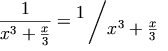

rispetto a . La rappresentazione in MathML per ciascuno di questi
esempi è mostrata in seguito.
rispetto a . La rappresentazione in MathML per ciascuno di questi
esempi è mostrata in seguito.
Descrizione sommaria: Linguaggio di
marcatura matematica (MathML) Versione 2.0
Precedente: 2 Fondamenti del MathML
Successivo: 4 Marcatura di contenuto
3 Marcatura di presentazione
3.1 Introduzione
3.1.1 Cosa
rappresentano gli elementi di presentazione
3.1.2 Terminologia
usata in questo capitolo
3.1.3 Argomenti necessari
3.1.4 Elementi con
comportamenti speciali
3.1.5 Sommario degli elementi di
presentazione
3.2 Elementi token
3.2.1 Attributi comuni agli elementi
token
3.2.2 Identificatore (mi)
3.2.3 Numero
(mn)
3.2.4 Operatore, parentesi, separatore o
accento (mo)
3.2.5 Testo
(mtext)
3.2.6 Spazio (mspace)
3.2.7 Letterale
stringa (ms)
3.2.8 Riferimento a caratteri non-ASCII
(mchar)
3.2.9 Aggiungere nuovi glifi di caratteri
al MathML (mglyph)
3.3 Schemi generali di
disposizione
3.3.1 Raggruppare orizzontalmente le
sottoespressioni (mrow)
3.3.2 Frazioni (mfrac)
3.3.3 Radicali (msqrt,
mroot)
3.3.4 Modifiche allo stile
(mstyle)
3.3.5 Messaggi di errore
(merror)
3.3.6 Aggiustare lo spazio intorno al
contenuto (mpadded)
3.3.7 Rendere il contenuto invisibile
(mphantom)
3.3.8 Contenuto tra coppie di parentesi
(mfenced)
3.3.9 Includere il contenuto nella
notazione (menclose)
3.4 Schemi di apici, pedici e
limiti
3.4.1 Pedice
(msub)
3.4.2 Apice
(msup)
3.4.3 Coppia pedice-apice
(msubsup)
3.4.4 Testo
sotto una base (munder)
3.4.5 Testo
sopra una base (mover)
3.4.6 Testo sotto e sopra una base
(munderover)
3.4.7 Preapici, prepedici e indici
di tensore (mmultiscripts)
3.5 Tabelle e matrici
3.5.1 Tabella o matrice
(mtable)
3.5.2 Riga di
tabella o matrice (mtr)
3.5.3 Riga etichettata di tabella o
matrice (mlabeledtr)
3.5.4 Voce di
tabella o matrice (mtd)
3.5.5 Marcatori di allineamento
3.6 Espressioni
vivacizzanti
3.6.1 Associare un'azione ad una
sottoespressione (maction)
Questo capitolo specifica gli elementi di `presentazione' del MathML, che possono essere usati per descrivere la struttura della disposizione della notazione matematica.
Gli elementi di presentazione corrispondono ai `costruttori' della tradizionale notazione matematica - ovvero, ai tipi fondamentali di simboli e di strutture che costruiscono le espressioni dalle quali è formato ogni pezzo particolare di notazione matematica tradizionale. A causa dell'importanza della tradizionale notazione visuale, le descrizioni dei costrutti notazionali che gli elementi rappresentano sono date di solito in questo documento in termini visuali. Comunque, gli elementi sono indipendenti dal mezzo nel senso che sono stati progettati per contenere abbastanza informazioni anche per buoni riproduttori vocali. Alcuni attributi di questi elementi possono avere senso solo per mezzi visuali, ma la maggior parte degli attributi può essere trattata in modo analogo anche in audio (per esempio, con una corrispondenza tra durata di tempo ed estensione orizzontale).
Gli elementi di presentazione del MathML suggeriscono soltanto (ovvero non richiedono) modi specifici di presentazione per permettere una presentazione dipendente dal mezzo e per preferenze individuali di stile. Queste specifiche descrivono piuttosto in dettaglio le regole di presentazione visuale suggerite, ma un particolare riproduttore MathML è libero di usare le sue regole finché le sue presentazioni saranno comprensibili.
Gli elementi di presentazione intendono esprimere la struttura
sintattica della notazione matematica in un modo molto simile a come i
titoli, le sezioni e i paragrafi catturano la struttura sintattica di
livello maggiore di un documento di testo. A causa di questo, per
esempio, una singola riga di identificatori e operatori, come
`x + a/b', sarà spesso
rappresentata non solo da un singolo elemento mrow (che
viene presentato come una linea orizzontale dei suoi argomenti), ma da
più elementi mrow annidati che corrispondono alle
sottoespressioni annidate delle quali è composta un'espressione
matematica - in questo caso,
<mrow>
<mi> x </mi>
<mo> + </mo>
<mrow>
<mi> a </mi>
<mo> / </mo>
<mi> b </mi>
</mrow>
</mrow>
In modo simile, gli apici sono aggiunti non solo al carattere precedente, ma all'intera espressione che forma la loro base. Questa struttura permette una presentazione di qualità migliore della matematica, specialmente quando i dettagli dell'ambiente di riproduzione come l'ampiezza dello schermo non sono noti all'autore del documento; inoltre facilita notevolmente l'interpretazione automatica delle strutture matematiche rappresentate.
Certi caratteri MathML sono usati per nominare operatori o
identificatori che nella notazione tradizionale si rappresentano nello
stesso modo di altri simboli, come ⅆ,
ⅇ o ⅈ, o
operatori che normalmente si rappresentano invisibilmente, come
⁢, ⁡ o
⁣. Questi sono simboli o oggetti
notazionali distinti, come evidenziato dalle loro diverse riproduzioni
parlate e in alcuni casi dal loro effetto sulle interruzioni di linea
e sulla spaziatura nella riproduzione visuale, e come tali dovrebbero
essere rappresentati da appropriati riferimenti alle specifiche
entità. Per esempio, l'espressione rappresentata visivamente
come `f(x)' verrebbe pronunciata di solito in inglese
`f di x' piuttosto che soltanto
`f x'; questo è esprimibile in MathML con
l'uso dell'operatore ⁡ dopo la
`f', che (in questo caso) potrà essere riprodotto
acusticamente come `di'.
L'elenco completo delle entità del MathML è descritto nel Capitolo 6 [Caratteri, entità e font].
E' fortemente consigliato che, prima di leggere il presente capitolo, si legga la Sezione 2.3 [Sintassi e grammatica del MathML] sulla sintassi e grammatica del MathML, che contiene informazioni importanti sulla notazione e sulle convenzioni del MathML. In particolare, in questo capitolo si assume che il lettore abbia una comprensione della terminologia fondamentale dell'XML descritta nella Sezione 2.3.2 [Una breve introduzione della sintassi dell'XML], e delle notazioni e convenzioni sui valori degli attributi descritte nella Sezione 2.3.4 [Valori degli attributi del MathML].
Il resto di questa sezione introduce la terminologia specifica del MathML e le convenzioni usate in questo capitolo.
Gli elementi di presentazione sono divisi in due classi. Gli
elementi token rappresentano simboli individuali, nomi, numeri,
etichette, eccetera. In generale, i token possono avere solo caratteri
ed elementi mchar come contenuto. Le uniche eccezioni
sono l'elemento di allineamento verticale malignmark e i
riferimenti alle entità. (Si noti, comunque, che i riferimenti
alle entità sono disapprovati in favore
dell'elemento mchar nel MathML 2.0.) Gli schemi di
disposizione costruiscono espressioni a partire dalle parti, e
possono avere solo elementi come contenuto (escluso spazi bianchi, che
sono ignorati). Ci sono inoltre alcuni elementi vuoti usati in
congiunzione con certi schemi di disposizione.
Tutti i singoli `simboli' in un'espressione matematica devono
essere rappresentati da elementi token del MathML. I tipi primari di
elementi token del MathML sono identificatori (es. variabili o nomi di
funzione), numeri e operatori (comprese le parentesi e i separatori
come le virgole). Ci sono inoltre elementi token per rappresentare
testo o spazi bianchi che hanno un significato più estetico che
matematico, e per rappresentare `letterali stringa' per
compatibilità con i sistemi di computer algebra. Si noti che,
sebbene un elemento token rappresenti un singolo `simbolo'
significativo (nome, numero, etichetta, simbolo matematico, eccetera),
tali simboli possono essere composti da più di un
carattere. Per esempio sin e 24 sono
rappresentati rispettivamente dai singoli token
<mi>sin</mi> e
<mn>24</mn>.
Nella tradizionale notazione matematica le espressioni sono costruite ricorsivamente a partire da espressioni più piccole, e alla fine a partire da simboli, con le parti raggruppate e posizionate usando una di un piccolo insieme di strutture notazionali, che possono essere viste come `costruttori di espressioni'. Nel MathML le espressioni sono costruite nello stesso modo, con gli schemi di disposizione che assumono il ruolo dei costruttori di espressioni. Gli schemi di disposizione specificano il modo nel quale le sottoespressioni sono riunite a formare espressioni più grandi. La terminologia deriva dal fatto che ogni schema di disposizione corrisponde ad un modo diverso di `disporre' le sue sottoespressioni per formare un'espressione più grande nella tradizionale impaginazione matematica.
La terminologia usata in questo capitolo per classi speciali di elementi, e per relazioni tra elementi, è la seguente: gli elementi di presentazione sono gli elementi MathML definiti nel presente capitolo. Questi elementi sono elencati nella Sezione 3.1.5 [Sommario degli elementi di presentazione]. Gli elementi di contenuto sono gli elementi MathML definiti nel Capitolo 4 [Marcatura di contenuto]. Gli elementi di contenuto sono elencati nella Sezione 4.4 [Gli elementi della marcatura di contenuto].
Un'espressione MathML è una singola istanza di un
qualunque elemento di presentazione ad eccezione degli elementi vuoti
none o mprescripts, oppure è una
singola istanza di un qualunque elemento di contenuto che è
ammesso come contenuto di elementi di presentazione (elencati nella Sezione 5.2.4 [Marcatura di
contenuto nella marcatura di presentazione]). L'intuizione dietro
la definizione di un'espressione è che essa è un
elemento con una riproduzione non ambigua senza essere all'interno di
un costrutto più grande. Una sottoespressione di
un'espressione E è una qualunque espressione MathML che
sia parte del contenuto di E, sia direttamente che
indirettamente, ovvero sia un `figlio' di E o meno.
Poiché gli schemi di disposizione associano un significato speciale al numero e/o alle posizioni dei loro figli, un figlio di uno schema di disposizione è detto anche argomento di tale elemento. Come conseguenza delle definizioni precedenti, il contenuto di uno schema di disposizione consiste esattamente in una sequenza di zero o più elementi non sovrapposti che sono i suoi argomenti.
Molti degli elementi qui descritti richiedono un numero specifico di argomenti (sempre 1, 2 o 3). Nelle descrizioni dettagliate della sintassi dell'elemento date in seguito, il numero degli argomenti necessari è indicato implicitamente dando nomi per gli argomenti alle varie posizioni. Alcuni elementi hanno requisiti addizionali sul numero o tipo degli argomenti, che sono descritti con i singoli elementi. Per esempio, alcuni elementi accettano sequenze di zero o più argomenti - ovvero possono occorrere anche senza argomenti.
Si noti che gli elementi che codificano lo spazio riprodotto
contano come argomenti degli elementi nei quali appaiono. Si
veda la Sezione 3.2.6
[Spazio (mspace)] per una discussione sull'uso
corretto di tali elementi di spaziatura.
mrow impliciti Gli elementi elencati nella seguente tabella che richiedono 1*
argomenti (msqrt, mstyle,
merror, menclose, mpadded,
mphantom e mtd) in realtà accettano
qualunque numero di argomenti. Comunque, se il numero di argomenti
è 0, o è maggiore di 1, trattano il loro contenuto come
un singolo elemento mrow implicito formato da
tutti i loro argomenti.
Per esempio,
<mtd> </mtd>
è trattato come se fosse
<mtd> <mrow> </mrow> </mtd>
e
<msqrt> <mo> - </mo> <mn> 1 </mn> </msqrt>
è trattato come se fosse
<msqrt>
<mrow>
<mo> - </mo>
<mn> 1 </mn>
</mrow>
</msqrt>
Questa caratteristica permette ai dati MathML di non contenere (ed
ai suoi autori di omettere) molti elementi mrow che
sarebbero altrimenti necessari.
Nelle descrizioni in questo capitolo dei comportamenti di
presentazione degli elementi sopra elencati, si può assumere
che il loro contenuto consista in esattamente un'espressione, che
può essere un elemento mrow formato dai loro
argomenti in questo modo. Comunque, i numeri dei loro argomenti sono
mostrati nella seguente tabella come 1*, poiché sono compresi
in modo più naturale come elementi che agiscono su una singola
espressione.
Per convenienza, ecco una tabella del numero di argomenti richiesti
da ogni elemento, e i ruoli dei singoli argomenti dove essi sono
distinti. Un numero di argomenti di 1* indica un elemento
mrow implicito come descritto in precedenza.
| Elemento | Numero di argomenti richiesti | Ruolo degli argomenti (dove essi differiscono per la posizione) |
mrow |
0 o più | |
mfrac |
2 | numeratore denominatore |
msqrt |
1* | |
mroot |
2 | base indice |
mstyle |
1* | |
merror |
1* | |
mpadded |
1* | |
mphantom |
1* | |
mfenced |
0 o più | |
menclose |
1* | |
msub |
2 | base pedice |
msup |
2 | base apice |
msubsup |
3 | base pedice apice |
munder |
2 | base testo-sotto-la-base |
mover |
2 | base testo-sopra-la-base |
munderover |
3 | base testo-sotto-la-base testo-sopra-la-base |
mmultiscripts |
1 o più | base
(pedice apice)*
[<mprescripts/>
(prepedice preapice)*] |
mtable |
0 o più righe | 0 o più elementi mtr o
mlabeledtr |
mlabeledtr |
1 o più | un'etichetta e 0 o più elementi
mtd |
mtr |
0 o più | 0 o più elementi mtd |
mtd |
1* | |
maction |
1 o più | dipende dall'attributo actiontype |
Certi elementi di presentazione del MathML hanno comportamenti speciali in certi contesti. Tali comportamenti speciali sono discussi nelle descrizioni dettagliate degli elementi in seguito. Comunque, per comodità, alcune delle classi di comportamenti speciali più importanti sono elencate qui.
Certi elementi sono considerati di spaziatura; essi sono definiti
nella Sezione 3.2.6 [Spazio
(mspace)]. Questa definizione ha effetto su alcune
delle regole di riproduzione suggerite per gli elementi
mo (Sezione 3.2.4
[Operatore, parentesi, separatore o accento
(mo)]).
Certi elementi, es. msup, possono ornare gli operatori
che sono il loro primo argomento. Questi elementi sono elencati nella
Sezione 3.2.4 [Operatore,
parentesi, separatore o accento (mo)], che definisce
precisamente un `operatore ornato' e spiega che effetti ha ciò
sulle regole di riproduzione suggerite per gli operatori
estensibili.
Certi elementi trattano i loro argomenti come gli argomenti di un
`elemento mrow implicito' se ad essi non viene passato
esattamente un argomento, come spiegato nella Sezione 3.1.3 [Argomenti
necessari].
Nel MathML 1.x l'elemento mtable poteva dedurre gli
elementi mtr intorno ai suoi argomenti, e l'elemento
mtr poteva dedurre gli elementi mtd. Nel
MathML 2.0 gli elementi mtr e mtd devono
essere espliciti. Comunque, per compatibilità all'indietro, i
riproduttori possono voler continuare a supportare gli elementi
mtr e mtd impliciti.
mi |
identificatore |
mn |
numero |
mo |
operatore, parentesi o separatore |
mtext |
testo |
mspace |
spazio |
ms |
letterale stringa |
mchar |
riferimento a caratteri non ASCII |
mglyph |
aggiungere nuovi glifi di caratteri al MathML |
mrow |
raggruppa orizzontalmente un numero qualsiasi di sottoespressioni |
mfrac |
forma una frazione da due sottoespressioni |
msqrt |
forma un segno di radice quadrata (radicale senza indice) |
mroot |
forma un radicale con l'indice specificato |
mstyle |
modifica allo stile |
merror |
include un messaggio di errore di sintassi da un preprocessore |
mpadded |
aggiusta lo spazio intorno al contenuto |
mphantom |
rende il contenuto invisibile ma conserva la sua dimensione |
mfenced |
circonda il contenuto con una coppia di parentesi |
menclose |
include il contenuto in un simbolo estensibile come un segno di divisione lunga |
msub |
associa un pedice a una base |
msup |
associa un apice a una base |
msubsup |
associa una coppia pedice-apice a una base |
munder |
scrive del testo sotto una base |
mover |
scrive del testo sopra una base |
munderover |
scrive del testo sopra e sotto una base |
mmultiscripts |
associa preapici, prepedici e indici di tensore a una base |
mtable |
tabella o matrice |
mlabeledtr |
riga in una tabella o matrice con un'etichetta o un numero di equazione |
mtr |
riga in una tabella o matrice |
mtd |
un elemento in una tabella o matrice |
maligngroup e malignmark |
marcatori di allineamento |
maction |
associa azioni ad una sottoespressione |
Gli elementi token possono contenere ogni sequenza di zero o più caratteri MathML. In particolare, sono permessi i token con contenuto vuoto, e dovrebbero essere tipicamente riprodotti invisibilmente, con nessuna ampiezza tranne la normale spaziatura aggiuntiva per quel tipo di elemento token.
Il set completo dei caratteri MathML è descritto nel Capitolo 6 [Caratteri, entità e
font]. In generale, i caratteri MathML possono essere sia
rappresentati direttamente come dati di caratteri Unicode che
indirettamente tramite l'elemento &mchar; (si veda la
Sezione 3.2.8 [Riferimento a
caratteri non ASCII (mchar)]). I caratteri MathML
possono essere inoltre rappresentati tramite riferimenti ad
entità, sebbene questa pratica sia disapprovata nel MathML 2.0. I
nuovi caratteri MathML, o glifi non standard per caratteri MathML
esistenti, possono essere rappresentati per mezzo dell'elemento
&mglyph;.
I caratteri MathML possono occorrere solo come parte del contenuto di un elemento token. L'unica eccezione è lo spazio bianco tra elementi, che è ignorato.
A parte gli elementi &mchar; e
&mglyph;, l'elemento malignmark è
l'unico altro elemento permesso nel contenuto di token. Si veda la Sezione 3.5.5 [Marcatori di
allineamento] per dettagli.
Su tutti gli elementi token escluso mspace,
mchar e mglyph, e su nessun altro elemento
tranne mstyle, sono forniti vari attributi relativi alla
formattazione del testo. Essi sono:
| Nome | valori | predefinito |
| fontsize | numero e v-unità | ereditato |
| fontweight | normal | bold | ereditato |
| fontstyle | normal | italic | normal (tranne su
<mi>) |
| fontfamily | stringa | famiglia-di-font-css | ereditato |
| color | #rgb | #rrggbb | nome-di-colore-html | ereditato |
(Si veda la Sezione 2.3.4 [Valori degli attributi del MathML] per la terminologia e la notazione usate nelle descrizioni dei valori degli attributi.)
Gli elementi token (tranne mspace) devono essere
riprodotti come il loro contenuto (ovvero, nel caso visuale, come una
riga orizzontale a spaziatura stretta di glifi standard per i
caratteri nel loro contenuto) usando gli attributi sopra elencati, con
gli spazi intorno modificati da regole o attributi specifici ad ogni
tipo di elemento token. Alcuni dei singoli attributi sono discussi
ulteriormente in seguito.
Si tenga presente che tutti gli elementi MathML, compresi i token,
accettano gli attributi class, style e
id per compatibilità con i meccanismi dei fogli di
stile, come descritto nella Sezione 2.3.5 [Attributi
condivisi da tutti gli elementi del MathML]. In generale, le
proprietà dei font controllate dagli attributi sopra elencati
sono gestite in modo migliore utilizzando i fogli stile CSS o XSL a
seconda del contesto.
Le espressioni MathML sono spesso incorporate in un formato di testo come l'HTML, e le loro presentazioni sono ugualmente incorporate nella presentazione del testo circostante. Il riproduttore del testo circostante (es. un browser) dovrebbe fornire al riproduttore MathML informazioni sull'ambiente di riproduzione, compresi gli attributi del testo circostante come la dimensione del suo font, in modo che il MathML possa essere presentato in uno stile compatibile. Per questa ragione, la maggior parte dei valori degli attributi che hanno effetti sulla riproduzione del testo sono ereditate dall'ambiente di presentazione, come mostrato nella colonna `predefinito' nella tabella precedente. (Si noti che è altrettanto importante che l'ambiente di presentazione fornisca al riproduttore informazioni aggiuntive, come la posizione della linea di base del testo circostante, che non è specificata da nessun attributo MathML.)
L'eccezione al modello generale di ereditarietà è
l'attributo fontstyle, il cui valore di default è
normal (non inclinato) per la maggior parte dei token, ma
per mi dipende dal contenuto in un modo descritto nella
sezione a proposito di mi, la Sezione 3.2.2 [Identificatore
(mi)]. Si noti che l'attributo fontstyle
non è ereditato nel MathML, anche se la proprietà CSS1
corrispondente `font-style' è ereditata nel CSS.
L'attributo fontsize specifica la dimensione del font
desiderata. v-unità rappresenta un'unità di
lunghezza verticale (si veda la Sezione 2.3.4.3 [Attributi
compatibili con i CSS]). L'unità più comune per
specificare le dimensioni dei font nell'impaginazione è
pt (punti).
Se la dimensione richiesta del font corrente non è disponibile, il riproduttore dovrebbe approssimarla nella maniera che probabilmente condurrà alla riproduzione più comprensibile e di qualità migliore.
Molti elementi MathML cambiano automaticamente il valore di
fontsize in alcuni dei loro figli; si veda la discussione
sull'attributo scriptlevel nella sezione sull'elemento
mstyle, la Sezione 3.3.4 [Modifiche allo
stile (mstyle)].
Il valore dell'attributo fontfamily deve essere il
nome di un font che può essere disponibile a un riproduttore
MathML, o informazioni che permettono al riproduttore di scegliere un
font in qualche maniera; i valori accettabili e i loro significati
dipendono dal particolare riproduttore e dall'ambiente di riproduzione
in uso, e non sono specificati dal MathML (ma si veda la nota a
proposito di famiglia-di-font-css in seguito). (Si noti
che il meccanismo del riproduttore per trovare i font a seconda del
nome potrebbe tener conto delle maiuscole.)
Se il valore dell'attributo fontfamily non è
riconosciuto da un particolare riproduttore MathML, questo non deve
mai essere interpretato come un errore MathML; piuttosto, il
riproduttore deve usare un font che considera un sostituto adatto per
il font richiesto, oppure ignorare l'attributo e agire come se non
fosse stato dato nessun valore.
Si noti che qualunque uso dell'attributo fontfamily
improbabilmente sarà portabile da un riproduttore MathML a un
altro. In particolare, non deve mai essere usato per cercare di
ottenere l'effetto di un riferimento ad un carattere MathML non ASCII
(per esempio, usando un riferimento a un carattere in un qualche font
simbolico che mappa caratteri ordinari in glifi per caratteri non
ASCII). Come corollario a questo principio, i riproduttori MathML
devono cercare di produrre sempre presentazioni comprensibili per i
caratteri MathML elencati nel Capitolo 6
[Caratteri, entità e font], anche quando questi caratteri
non sono disponibili nella famiglia di font indicata. Tale
presentazione è sempre possibile - come ultima risorsa, un
carattere può essere riprodotto in modo da apparire come un
riferimento ad entità in stile XML usando uno dei nomi di
entità dati per lo stesso carattere nel Capitolo 6 [Caratteri, entità e
font].
Il simbolo famiglia-di-font-css si riferisce ad un
valore legale per la proprietà font-family nel
CSS1, che è un elenco di nomi di famiglie di font alternative o
di tipi di font generici, separati da virgole, in ordine di
preferenza, come documentato più dettagliatamente nel CSS1. I
riproduttori MathML sono incoraggiati a fare uso della sintassi CSS
per specificare i font quando ciò è pratico nel loro
ambiente di riproduzione, anche se non supportano altrimenti i
CSS. (Si veda anche la sottosezione degli attributi compatibili con i
CSS all'interno della Sezione 2.3.4.3 [Attributi
compatibili con i CSS].)
La sintassi e il significato dell'attributo color sono
come descritti per lo stesso attributo di <mstyle>
(Sezione 3.3.4 [Modifiche
allo stile (mstyle)]).
mi) Un elemento mi rappresenta un nome simbolico o testo
arbitrario che deve essere riprodotto come identificatore. Gli
identificatori possono comprendere variabili, nomi di funzioni e
costanti simboliche.
Non tutti gli `identificatori matematici' sono rappresentati da
elementi mi - per esempio, le variabili con pedici o con
apici devono essere rappresentate usando rispettivamente gli elementi
msub o msup. Viceversa, testo arbitrario che
assume il ruolo di un `termine' (come un'ellisse in una serie di
somme) può essere rappresentato usando un elemento
mi, come mostrato in un esempio nella Sezione 3.2.5.4 [Mescolare
testo e matematica].
Si dovrebbe evidenziare che mi è un elemento di
presentazione, e come tale si limita ad indicare che il suo contenuto
dovrebbe essere presentato come identificatore. Nella maggior parte
dei casi il contenuto di un elemento mi
rappresenterà realmente un identificatore matematico come una
variabile o un nome di funzione. Comunque, come indica il paragrafo
precedente, la corrispondenza tra notazioni che dovrebbero essere
riprodotte come identificatori e notazioni che intendono rappresentare
identificatori matematici non è perfetta. Per un elemento la
cui semantica è garantita essere quella di un identificatore,
si veda la descrizione dell'elemento ci nel Capitolo 4 [Marcatura di
contenuto].
L'elemento mi accetta gli attributi elencati nella Sezione 3.2.1 [Attributi
comuni agli elementi token], ma in un caso con un diverso valore
predefinito:
| Nome | valori | predefinito |
| fontstyle | normal | italic | (dipende dal contenuto; descritto in seguito) |
Un tipico riproduttore grafico presenterà un elemento
mi come i caratteri nel suo contenuto, senza spaziatura
aggiuntiva intorno ai caratteri (tranne la spaziatura associata con
gli elementi vicini). Il valore predefinito di fontstyle
sarà (tipicamente) normal (non inclinato) a meno
che il contenuto non sia un singolo carattere, nel qual caso esso
sarà italic (corsivo). Si noti che questa regola
per fontstyle è specifica degli elementi
mi; il valore predefinito per l'attributo
fontstyle di altri elementi token del MathML è
normal.
<mi> x </mi> <mi> D </mi> <mi> sin </mi> <mi></mi>
Un elemento mi senza contenuto è permesso;
<mi></mi> potrebbe, per esempio, essere usato
in un `generatore di espressioni' per rappresentare una locazione in
un'espressione MathML che richiede un `termine' (secondo la sintassi
convenzionale per la matematica) ma ancora non ne contiene uno.
Gli identificatori comprendono nomi di funzioni come
`sin'. Espressioni come `sin x' dovrebbero essere scritte
usando l'operatore ⁡ (che ha anche il
nome breve ⁡) come mostrato in seguito; si veda
anche la discussione sugli operatori invisibili nella Sezione 3.2.4 [Operatore,
parentesi, separatore o accento (mo)].
<mrow> <mi> sin </mi> <mo> ⁡ </mo> <mi> x </mi> </mrow>
Testo vario che dovrebbe essere trattato come un `termine'
può inoltre essere rappresentato da un elemento
mi, come in:
<mrow> <mn> 1 </mn> <mo> + </mo> <mi> ... </mi> <mo> + </mo> <mi> n </mi> </mrow>
Quando un elemento mi è usato in tali
situazioni straordinarie, impostare esplicitamente l'attributo
fontstyle può dare risultati migliori del
comportamento predefinito di alcuni riproduttori.
I nomi delle costanti simboliche devono essere rappresentati come
elementi mi:
<mi> π </mi> <mi> ⅈ </mi> <mi> ⅇ </mi>
L'uso di riferimenti ad entità speciali per tali costanti può semplificare l'interpretazione degli elementi di presentazione del MathML. Si veda il Capitolo 6 [Caratteri, entità e font] per un elenco completo dei riferimenti ad entità carattere nel MathML.
mn) Un elemento mn rappresenta un `letterale numerico' o
altri dati che devrono essere riprodotti come un letterale
numerico. Generalmente parlando, un letterale numerico è una
sequenza di cifre, che può comprendere un punto decimale, che
rappresenta un numero intero o reale senza segno.
Il concetto di un `numero' matematico dipende dal contesto, e non
è ben definito a livello astratto. Come conseguenza, non tutti
i numeri matematici dovrebbero essere rappresentati usando
mn; in seguito sono mostrati esempi di numeri matematici
che dovrebbero essere rappresentati diversamente, ed essi comprendono
i numeri negativi, i numeri complessi, i rapporti di numeri mostrati
come frazioni e i nomi delle costanti numeriche.
Viceversa, poiché mn è un elemento di
presentazione, ci sono alcune situazioni dove può essere
desiderabile includere testo arbitrario nel contenuto di un elemento
mn che dovrebbe semplicemente essere riprodotto come
letterale numerico, anche se il contenuto può non essere
interpretabile in modo non ambiguo come un numero secondo una
qualsiasi codifica standard particolare di numeri come sequenze di
caratteri. Come regola generale, comunque, l'elemento mn
deve essere riservato per situazioni dove il suo contenuto intende
realmente rappresentare una quantità numerica in qualche
modo. Per un elemento la cui semantica è garantita essere
quella di un tipo particolare di numero matematico, si veda la
descrizione di cn nel Capitolo 4 [Marcatura di
contenuto].
L'elemento mn accetta gli attributi elencati nella Sezione 3.2.1 [Attributi
comuni agli elementi token].
Un tipico riproduttore grafico presenterebbe un elemento
mn come i caratteri del suo contenuto, senza spaziatura
aggiuntiva intorno ad essi (tranne la spaziatura degli elementi vicini
come mo). A differenza di mi, gli elementi
mn sono (tipicamente) presentati in un font non inclinato
come comportamento predefinito, indipendentemente dal loro
contenuto.
<mn> 2 </mn> <mn> 0.123 </mn> <mn> 1,000,000 </mn> <mn> 2.1e10 </mn> <mn> 0xFFEF </mn> <mn> MCMLXIX </mn> <mn> ventuno </mn>
mn soltanto Molti numeri matematici dovrebbero essere rappresentati usando
elementi di presentazione diversi da mn soltanto; questi
comprendono i numeri complessi, i rapporti di numeri mostrati come
frazioni e i nomi delle costanti numeriche. Esempi di rappresentazioni
MathML di tali numeri comprendono:
<mrow>
<mn> 2 </mn>
<mo> + </mo>
<mrow>
<mn> 3 </mn>
<mo> ⁢ </mo>
<mi> ⅈ </mi>
</mrow>
</mrow>
<mfrac> <mn> 1 </mn> <mn> 2 </mn> </mfrac>
<mi> π </mi>
<mi> ⅇ </mi>
mo) Un elemento mo rappresenta un operatore o qualunque
cosa che deve essere riprodotta come operatore. In generale, le
convenzioni notazionali per gli operatori matematici sono piuttosto
complicate, e perciò il MathML fornisce un meccanismo
relativamente sofisticato per specificare il comportamento di
riproduzione di un elemento mo. Come conseguenza, nel
MathML l'elenco di cose che devono essere `riprodotte come operatori'
comprende varie notazioni che non sono operatori matematici nel senso
comune. Al di là degli operatori ordinari con le forme infisse,
prefisse o postfisse, questi comprendono i caratteri di delimitazione
come le parentesi tonde, quadre e le barre del `valore assoluto', i
separatori come la virgola e il punto e virgola, e gli accenti
matematici come una barra o una tilde sopra un simbolo.
Il termine `operatore' come usato nel presente capitolo significa
ogni simbolo o notazione che deve essere riprodotta come operatore, e
che è perciò rappresentabile con un elemento
mo. Ovvero, il termine `operatore' comprende ogni
operatore ordinario, parentesi, separatore o accento a meno che non
sia diversamente specificato o chiaro dal contesto.
Tutti questi simboli sono rappresentati nel MathML con elementi
mo poiché sono soggetti essenzialmente agli stessi
attributi e alle stesse regole di riproduzione; sono supportate,
quando esistono, sottili distinzioni nella presentazione di queste
classi di simboli usando gli attributi booleani fence
(parentesi), separator e accent, che possono
essere usati per distinguere questi casi.
Una caratteristica basilare dell'elemento mo è
che i valori predefiniti dei suoi attributi sono impostati caso per
caso da un `dizionario degli operatori' come spiegato in seguito. In
particolare, i valori predefiniti di fence,
separator e accent possono essere trovati di
solito nel dizionario degli operatori e perciò non hanno
bisogno di essere specificati in ogni elemento mo.
Si noti che alcuni operatori matematici sono rappresentati non da
elementi mo soltanto, ma da elementi mo
`ornati' con (per esempio) testo sopra di essi; questo è
ulteriormente descritto in seguito. Viceversa, come elementi di
presentazione, gli elementi mo possono contenere testo
arbitrario, anche quando quel testo non ha un'interpretazione standard
come operatore; per un esempio si veda la discussione `Mescolare testo
e matematica' nella Sezione 3.2.5 [Testo
(mtext)]. Si veda inoltre il Capitolo 4 [Marcatura di contenuto] per
definizioni di elementi di contenuto del MathML che garantiscono di
avere la semantica di operatori matematici particolari.
Gli elementi mo accettano gli attributi elencati nella Sezione 3.2.1 [Attributi
comuni agli elementi token], e gli attributi aggiuntivi qui
elencati. La maggior parte degli attributi ottiene i propri valori
predefiniti dalla Sezione 3.2.4.7.1 [Il
dizionario degli operatori], come descritto in seguito in questa
sezione. Quando non viene trovata una voce nel dizionario per un dato
elemento mo viene usato il valore predefinito qui
mostrato tra parentesi.
| Nome | valori | predefinito |
| form | prefix | infix | postfix | impostato a seconda della posizione
dell'operatore in un elemento mrow (segue la regola);
usato con il contenuto di mo come indice per il
dizionario degli operatori |
| fence | true | false | impostato dal dizionario (false) |
| separator | true | false | impostato dal dizionario (false) |
| lspace | numero h-unità | spazio con nome | impostato dal dizionario (thickmathspace) |
| rspace | numero h-unità | spazio con nome | impostato dal dizionario (thickmathspace) |
| stretchy | true | false | impostato dal dizionario (false) |
| symmetric | true | false | impostato dal dizionario (true) |
| maxsize | numero [ v-unità | h-unità ] | spazio con nome | infinity | impostato dal dizionario (infinity) |
| minsize | numero [ v-unità | h-unità ] | spazio con nome | impostato dal dizionario (1) |
| largeop | true | false | impostato dal dictionario (false) |
| movablelimits | true | false | impostato dal dizionario (false) |
| accent | true | false | impostato dal dizionario (false) |
h-unità rappresenta un'unità di lunghezza
orizzontale, e v-unità rappresenta un'unità
di lunghezza verticale (si veda la Sezione 2.3.4.2 [Attributi con
unità]). spazio con nome è uno di
veryverythinmathspace, verythinmathspace,
thinmathspace, mediummathspace,
thickmathspace, verythickmathspace o
veryverythickmathspace. Questi valori sono configurabili
dall'elemento mstyle che è discusso nella Sezione 3.3.4 [Modifiche allo
stile (mstyle)]. I valori di default di
veryverythinmathspace ...
veryverythickmathspace sono rispettivamente 1/18em
... 7/18em.
Se non viene specificata un'unità con maxsize o
minsize, il numero è un moltiplicatore della
normale dimensione dell'operatore nella direzione (o nelle direzioni)
nelle quali si estende. Questi attributi sono spiegati in
seguito.
I tipici riproduttori grafici mostreranno tutti gli elementi
mo come i caratteri nel loro contenuto, con spaziatura
aggiuntiva intorno agli elementi determinata dagli attributi sopra
elencati. Le regole dettagliate per determinare la spaziatura tra gli
operatori nelle presentazioni visuali sono descritte in una
sottosezione in seguito. Come sempre, il MathML non richiede una
presentazione specifica, e queste regole sono fornite come
suggerimenti per comodità degli implementatori.
I riproduttori che non hanno accesso a tutti i font dell'insieme di
caratteri del MathML possono scegliere di non riprodurre un elemento
mo come i caratteri precisi nel suo contenuto in alcuni
casi. Per esempio, <mo> ≤ </mo>
potrebbe essere riprodotto come <= su un
terminale. Comunque, come regola generale, i riproduttori dovrebbero
tentare di riprodurre il contenuto di un elemento mo
più letteralmente possibile. Ovvero, <mo> ≤
</mo> e <mo> <= </mo>
dovrebbero essere presentati diversamente. (Il primo dovrebbe essere
presentato come un singolo carattere che rappresenta un segno di
minore-o-uguale, e il secondo come la sequenza di due caratteri
<=.)
<mo> + </mo> <mo> < </mo> <mo> ≤ </mo> <mo> <= </mo> <mo> ++ </mo> <mo> ∑ </mo> <mo> .NOT. </mo> <mo> and </mo> <mo> ⁢ </mo>
Si noti che gli elementi mo in questi esempi non hanno
bisogno di attributi fence o separator
espliciti, poiché essi possono essere trovati usando il
dizionario degli operatori come descritto in seguito. Alcuni di questi
esempi possono essere inoltre codificati usando l'elemento
mfenced descritto nella Sezione 3.3.8 [Contenuto tra
coppie di parentesi (mfenced)].
(a+b)
<mrow>
<mo> ( </mo>
<mrow>
<mi> a </mi>
<mo> + </mo>
<mi> b </mi>
</mrow>
<mo> ) </mo>
</mrow>
[0,1)
<mrow>
<mo> [ </mo>
<mrow>
<mn> 0 </mn>
<mo> , </mo>
<mn> 1 </mn>
</mrow>
<mo> ) </mo>
</mrow>
f(x,y)
<mrow>
<mi> f </mi>
<mo> ⁡ </mo>
<mrow>
<mo> ( </mo>
<mrow>
<mi> x </mi>
<mo> , </mo>
<mi> y </mi>
</mrow>
<mo> ) </mo>
</mrow>
</mrow>
Certi operatori che sono `invisibili' nella notazione matematica
tradizionale dovrebbero essere rappresentati da riferimenti ad
entità specifiche all'interno di elementi mo,
piuttosto che semplicemente da niente. I riferimenti ad entità
usati per questi `operatori invisibili' sono:
| Nome intero | Nome breve | Esempi di uso |
⁢ |
⁢ |
xy |
⁡ |
⁡ |
f(x) sin x |
⁣ |
⁣ |
m12 |
Le rappresentazioni in MathML degli esempi nella tabella precedente sono:
<mrow>
<mi> x </mi>
<mo> ⁢ </mo>
<mi> y </mi>
</mrow>
<mrow>
<mi> f </mi>
<mo> ⁡ </mo>
<mrow>
<mo> ( </mo>
<mi> x </mi>
<mo> ) </mo>
</mrow>
</mrow>
<mrow>
<mi> sin </mi>
<mo> ⁡ </mo>
<mi> x </mi>
</mrow>
<msub>
<mi> m </mi>
<mrow>
<mn> 1 </mn>
<mo> ⁣ </mo>
<mn> 2 </mn>
</mrow>
</msub>
Le ragioni per usare specifici elementi mo per gli
operatori invisibili comprendono:
mspace o mtext;
Per esempio, un riproduttore audio potrebbe riprodurre
f(x) (rappresentata come nell'esempio precedente)
dicendo `f di x', ma usare la parola `per' nella sua riproduzione di
xy. Sebbene la sua riproduzione debba essere diversa a
seconda della struttura degli elementi vicini (a volte escludendo `di'
o `per' del tutto), il suo compito è reso molto più
facile dall'uso di un diverso elemento mo per ogni
operatore invisibile.
Il MathML comprende anche ⅆ per
l'uso in un elemento mo per rappresentare il simbolo di
operatore differenziale denotato normalmente da `d'. Le ragioni per
usare esplicitamente questa entità speciale sono simili a
quelle per usare le entità speciali per gli operatori
invisibili descritte nella sezione precedente.
mo I tipici comportamenti di riproduzione visuale per gli elementi
mo sono più complessi che per gli altri elementi
token del MathML, così le regole per riprodurli sono descritte
in questa sottosezione separata.
Si noti che, come tutte le regole di presentazione nel MathML, queste regole sono suggerimenti piuttosto che requisiti. Inoltre, non è stato fatto nessun tentativo di specificare completamente la presentazione; piuttosto, sono state date abbastanza informazioni per rendere l'effetto inteso dei vari attibuti di presentazione più chiaro possibile.
Molti simboli matematici, come un segno di integrale, un segno di
addizione o una parentesi, hanno un uso notazionale tradizionale ben
stabilito e prevedibile. Tipicamente, questo uso ammonta a certi
valori predefiniti per gli attributi degli elementi mo
con un contenuto specifico e un attributo form
specifico. Poiché questi valori predefiniti variano da simbolo
a simbolo, il MathML anticipa che i riproduttori avranno un
`dizionario degli operatori' di attributi predefiniti per gli elementi
mo (si veda l'Appendice D
[Dizionario degli operatori]) indicizzato dal contenuto di ogni
elemento mo e dall'attributo form. Se un
elemento mo non è elencato nel dizionario,
dovrebbero essere usati i valori predefiniti mostrati tra parentesi
nella tabella degli attributi per mo, poiché
questi valori sono tipicamente accettabili per un operatore
generico.
Alcuni operatori sono `sovrascritti', nel senso che possono
occorrere in più di una forma (prefissa, infissa o postfissa),
con proprietà di riproduzione probabilmente diverse per ogni
forma. Per esempio, `+' può essere sia un operatore prefisso
che infisso. Tipicamente, un riproduttore visuale aggiungerà
spazio ad entrambi i lati di un operatore infisso, e solo alla
sinistra di un operatore prefisso. L'attributo form
permette di specificare quale forma utilizzare, nel caso che siano
possibili più di una forma secondo il dizionario degli
operatori e il valore predefinito descritto in seguito non sia
adatto.
form L'attributo form non deve di solito essere specificato
esplicitamente, poiché ci sono efficaci regole euristiche per
inferire il valore dell'attributo form dal contesto. Se
non è specificato, e ci sono più forme possibili nel
dizionario per un elemento mo con il contenuto dato, il
riproduttore deve scegliere quale forma usare come segue (ma si vedano
le eccezioni per gli operatori ornati, descritte in seguito):
mrow di lunghezza (ovvero numero di argomenti) maggiore
di uno (ignorando tutti gli argomenti di spaziatura (si veda la Sezione 3.2.6 [Spazio
(mspace)]) nella determinazione sia della lunghezza
che del primo argomento), si usa la forma prefissa;
mrow di
lunghezza maggiore di uno (ignorando tutti gli argomenti di
spaziatura), si usa la forma postfissa;
mrow, si usa la forma infissa.
Si noti che queste regole fanno riferimento all'elemento
mrow nel quale si trova l'elemento mo. In
alcune situazioni questo elemento mrow potrebbe essere un
elemento mrow implicito presente intorno agli argomenti
di un elemento come msqrt o mtd.
Le parentesi aperte (sinistre) devono avere forma prefissa
(form="prefix"), e le parentesi chiuse (destre)
devono avere forma postfissa (form="postfix");
i separatori sono solitamente `infissi', ma non sempre, a seconda del
contesto. Come per gli operatori ordinari, questi valori non hanno
normalmente bisogno di essere specificati in modo esplicito.
Se l'operatore non occorre nel dizionario con la forma specificata,
il riproduttore deve usare una delle forme disponibili, in ordine di
preferenza: infissa, postfissa, prefissa; se nessuna forma è
disponibile per il dato contenuto dell'elemento mo, il
riproduttore deve usare i valori predefiniti dati tra parentesi nella
tabella degli attributi per mo.
C'è un'eccezione alle regole precedenti per la scelta del
valore predefinito dell'attributo form di un elemento
mo. Un elemento mo che è `ornato' da
uno o più pedici o apici annidati, testo circostante, spazi
bianchi o modifiche allo stile si comporta diversamente. E'
l'operatore ornato nel complesso (questo è definito in modo
preciso, in seguito) la cui posizione in un elemento mrow
è esaminata dalle regole precedenti e i cui spazi circostanti
sono influenzati dalla sua forma, non l'elemento mo al
suo interno; comunque, gli attributi che influenzano gli spazi
circostanti sono presi dall'elemento mo al centro (o
dalla voce nel dizionario di quell'elemento).
Per esempio, il `+4' in a+4b
deve essere considerato un operatore infisso nel complesso, data la
sua posizione al centro di un elemento mrow, ma i suoi
attributi di presentazione devono essere presi dall'elemento
mo che rappresenta il `+', o, quando questi non siano
specificati esplicitamente, dalla voce nel dizionario degli operatori
per <mo form="infix"> + </mo>. La
definizione precisa di un `operatore ornato' è:
mo;
msub, msup,
msubsup, munder, mover,
munderover, mmultiscripts,
mfrac o semantics (Sezione 4.2.6 [Sintassi e
semantica]), il cui primo argomento esista e sia un operatore
ornato;
mstyle, mphantom o
mpadded, tale che un elemento mrow che
contenesse gli stessi argomenti sarebbe un operatore ornato;
maction la cui sottoespressione
selezionata esista e sia un operatore ornato; mrow i cui argomenti consistano (in
qualunque ordine) in un operatore ornato e zero o più
elementi spazio.
Si noti che questa definizione permette l'ornamento annidato solo quando non intervengono elementi circostanti che non fanno parte dell'elenco precedente.
Le regole precedenti per la scelta delle forme degli operatori per
la definizione degli operatori ornati sono scelte in modo tale che in
tutti i casi comuni non sia necessario che l'autore specifichi un
attributo form.
Le seguenti note sono incluse come giustificazione per certi aspetti delle definizioni precedenti, ma non dovrebbero essere importanti per la maggior parte degli utenti del MathML.
Un elemento mfrac è compreso come `ornamento' a
causa della notazione comune per un operatore differenziale:
<mfrac>
<mo> ⅆ </mo>
<mrow>
<mo> ⅆ </mo>
<mi> x </mi>
</mrow>
</mfrac>
Poiché la definizione di operatore ornato ha effetti
sull'uso degli attributi relativi all'estensibilità, è
importante che includa parentesi ornate oltre agli operatori ordinari;
quindi si applica ad ogni elemento mo.
Si noti che un elemento mrow che contiene un solo
argomento è un operatore ornato se e solo se il suo argomento
è un operatore ornato. Questo perché un elemento
mrow con un singolo argomento deve essere equivalente in
ogni aspetto a quell'argomento solo (come discusso nella Sezione 3.3.1 [Raggruppare
orizzontalmente le sottoespressioni (mrow)]). Questo
significa che un elemento mo che sia l'unico argomento di
un elemento mrow determinerà il valore predefinito
del suo attributo form a seconda della posizione di
quell'elemento mrow in un altro elemento
mrow circostante, eventualmente implicito (se ce
n'è uno), piuttosto che a seconda della sua posizione
nell'mrow dove è l'unico argomento.
Si noti che la definizione precedente definisce `ornato' un
qualunque elemento mo - ovvero, `operatore ornato'
può essere considerato (e implementato nei riproduttori) come
una classe speciale di espressioni MathML, della quale mo
è un caso specifico.
L'ammontare di spazio aggiunto intorno ad un operatore (o ad un
operatore ornato), quando esso occorre in un mrow,
può essere direttamente specificato dagli attributi
lspace e rspace. Questi valori sono in ems
se non sono date unità. Per convenzione, gli operatori che
tendono a legarsi strettamente ai loro argomenti hanno valori
più piccoli per la spaziatura di quelli che tendono a legarsi
meno strettamente. Questa convenzione dovrebbe essere seguita nel
dizionario degli operatori incluso in un riproduttore MathML. In
TEX questi valori possono essere soltanto uno di tre
valori; tipicamente essi sono 3/18em, 4/18em e 5/18em. Il MathML non
impone questo limite.
Alcuni riproduttori possono scegliere di non usare nessuno spazio intorno alla maggior parte degli operatori che appaiono all'interno di pedici o apici, come si fa in TEX.
I riproduttori non grafici dovrebbero trattare gli attributi di spaziatura, come gli altri attributi di presentazione qui descritti, in modi analoghi secondo il loro mezzo di riproduzione.
Quattro attributi governano se e come un operatore (eventualmente
ornato) può estendersi in modo da raggiungere la dimensione
degli altri elementi: stretchy, symmetric,
maxsize e minsize. Se un operatore ha
l'attributo stretchy=true, allora esso
(ovvero, ogni carattere nel suo contenuto) obbedisce alle regole di
estensibilità elencate in seguito, dati i vincoli imposti dai
font e dal loro sistema di riproduzione. In pratica, i tipici
riproduttori saranno in grado solamente di estendere un piccolo
insieme di caratteri, e molto probabilmente riusciranno a generare
soltanto un insieme discreto di dimensioni di caratteri.
Non è previsto in MathML un modo per specificare in che
direzione (orizzontale o verticale) estendere un particolare carattere
o operatore; piuttosto, quando si ha
stretchy=true il carattere dovrebbe essere
esteso in ogni direzione nella quale ciò è
possibile. Spetta al riproduttore sapere in quale direzione può
estendere ogni carattere. (La maggior parte dei caratteri possono
essere estesi in al più una direzione dai tipici riproduttori,
ma alcuni riproduttori possono essere in grado di estendere certi
caratteri, come le frecce diagonali, in entrambe le direzioni
indipendentemente.)
Gli attributi minsize e maxsize limitano
l'ammontare dell'estensibilità (in entrambe le
direzioni). Questi due attributi sono dati come moltiplicatori della
dimensione normale dell'operatore nella direzione o nelle direzioni in
cui si estende, o come dimensioni assolute usando le unità. Per
esempio, se un carattere ha maxsize="3", allora
può crescere fino ad essere non più di tre volte la sua
dimensione normale (non estesa).
L'attributo symmetric governa se l'altezza e la
profondità sopra e sotto l'asse del carattere devono essere
uguali (forzando sia l'altezza che la profondità ad essere
uguali al valore maggiore delle due). Un esempio di una situazione
dove si potrebbe impostare symmetric=false
nasce con le parentesi intorno ad una matrice non allineata sull'asse,
caso che occorre frequentemente quando si moltiplicano matrici non
quadrate. In questo caso si vuole che le parentesi si estendano per
coprire la matrice, mentre estendere le parentesi in modo simmetrico
le farebbe portare oltre uno dei limiti della matrice. L'attributo
symmetric si applica solo ai caratteri che si estendono
verticalmente (altrimenti viene ignorato).
Se un elemento mo estensibile è ornato (come
definito in precedenza in questa sezione), l'elemento mo
fondamentale è esteso fino ad una dimensione basata sul contesto
dell'operatore ornato nell'insieme, ovvero alla stessa dimensione che
avrebbe se gli ornamenti non fossero presenti. Per esempio, le
parentesi nell'esempio seguente (che sarebbero tipicamente impostate
estensibili dal dizionario degli operatori) saranno estese entrambe
alla stessa dimensione, la stessa dimensione che avrebbero se non
fossero sottolineate o sopralineate, e inoltre copriranno lo stesso
intervallo verticale:
<mrow>
<munder>
<mo> ( </mo>
<mo> _ </mo>
</munder>
<mfrac>
<mi> a </mi>
<mi> b </mi>
</mfrac>
<mover>
<mo> ) </mo>
<mo> ‾ </mo>
</mover>
</mrow>
Si noti che questo vuol dire che le regole di estensibilità
date in seguito devono far riferimento al contesto di un operatore
ornato nell'insieme, non solo all'elemento mo in se
stesso.
Questo mostra un modo di impostare la dimensione massima di una
parentesi in modo che non cresca, anche se il suo valore di default
è stretchy=true.
<mrow>
<mo maxsize="1"> ( </mo>
<mfrac>
<mi> a </mi> <mi> b </mi>
</mfrac>
<mo maxsize="1"> ) </mo>
</mrow>
L'esempio precedente dovrebbe essere presentato come rispetto alla presentazione predefinita .
Si noti che ogni parentesi è ridimensionata
indipendentemente; se solo una di esse avesse
maxsize="1", sarebbero riprodotte con
dimensioni diverse.
mrow, o è la sola sottoespressione
diretta di un elemento mtd in qualche riga di una
tabella, allora dovrebbe estendersi per coprire l'altezza e la
profondità (sopra e sotto l'asse) delle
sottoespressioni dirette non estensibili nell'elemento
mrow o nella riga della tabella, a meno che
l'estensibilità non sia limitata da attributi
minsize o maxsize.
symmetric=true, allora si usa il massimo
dell'altezza e della profondità per determinare la dimensione,
prima dell'applicazione degli attributi minsize e
maxsize.
mrow è implicito.
La maggior parte delle parentesi aperte e chiuse sono definite nel
dizionario degli operatori estensibili come comportamento predefinito;
e si estendono verticalmente. Inoltre, operatori come
∑, ∫, / e le frecce
verticali si estendono verticalmente come comportamento
predefinito.
Nel caso di un operatore etensibile nella cella di una tabella
(ovvero dentro un elemento mtd), le regole precedenti
suppongono che ogni cella della riga della tabella che contiene
l'operatore estensibile copra esattamente una riga. (Equivalentemente,
il valore dell'attributo rowspan si assume 1 per tutte le
celle nella riga della tabella, compresa la cella che contiene
l'operatore). Quando non è questo il caso, l'operatore deve
essere eseteso verticalmente per coprire solo quelle celle della
tabella che sono interamente all'interno dell'insieme di righe che
copre la cella dell'operatore. Le celle della tabella che si estendono
in righe non coperte dalla cella dell'operatore estensibile devono
essere ignorate. Si veda la Sezione 3.5.4.2
[Attributi] per dettagli sull'attributo rowspan.
munder, mover o munderover, o
se è la sola sottoespressione diretta di un elemento
mtd in qualche colonna di una tabella (si veda
mtable), allora esso, o l'elemento mo al suo
interno, dovrebbe estendersi fino a coprire l'ampiezza delle altre
sottoespressioni dirette nel dato elemento (o nella stessa colonna
della tabella), dati i limiti menzionati in precedenza.
munder, mover o
munderover, o se è la sola sottoespressione
diretta di un elemento mtd in qualche colonna di una
tabella, allora esso dovrebbe estendersi fino a coprire l'ampiezza
delle altre sottoespressioni dirette nel dato elemento (o nella stessa
colonna della tabella), dati i vincoli menzionati in precedenza.
Come comportamento predefinito, la maggior parte delle frecce orizzontali e alcuni accenti sono estensibili orizzontalmente.
Nel caso di un operatore estensibile nella cella di una tabella
(ovvero all'interno di un elemento mtd), le regole
precedenti suppongono che ogni cella della colonna della tabella che
contiene l'operatore estensibile copra esattamente una
colonna. (Equivalentemente, il valore dell'attributo
columnspan si assume 1 per tutte le celle nella riga
della tabella, compresa la cella che contiene l'operatore). Quando
questo non è il caso, l'operatore deve essere esteso
orizzontalmente per coprire solo quelle celle della tabella che sono
interamente all'interno dell'insieme di colonne della tabella che
copre la cella dell'operatore. Le celle della tabella che si estendono
in colonne non coperte dalla cella dell'operatore estensibile devono
essere ignorate. Si veda la Sezione 3.5.4.2
[Attributi] per dettagli sull'attributo rowspan.
Le regole per l'estensibilità orizzontale comprendono gli
elementi mtd per permettere alle frecce di estendersi per
essere usate in diagrammi commutativi disposti usando
mtable. Le regole per l'estensibilità orizzontale
comprendono testo sopra e sotto gli operatori per fare funzionare
esempi come questo:
<mrow>
<mi> x </mi>
<munder>
<mo> → </mo>
<mtext> maps to </mtext>
</munder>
<mi> y </mi>
</mrow>
Questo viene visualizzato come .
Se un operatore estensibile non deve estendersi (ovvero se non è in una delle locazioni menzionate in precedenza, o se non ci sono altre espressioni tali che dovrebbe estendersi per raggiungere la loro dimensione), allora ha la dimensione standard (non estesa) determinata dal font e dall'attuale dimensione del font.
Se un operatore estensibile deve estendersi, ma tutte le altre
espressioni nell'elemento o oggetto che lo contiene (come descritto in
precedenza) sono a loro volta estensibili, tutti gli elementi che
possono estendersi dovrebbero crescere fino alla dimensione massima
non estesa di tutti gli elementi nell'oggetto che li contiene, se
possono crescere fino a tal punto. Se il valore di
minsize o di maxsize impedisce che questo
accada, allora si usa tale dimensione (minima o massima).
Per esempio, in un elemento mrow che non contiene che
operatori estensibili verticalmente, ciascuno degli operatori dovrebbe
estendersi fino alla massima tra tutte le loro dimensioni normali non
estese, se nessun altro attributo è impostato in modo da
sovrascrivere questo comportamento. Naturalmente, i limiti nei font o
nella presentazione dei font possono far sì che le dimensioni
finali estese siano solo approssimativamente le stesse.
mo
L'attributo largeop specifica se l'operatore deve
essere visualizzato di dimensioni maggiori del normale se si ha
displaystyle=true nell'ambiente di
riproduzione corrente. Questo corrisponde circa all'impostazione di
stile \displaystyle in TEX. Il MathML usa due
attributi, displaystyle e scriptlevel, per
controllare le caratteristiche ortogonali di presentazione che
TEX codifica in un attributo di `stile' con valori
\displaystyle, \textstyle,
\scriptstyle e \scriptscriptstyle. Questi
attributi sono discussi ulteriormente nella Sezione 3.3.4 [Modifiche allo
stile (mstyle)] che descrive l'elemento
mstyle. Si noti che questi attributi possono essere
specificati direttamente nel tag di inizio di un elemento
mstyle, ma non sulla maggior parte degli altri
elementi. Esempi di operatori grandi comprendono
∫ e ∏.
L'attributo movablelimits specifica se il testo sotto
e sopra questo elemento mo deve essere visualizzato come
pedice o apice quando si ha
displaystyle=false.
movablelimits=false significa che il testo
sotto e sopra l'operatore non deve mai essere visualizzato come pedice
o apice. In generale, displaystyle vale true
per la matematica visualizzata e false per la matematica
in linea. Inoltre, displaystyle ha valore predefinito
false all'interno delle tabelle, degli apici e pedici e
delle frazioni, e in alcune altre situazioni eccezionali dettagliate
nella Sezione 3.3.4
[Modifiche allo stile (mstyle)]. Perciò, gli
operatori che hanno movablelimits=true
saranno visualizzati con limiti (ovvero testo sotto e sopra
l'operatore) nella matematica visualizzata, e con apici e pedici nella
matematica in linea, nelle tabelle, negli apici e pedici e così
via. Esempi di operatori che tipicamente hanno
movablelimits=true sono sum,
prod e lim.
L'attributo accent determina se questo operatore deve
essere considerato un accento (segno diacritico) come comportamento
predefinito quando si trova sotto o sopra una base; si vedano gli
elementi munder, mover e
munderover (Sezione 3.4.4 [Testo sotto una
base (munder)], Sezione 3.4.5 [Testo sopra una
base (mover)] e Sezione 3.4.6 [Testo sotto
e sopra una base (munderover)]).
L'attributo separator può avere effetti sulle
interruzioni di linea automatiche nei riproduttori che posizionano gli
operatori infissi ordinari all'inizio delle linee spezzate piuttosto
che alla fine (ovvero, che evitano interruzioni di linea subito dopo
tali operatori), poiché l'interruzione di linea dovrebbe essere
evitata subito prima dei separatori, ma è accettabile subito
dopo di essi.
L'attributo fence non ha effetto sulle regole di
riproduzione visuale consigliate date in questo capitolo; non è
necessario per riprodurre correttamente la notazione tradizionale
usando queste regole. E' fornito così che riproduttori MathML
specifici, specialmente riproduttori non visuali, abbiano l'opzione di
usare questa informazione.
mtext) Un elemento mtext è usato per rappresentare
testo arbitrario che deve essere riprodotto come se stesso. In
generale, l'elemento mtext intende denotare un commento
che non è centrale al significato matematico o alla struttura
notazionale dell'espressione nella quale è contenuto.
Si noti che testo con un ruolo notazionale chiaramente definito
potrebbe essere marcato in modo più appropriato usando
mi o mo; questo è discusso
ulteriormente in seguito.
Un elemento mtext può essere usato per
contenere `spazi bianchi rappresentabili', ovvero caratteri invisibili
che intendono alterare il posizionamento degli elementi
circostanti. In mezzi non grafici, tali caratteri intendono avere un
effetto analogo, come introdurre intervalli di tempo positivi o
negativi o avere effetti sul ritmo in un riproduttore audio. Questo
non è legato agli spazi bianchi nel sorgente MathML che
consistono di spazi, caratteri di fine linea, tabulazioni orizzontali
o ritorni del carrello; gli spazi bianchi presenti direttamente nel
sorgente sono ridotti a uno spazio, come descritto nella Sezione 2.3.6 [Collassare gli
spazi bianchi in entrata]. Gli spazi bianchi che si intende
riprodurre come parte del contenuto di un elemento devono essere
rappresentati da riferimenti ad entità (a meno che non
consistano solo di singoli spazi bianchi tra caratteri non
spazi).
Gli spazi bianchi rappresentabili possono avere un'ampiezza
positiva o negativa, come in   e
​, o ampiezza zero, come in
​. L'elenco completo di tali caratteri
è dato nel Capitolo 6 [Caratteri,
entità e font]. Si noti che non c'è una distinzione
formale nel MathML tra spazi bianchi e una qualunque altra classe di
caratteri, in mtext o in ogni altro elemento.
Gli spazi bianchi presentabili possono inoltre comprendere caratteri che hanno effetti sull'allineamento o sulle interruzioni di linea. Alcuni di questi caratteri sono:
| Nome dell'entità | Scopo (breve descrizione) |
| NewLine | inizia una nuova linea senza indentazioni |
| IndentingNewLine | inizia una nuova linea con indentazione |
| NoBreak | non permette un'interruzione di linea qui |
| GoodBreak | se è necessaria un'interruzione di linea, questo è un buon posto |
| BadBreak | se è necessaria un'interruzione di linea, cerca di evitare un'interruzione qui |
Per l'elenco completo delle entità del MathML, si consulti il Capitolo 6 [Caratteri, entità e font].
Gli elementi mtext accettano gli attributi elencati
nella Sezione 3.2.1
[Attributi comuni agli elementi token].
Si vedano anche gli avvisi a proposito del raggruppamento legale
degli `elementi di spaziatura' nella Sezione 3.2.6 [Spazio
(mspace)], e sull'uso di questi elementi per
`regolare' o trasmettere significato nella Sezione 3.3.6 [Aggiustare lo
spazio intorno al contenuto (mpadded)].
<mtext> Teorema 1: </mtext> <mtext>   </mtext> <mtext>      </mtext> <mtext> /* un commento */ </mtext>
In alcuni casi, il testo incorporato nella matematica può
essere rappresentato in modo più appropriato usando gli
elementi mo o mi. Per esempio, l'espressione
`esiste 0" align="middle"> tale
che f(x) < 1' è equivalente a 0 \backepsilon f(x)<1"
align="middle"> e può essere rappresentata come:
<mrow>
<mo> esiste </mo>
<mrow>
<mrow>
<mi> δ </mi>
<mo> > </mo>
<mn> 0 </mn>
</mrow>
<mo> tale che </mo>
<mrow>
<mrow>
<mi> f </mi>
<mo> ⁡ </mo>
<mrow>
<mo> ( </mo>
<mi> x </mi>
<mo> ) </mo>
</mrow>
</mrow>
<mo> < </mo>
<mn> 1 </mn>
</mrow>
</mrow>
</mrow>
Un esempio che coinvolge un elemento mi è:
x+x2+···+xn.
In questo esempio, l'ellisse dovrebbe essere rappresentata usando un
elemento mi, poiché prende il posto di un termine
nella sommatoria (si veda la Sezione 3.2.2 [Identificatore
(mi)], mi).
D'altra parte, testo espositivo all'interno del MathML è
rappresentato in modo più appropriato con un elemento
mtext. Un esempio di questo è:
Teorema 1: se x > 1, allora x2 > x.
Comunque, quando il MathML è incorporato nell'HTML, o in un altro linguaggio per la marcatura dei documenti, l'esempio è probabilmente riprodotto meglio con solo le due disuguaglianze rappresentate come MathML, lasciando che il testo sia parte dell'HTML circostante.
Un altro fattore da considerare nel decidere come marcare il testo
è l'effetto sulla presentazione. Il testo racchiuso in un
elemento mo probabilmente non si troverà nel
dizionario degli operatori di un riproduttore, perciò
sarà riprodotto con la formattazione e la spaziatura
appropriate per un `operatore non riconosciuto', che possono essere o
meno migliori della formattazione e della spaziatura per il `testo'
ottenuta usando un elemento mtext. Un'entità
ellisse in un elemento mi avrà una spaziatura
più appropriata per prendere il posto di un termine in una
serie piuttosto che se apparisse in un elemento mtext.
mspace) Un elemento mspace vuoto rappresenta uno spazio bianco
di qualunque dimensione desiderata, come impostato dai suoi
attributi. Può anche essere utilizzato per suggerire
interruzioni di linea ad un riproduttore visuale. Si noti chi i valori
predefiniti degli attributi sono stati scelti in modo che tipicamente
essi non abbiano effetti sulla riproduzione. Perciò l'elemento
mspace è usato generalmente con uno o più
valori degli attributi specificati in modo esplicito.
| Nome | valori | predefinito |
| width | numero h-unità | spazio con nome | 0em |
| height | numero v-unità | 0ex |
| depth | numero v-unità | 0ex |
| linebreak | auto | NewLine | IndentingNewLine | NoBreak | GoodBreak | BadBreak | auto |
h-unità e v-unità
rappresentano rispettivamente unità di lunghezza orizzontale e
verticale (si veda la Sezione 2.3.4.2 [Attributi con
unità]).
L'attributo linebreak si usa per dare un suggerimento
sulle interruzioni di linea ad un riproduttore visuale. Il valore
predefinito è auto, che indica che un riproduttore
deve usare qualunque algoritmo di interruzione di linea predefinito
che userebbe normalmente. Il significato di altri possibili valori per
l'attributo linebreak è descritto sopra nella
discussione sugli spazi bianchi riproducibili nell'elemento
mtext. Si veda la Sezione 3.2.5 [Testo
(mtext)] per dettagli.
Nel caso che siano impostati sia attributi dimensionali che di interruzione di linea, l'attributo per l'interruzione di linea è ignorato.
Si noti l'avviso sul raggruppamento legale di `elementi di
spaziatura' dato in seguito, e l'avviso sull'uso di tali elementi per
`regolare' o trasmettere significato nella Sezione 3.3.6 [Aggiustare lo
spazio intorno al contenuto (mpadded)]. Si vedano
inoltre gli altri elementi che possono essere riprodotti come spazi
bianchi, ovvero mtext, mphantom e
maligngroup.
Un certo numero di elementi di presentazione del MathML sono `di
spaziatura' nel senso che sono tipicamente riprodotti come spazi
bianchi, e non hanno effetto sul significato matematico delle
espressioni dove appaiono. Come conseguenza, questi elementi spesso
funzionano in modi a volte eccezionali in altre espressioni
MathML. Per esempio, gli elementi di spaziatura sono gestiti in modo
speciale nelle regole di riproduzione suggerite per l'elemento
mo date nella Sezione 3.2.4 [Operatore,
parentesi, separatore o accento (mo)]. I seguenti
elementi del MathML sono definiti `di spaziatura':
mtext, mspace,
maligngroup o malignmark; mstyle, mphantom o
mpadded, le cui sotto espressioni dirette siano tutte di
spaziatura; maction la cui sottoespressione
selezionata esista e sia di spaziatura; mrow le cui sottoespressioni dirette
siano tutte di spaziatura.
Si noti che un elemento mphantom non è
definito automaticamente di spaziatura, a meno che il suo contenuto
non sia di spaziatura. Questo perché la spaziatura tra
operatori dipende da se gli elementi adiacenti sono di
spaziatura. Poiché l'elemento mphantom è
principalmente inteso come aiuto nell'allineamento delle espressioni,
gli operatori adiacenti ad un elemento mphantom
dovrebbero comportarsi come se fossero adiacenti al contenuto
dell'elemento mphantom, piuttosto che ad una zona di
spazio bianco della stessa dimensione.
Gli autori che inseriscono elementi di spaziatura o elementi
mphantom in un'espressione MathML esistente dovrebbero
notare che tali elementi sono contati come argomenti, in
elementi che richiedono un numero specifico di argomenti, o che
interpretano le diverse posizioni degli argomenti in modo diverso.
Perciò, gli elementi di spaziatura inseriti in un tale
elemento MathML dovrebbero essere raggruppati con un argomento vicino
di quell'elemento introducendo un elemento mrow a tale
fine. Per esempio, per permettere l'allineamento verticale al lato
destro della base di un apice, l'espressione
<msup> <mi> x </mi> <malignmark edge="right"/> <mn> 2 </mn> </msup>
è illegale, poiché msup deve avere
esattamente 2 argomenti; l'espressione corretta sarà:
<msup>
<mrow>
<mi> x </mi>
<malignmark edge="right"/>
</mrow>
<mn> 2 </mn>
</msup>
Si veda anche l'avviso sulla `regolazione' nella Sezione 3.3.6 [Aggiustare lo
spazio intorno al contenuto (mpadded)].
ms) L'elemento ms è usato per rappresentare
`letterali stringa' in espressioni che devono essere interpretate da
sistemi di computer algebra o altri sistemi che contengono `linguaggi
di programmazione'. Come comportamento predefinito, i letterali
stringa sono visualizzati tra doppi apici. Come spiegato nella Sezione 3.2.5 [Testo
(mtext)], il testo normale incorporato nelle
espressioni matematiche dovrebbe essere marcato con
mtext, o in alcuni casi con mo o con
mi, ma mai con ms.
Si noti che i letterali stringa codificati dall'elemento
ms sono `stringhe Unicode' piuttosto che `stringhe
ASCII'. In pratica, i caratteri non ASCII saranno tipicamente
rappresentati da elementi mchar. Per esempio,
<ms><mchar name="amp"/></ms>
rappresenta un letterale stringa che contiene un singolo carattere,
&, e <ms><mchar
name="amp"/>amp;</ms> rappresenta un
letterale stringa che contiene 5 caratteri, il primo dei quali
è &.
Come tutti gli elementi token, ms riduce a uno
gli spazi bianchi nel suo contenuto, secondo le regole della Sezione 2.3.6 [Collassare gli
spazi bianchi in entrata], così spazi bianchi che devono
rimanere nel contenuto devono essere codificati come descritto in tale
sezione.
Gli elementi ms accettano gli attributi elencati nella
Sezione 3.2.1 [Attributi
comuni agli elementi token], e inoltre:
| Nome | valori | predefinito |
| lquote | stringa | " |
| rquote | stringa | " |
Nei riproduttori visuali, il contenuto di un elemento
ms è riprodotto tipicamente senza spaziatura
aggiuntiva intorno alla stringa, e una virgoletta all'inizio e alla
fine della stringa. Come comportamento predefinito, le virgolette
destra e sinistra sono entrambe i doppi apici standard
". Comunque, questi caratteri possono essere
modificati rispettivamente con gli attributi lquote e
rquote.
Il contenuto degli elementi ms deve essere riprodotto
con un `escaping' visibile di certi caratteri del contenuto, compresi
almeno i `doppi apici' stessi, e possibilmente anche spazi bianchi che
non siano singoli caratteri di spazio. L'intenzione è che
l'utente veda che l'espressione è un letterale stringa, e veda
esattamente quali caratteri formano il suo contenuto. Per esempio,
<ms>il doppio apice è "</ms>
potrebbe essere riprodotto come "il doppio apice è
\"".
mchar) L'elemento mchar è usato per fare riferimento
ai caratteri. Questo fornisce un'alternativa per usare i riferimenti
alle entità. Le entità caratteri sono disapprovate per il MathML 2.0
perché non fanno parte della proposta attuale degli schemi, e i
documenti che contengono entità non sono documenti XML ben
formati in assenza della DTD del MathML.
I riferimenti numerici ai caratteri (es. Ӓ
) non sono disapprovati perché non hanno i problemi
sopraelencati.
L'elemento mchar è contenuto valido in ogni
elemento token del MathML elencato nella Sezione 3.1.5 [Sommario degli
elementi di presentazione] (mi, ecc.) o nella Sezione 4.2.2
[Contenitori] (ci, ecc.) a meno che non sia
altrimenti ristretto da un attributo
(es. base="2" ad un elemento
<cn>).
mchar
| Nome | valori | predefinito |
| name | stringa | necessario |
L'attributo name deve essere uno dei nomi specificati
nel Capitolo 6 [Caratteri, entità
e font]. E' un errore usare un nome che non sia in questo elenco.
Nel MathML 1.x le espressioni che coinvolgevano i riferimenti ad
entità come <mi> α1 </mi> erano
comuni. Nel MathML 2.0 si preferisce la costruzione equivalente con
mchar:
<mi> <mchar name='alpha'/>1 </mi>
mglyph) L'Unicode definisce un gran numero di caratteri usati nella matematica, e nella maggior parte dei casi, i glifi che rappresentano questi caratteri sono ampiamente disponibili in un'ampia varietà di font. Sebbene questi caratteri debbano soddisfare quasi tutte le necessità degli utenti, il MathML riconosce che la matematica non è statica e che i nuovi caratteri si aggiungono quando convenienti. I caratteri che diventano ben accetti saranno probabilmente incorporati dal Consorzio Unicode o da altri corpi standard, ma questo è spesso un processo lungo. Nel frattempo, è necessario un meccanismo per accedere ai glifi da font non standard che rappresentano tali caratteri.
L'elemento mglyph è il mezzo tramite il quale
gli utenti possono accedere direttamente ai glifi per caratteri che
non sono definiti dell'Unicode. In modo simile, l'elemento
mglyph può anche essere usato per scegliere
varianti di glifi per caratteri Unicode esistenti, come potrebbe
essere desiderabile quando una variante di un glifo ha iniziato a
differenziarsi come nuovo carattere assumendo un senso matematico
distinto.
L'elemento mglyph nomina un glifo di carattere
specifico, ed è valido all'interno di ogni foglia di contenuto
MathML elencata nella Sezione 3.1.5 [Sommario degli
elementi di presentazione] (mi, ecc.) o nella Sezione 4.2.2
[Contenitori] (ci, ecc.) a meno che non sia limitato
diversamente da un attributo (es. base=2 in
<cn>). Perché un riproduttore visuale
presenti il carattere, ad esso deve essere detto quale font usare e
che indice usare all'interno di quel font.
| Nome | valori | predefinito |
| alt | stringa | necessario |
| fontfamily | stringa | famiglia-di-font-css | necessario |
| index | intero | necessario |
L'attributo alt fornisce un nome alternativo per il
glifo. Se il font specificato non può essere trovato, il
riproduttore può usare questo nome in un messaggio di avviso o
in qualche notazione di glifo sconosciuto. Il nome potrebbe inoltre
essere usato da un riproduttore audio o da un sistema per
l'elaborazione di simboli o dovrebbe essere scelto in modo da essere
descrittivo. Gli attributi fontfamily e
index identificano univocamente l'elemento
mglyph, due elementi mglyph con gli stessi
valori per fontfamily e per index dovrebbero
essere considerati identici da applicazioni che devono determinare se
due caratteri/glifi sono identici. L'attributo alt non
dovrebbe far parte del test di identità.
Gli attributi fontfamily e index nominano
un font e la posizione all'interno di tale font. Tutte le
proprietà del font tranne fontfamily sono
ereditate. Varianti del font (es. grassetto) che possono essere
ereditate possono essere ignorate se la variante del font non è
presente.
Gli autori dovrebbero tenere presente che la presentazione richiede
i font a cui fa riferimento mglyph, ai quali il
riproduttore MathML può non avere accesso o che possono non
essere supportati dal sistema sul quale viene eseguito il
riproduttore. Per queste ragioni, gli autori sono incoraggiati ad
usare mglyph solo quando assolutamente necessario, e non
per fini stilistici.
Il seguente esempio illustra come un ricercatore può usare
il costrutto mglyph con un font sperimentale
perchè funzioni con la notazione dei gruppi di braid.
<mrow> <mi><mglyph fontfamily="my-braid-font" index="2" alt="23braid"/></mi> <mo>+</mo> <mi><mglyph fontfamily="my-braid-font" index="5" alt="132braid"/></mi> <mo>=</mo> <mi><mglyph fontfamily="my-braid-font" index="3" alt="13braid"/></mi> </mrow>
Questo potrebbe essere riprodotto come:
Oltre ai token ci sono varie famiglie di elementi di presentazione MathML. Una famiglia di elementi tratta le varie notazioni di scrittura, come i pedici e gli apici. Un'altra famiglia riguarda le matrici e le tabelle. Il resto degli elementi, discussi in questa sezione, descrivono altre notazioni fondamentali come le frazioni e i radicali, o trattano funzioni generiche come impostare le proprietà dello stile e gestire gli errori.
mrow) Un elemento mrow è usato per raggruppare
insieme un numero qualunque di sottoespressioni, che consistono di
solito in uno o più elementi mo che agiscono da
`operatori' su una o più altre espressioni che sono i loro
`operandi'.
Vari elementi trattano automaticamente i loro argomenti come se
fossero contenuti in un elemento mrow. Si veda la
discussione sugli elementi mrow impliciti nella Sezione 3.1.3 [Argomenti
necessari]. Si veda inoltre l'elemento mfenced (Sezione 3.3.8 [Contenuto tra
coppie di parentesi (mfenced)]), che può
effettivamente formare un elemento mrow che contiene i
suoi argomenti separati da virgole.
Nessuno (tranne gli attributi permessi per tutti gli elementi MathML, elencati nella Sezione 2.3.5 [Attributi condivisi da tutti gli elementi del MathML]).
Gli elementi mrow sono tipicamente riprodotti
visualmente come una riga orizzontale dei loro argomenti, da sinistra
a destra nell'ordine nel quale essi occorrono, o acusticamente come
una sequenza di riproduzioni degli argomenti. La descrizione nella Sezione 3.2.4 [Operatore,
parentesi, separatore o accento (mo)] delle regole di
riproduzione consigliate per gli elementi mo assume che
tutta la spaziatura orizzontale tra gli operatori e i loro operandi
sia aggiunta dalla riproduzione degli elementi mo (o
più generalmente, degli operatori ornati), non dalla
riproduzione degli elementi mrow nei quali sono
contenuti.
Il MathML è progettato per permettere ai riproduttori di introdurre automaticamente le interruzioni di linea nelle espressioni (ovvero, interrompere espressioni eccessivamente lunghe in varie linee), senza richiedere che gli autori specifichino esplicitamente come ciò deve essere fatto. Questo è perché le posizioni delle interruzioni di linea non possono essere scelte bene senza conoscere l'ampiezza del dispositivo di visualizzazione e la dimensione corrente del font, che per molti usi del MathML non saranno note se non dal riproduttore al tempo di ogni riproduzione.
Determinare buone posizioni per le interruzioni di linea è
complesso, e le regole per questo non sono descritte qui; se e come
questo è fatto dipende da ciascun riproduttore
MathML. Tipicamente, l'interruzione di linea coinvolgerà la
selezione di `buoni' punti per l'inserimento di interruzioni di linea
tra argomenti successivi di elementi mrow.
Sebbene il MathML non richieda l'interruzione di linea o specifichi
un particolare algoritmo di interruzione di linea, ha varie funzioni
progettate per permettere a simili algoritmi di produrre buoni
risultati. Questi comprendono l'uso di entità speciali per
certi operatori, compresi gli operatori invisibili (si veda la Sezione 3.2.4 [Operatore,
parentesi, separatore o accento (mo)]), o per fornire
suggerimenti legati all'interruzione di linea quando necessario (si
veda la Sezione 3.2.5 [Testo
(mtext)]), e la capacità di usare elementi
mrow annidati per descrivere la struttura delle
sottoespressioni (si veda sotto).
mrow di un argomento I riproduttori MathML devono trattare un elemento mrow
che contiene esattamente un argomento in modo esattamente equivalente
al singolo argomento se occorresse da solo, sempre che non ci siano
attributi nel tag di inizio dell'elemento mrow. Se ci
sono attributi nel tag di inizio dell'elemento mrow, non
sono imposti requisiti di equivalenza. Questa condizione di
equivalenza è intesa per semplificare l'implementazione del
software che genera MathML, come strumenti di creazione basati su
modelli. Ha effetti diretti sulla definizione di operatore ornato e di
elemento di spaziatura e sulle regole per determinare il valore
predefinito dell'attributo form di un elemento
mo; si vedano le sezioni Sezione 3.2.4 [Operatore,
parentesi, separatore o accento (mo)] e Sezione 3.2.6 [Spazio
(mspace)]. Si veda inoltre la discussione di
equivalenza delle espressioni MathML nel Capitolo 7 [L'interfaccia del
MathML].
mrow Le sottoespressioni dovrebbero essere raggruppate dall'autore del
documento nello stesso modo in cui esse sono raggruppate
nell'interpretazione matematica dell'espressione; ovvero, secondo
`l'albero della sintassi' sottostante dell'espressione. In modo
specifico, gli operatori e i loro argomenti matematici dovrebbero
occorrere in un singolo elemento mrow; più di un
operatore dovrebbe occorrere direttamente in un elemento
mrow solo quando essi possono essere considerati (in
senso sintattico) agire insieme sugli argomenti interposti, es. per un
singolo termine tra parentesi e le sue parentesi, per catene di
operatori relazionali, o per sequenze di termine separati da
+ e -. Una regola precisa è data in
seguito.
Il corretto raggruppamento ha vari fini: migliora la visualizzazione con probabili effetti sulla spaziatura; permette interruzioni di linea e indentazioni più intelligenti; e semplifica una possibile interpretazione semantica degli elementi di presentazione da parte dei sistemi di computer algebra e dei riproduttori acustici.
Sebbene il raggruppamento incorretto risulti a volte in
riproduzioni subottimali, e renda spesso interpretazioni diverse dalla
pura riproduzione visuale difficili o impossibili, nella sintassi del
MathML è permesso ogni raggruppamento di espressioni con
mrow; ovvero, i riproduttori non dovrebbero assumere che
saranno seguite le regole per il corretto raggruppamento.
Una regola precisa per quando e come annidare sottoespressioni
usando mrow è particolarmente desiderabile quando
si genera il MathML automaticamente dalla conversione da altri formati
per la matematica visualizzata, come TEX, che non sempre
specifca come si annidano le sottoespressioni. Quando è
desiderata una regola precisa per il raggruppamento, dovrebbe essere
usata la seguente regola:
Due operatori adiacenti (ovvero elementi mo,
eventualmente ornati), eventualmente separati da operandi (ovvero
qualunque cosa diversa dagli operatori), dovrebbero occorrere nello
stesso elemento mrow solo quando l'operatore a sinistra
ha una forma infissa o prefissa (magari implicita), l'operatore a
destra ha una forma infissa o postfissa e gli operatori sono elencati
nello stesso gruppo di voci nel dizionario degli operatori fornito
nell'Appendice D [Dizionario degli
operatori]. In ogni altro caso dovrebbero essere usati elementi
mrow annidati.
Quando si forma un elemento mrow annidato (durante la
generazione del MathML) che comprende solo uno dei due successivi
operatori con le forme menzionate in precedenza (ciò significa
che ciascuno degli operatori potrebbe in linea di principio agire
sull'operando o sugli operandi coinvolti), è necessario
decidere quali operatori agiscono su quegli operandi direttamente (o
lo farebbero se essi fossero presenti). Idealmente, questo dovrebbe
essere determinato dall'espressione originale; per esempio, nella
conversione da un formato basato sulla precedenza degli operatori,
sarebbe l'operatore con la precedenza più alta. Se ciò
non può essere determinato direttamente dall'espressione
originale, si può assumere che l'operatore che occorre
più tardi nel dizionario degli operatori consigliato (Appendice D [Dizionario degli
operatori]) abbia una precedenza più alta a questo
fine.
Si noti che la regola precedente non ha effetto sul fatto se un'espressione MathML è valida, solo sul modo consigliato di generare il MathML da altri formati per la matematica visualizzata o direttamente dalla notazione scritta.
Parte della terminologia usata nello stabilire la regola precedente
è definita nella Sezione 3.2.4 [Operatore,
parentesi, separatore o accento (mo)].)
Come esempio, 2x+y-z dovrebbe essere scritto come:
<mrow>
<mrow>
<mn> 2 </mn>
<mo> ⁢ </mo>
<mi> x </mi>
</mrow>
<mo> + </mo>
<mi> y </mi>
<mo> - </mo>
<mi> z </mi>
</mrow>
La corretta codifica di (x, y) fornisce un esempio
meno ovvio di elementi mrow annidati:
<mrow>
<mo> ( </mo>
<mrow>
<mi> x </mi>
<mo> , </mo>
<mi> y </mi>
</mrow>
<mo> ) </mo>
</mrow>
In questo caso è necessario un elemento mrow
annidato all'interno delle parentesi, poiché le parentesi e le
virgole, considerati come `operatori' di delimitazione e di
separazione, non agiscono insieme sui loro argomenti.
mfrac) L'elemento mfrac è usato per le
frazioni. Può anche essere usato per marcare oggetti simili a
frazioni come i coefficienti binomiali e i simboli di Legendre. La
sintassi per mfrac è
<mfrac> numeratore denominatore </mfrac>
mfrac
| Nome | valori | predefinito |
| linethickness | numero [ v-unità ] | thin | medium | thick | 1 (spessore della linea) |
| numalign | left | center | right | center |
| denomalign | left | center | right | center |
| bevelled | true | false | false |
L'attributo linethickness indica lo spessore della
`barra di frazione', o `linea', orizzontale tipicamente usata per
presentare le frazioni. Una frazione con
linethickness="0" viene presentata senza la
barra, e potrebbe essere usata nei coefficienti binomiali. Un valore
per linethickness maggiore di uno potrebbe essere usato
con le frazioni annidate. Questi casi sono mostrati in seguito:
In generale, il valore di linethickness può
essere un numero, come moltiplicatore dello spessore predefinito della
barra di frazione (lo spessore predefinito non è specificato
dal MathML), o un numero con un'unità di lunghezza verticale
(si veda la Sezione 2.3.4.2
[Attributi con unità]), o una delle parole chiave
medium (lo stesso di 1), thin (più
sottile di 1, altrimenti a seconda del riproduttore), o
thick (più spessa di 1, altrimenti a seconda del
riproduttore).
Gli attributi numalign e denomalign
controllano l'allineamento orizzontale rispettivamente del numeratore
e del denominatore. Tipicamente, i nominatori e i denominatori sono
centrati, ma un numeratore o denominatore molto lungo potrebbe essere
visualizzato in pù linee ed un allineamento a sinistra potrebbe
essere più appropriato per visualizzarle.
L'attributo bevelled determina se la frazione è
visualizzata con il numeratore sopra il denominatore separati da una
linea orizzontale o se si usa una linea diagonale per separare un
numeratore appena alzato da un denominatore appena abbassato. La
seconda forma corrisponde al valore dell'attributo impostato a
true e fornisce una forma più compatta per
numeratori e denominatori semplici. Un esempio che illustra la forma
smussata è mostrato in seguito:

L'elemento mfrac imposta displaystyle a
false, oppure se aveva già il valore
false incrementa scriptlevel di 1,
all'interno del numeratore e del denominatore. Questi
attributi sono ereditati da ogni elemento dal suo ambiente di
presentazione, ma possono essere impostati esplicitamente solo
nell'elemento mstyle. (Si veda la Sezione 3.3.4 [Modifiche allo
stile (mstyle)].)
Gli esempi precedentemente mostrati possono essere rappresentati in MathML come:
<mrow>
<mo> ( </mo>
<mfrac linethickness="0">
<mi> a </mi>
<mi> b </mi>
</mfrac>
<mo> ) </mo>
</mrow>
<mfrac linethickness="2">
<mfrac>
<mi> a </mi>
<mi> b </mi>
</mfrac>
<mfrac>
<mi> c </mi>
<mi> d </mi>
</mfrac>
</mfrac>
<mfrac>
<mn> 1 </mn>
<mrow>
<msup>
<mi> x </mi>
<mn> 3 </mn>
</msup>
<mo> + </mo>
<mfrac>
<mi> x </mi>
<mn> 3 </mn>
</mfrac>
</mrow>
</mfrac>
<mo> = </mo>
<mfrac bevelled="true">
<mn> 1 </mn>
<mrow>
<msup>
<mi> x </mi>
<mn> 3 </mn>
</msup>
<mo> + </mo>
<mfrac>
<mi> x </mi>
<mn> 3 </mn>
</mfrac>
</mrow>
</mfrac>
Un esempio più generico è:
<mfrac>
<mrow>
<mn> 1 </mn>
<mo> + </mo>
<msqrt>
<mn> 5 </mn>
</msqrt>
</mrow>
<mn> 2 </mn>
</mfrac>
msqrt,
mroot) Questi elementi costruiscono radicali. L'elemento
msqrt si usa per le radici quadrate, mentre l'elemento
mroot si usa per radicali con indici, es. una radice
cubica. La sintassi per questi elementi è:
<msqrt> base </msqrt> <mroot> base indice </mroot>
L'elemento mroot richiede esattamente 2
argomenti. Comunque, msqrt accetta ogni numero di
argomenti; se tale numero non è 1, il suo contenuto è
trattato come un singolo `elemento mrow implicito' che
contiene i suoi argomenti, come descritto nella Sezione 3.1.3 [Argomenti
necessari].
Nessuno (tranne gli attributi permessi per tutti gli elementi MathML, elencati nella Sezione 2.3.5 [Attributi condivisi da tutti gli elementi del MathML]).
L'elemento mroot incrementa scriptlevel
di 2, e imposta displaystyle a false,
all'interno dell'indice, ma lascia entrambi gli attributi
invariati all'interno della base. L'elemento msqrt
lascia entrambi gli attributi invariati in tutti i suoi
argomenti. Questi attributi sono ereditati da ogni elemento dal suo
ambiente di riproduzione, ma possono essere impostati esplicitamente
solo in mstyle. (Si veda la Sezione 3.3.4 [Modifiche allo
stile (mstyle)].)
mstyle) L'elemento mstyle è usato per fare modifiche di
stile che abbiano effetto sulla riproduzione del suo
contenuto. All'elemento mstyle può essere dato
qualunque attributo accettato da qualunque elemento di presentazione
MathML ammesso che il valore dell'attributo sia ereditato, calcolato o
che esso abbia un valore predefinito; gli attributi degli elementi di
presentazione i cui valori sono necessari non sono accettati
dall'elemento mstyle. Inoltre a mstyle
possono essere dati alcuni attributi speciali elencati in
seguito.
L'elemento mstyle accetta qualunque numero di
elementi. Se questo numero non è 1, il suo contenuto è
trattato come un singolo `elemento mrow implicito'
formato da tutti i suoi argomenti, come descritto nella Sezione 3.1.3 [Argomenti
necessari].
In altre parole, l'effetto dell'elemento mstyle
è di modificare il valore predefinito di un attributo per gli
elementi che contiene. Le modifiche di stile funzionano in vari modi,
a seconda di come sono specificati i valori predefiniti di un
attributo. I casi sono:
displaystyle o
scriptlevel (spiegati in seguito), sono ereditati dal
contesto circostante quando non sono impostati
esplicitamente. Specificare un tale attributo in un elemento
mstyle imposta il valore che sarà ereditato dai
suoi elementi figli. A meno che un elemento figlio non sovrascriva
questo valore ereditato, lo passerà ai suoi figli, che lo
passeranno ai loro figli, e così via. Ma se un elemento figlio
lo sovrascrive, o con l'impostazione esplicita di un attributo o
automaticamente (come è comune per scriptlevel),
il nuovo valore (sovrascritto) sarà passato ai figli di
quell'elemento, e poi ai loro figli, ecc, finché non
sarà sovrascritto di nuovo.
linethickness in
mfrac, hanno valori predefiniti che non sono normalmente
ereditati. Ovvero, se l'attributo linethickness non
è impostato nel tag di apertura di un elemento
mfrac, sarà normalmente usato il valore
predefinito di 1, anche se esso era contenuto in un elemento
mfrac più grande che imposta tale attributo ad un
valore diverso. Per attributi come questo, specificare il valore con
un elemento mstyle ha l'effetto di modificare il valore
predefinito per tutti gli elementi nel suo ambito d'azione. L'effetto
collaterale è che impostare il valore dell'attributo con
mstyle propaga la modifica a tutti gli elementi che esso
contiene direttamente o indirettamente, tranne gli elementi
individuali nei quali il valore è sovrascritto. A differenza
del caso degli attributi ereditati, gli elementi che sovrascrivono
esplicitamente questo attributo non hanno effetto sul valore
dell'attributo nei loro figli.
stretchy e
form, sono calcolati dalle informazioni nel dizionario
degli operatori, dalla posizione nell'elemento mrow che
li contiene e da altri dati simili. Per questi attributi un valore
specificato da un elemento mstyle che li contiene
sovrascrive il valore che sarebbe normalmente calcolato.
Si noti che i valori degli attributi ereditati da un elemento
mstyle in qualunque modo hanno effetto su un dato
elemento nel contenuto di mstyle solo se a
quell'attributo non è stato dato un valore nel tag di apertura
di quell'elemento. Su ogni elemento per il quale l'attributo sia
impostato esplicitamente il valore specificato nel tag di apertura
sovrascrive il valore ereditato. La sola eccezione a questa regola
è quando il valore dato nel tag di apertura è
documentato come specificante una modifica incrementale al valore
ereditato dal contesto di quell'elemento o dall'ambiente di
presentazione.
Si noti inoltre che la differenza tra attributi ereditati e non
ereditati impostati da mstyle, spiegata in precedenza,
importa solo quando l'attributo è impostato in qualche elemento
nel contenuto di mstyle che abbia figli che a loro volta
lo impostano. Perciò non ha mai importanza per attributi, come
color, che possono essere impostati soltanto su elementi
token (o sullo stesso mstyle).
C'è un elemento che fa eccezione, mpadded, i
cui attributi non possono essere impostati con
mstyle. Quando in un elemento mstyle sono
specificati gli attributi width, height e
depth, essi si applicano solo ell'elemento
mspace. Allo stesso modo, quando in mstyle
è impostato lspace, esso si applica solo
all'elemento mo.
Come stabilito in precedenza, mstyle accetta tutti gli
attributi di tutti gli elementi di presentazione del MathML che non
hanno valori obbligatori. Ovvero, tutti gli attributi che hanno un
valore predefinito esplicito, ereditato o calcolato sono accettati
dall'elemento mstyle. In aggiunta, ad mstyle
possono essere dati i seguenti attributi speciali che sono
implicitamente ereditati da ogni elemento MathML come parte del suo
ambiente di presentazione:
| Nome | valori | predefinito |
| scriptlevel | ['+' | '-'] intero senza segno | ereditato |
| displaystyle | true | false | ereditato |
| scriptsizemultiplier | numero | 0.71 |
| scriptminsize | numero v-unità | 8pt |
| color | #rgb | #rrggbb | nome-di-colore-html | ereditato |
| background | #rgb | #rrggbb | transparent | nome-di-colore-html | transparent |
| veryverythinmathspace | numero h-unità | 0.0555556em |
| verythinmathspace | numero h-unità | 0.111111em |
| thinmathspace | numero h-unità | 0.166667em |
| mediummathspace | numero h-unità | 0.222222em |
| thickmathspace | numero h-unità | 0.277778em |
| verythickmathspace | numero h-unità | 0.333333em |
| veryverythickmathspace | numero h-unità | 0.388889em |
scriptlevel e displaystyle
Il MathML usa due attributi, displaystyle e
scriptlevel, per controllare le caratteristiche
ortogonali di presentazione che TEX codifica in un
attributo style con i valori \displaystyle, \textstyle,
\scriptstyle e \scriptscriptstyle. I valori corrispondenti di
displaystyle e di scriptlevel per qusti
stili TEX sarebbero rispettivamente true e
0, false e 0,
false e 1, e false e
2.
L'effetto principale dell'attributo displaystyle
è che determina l'effetto di altri attributi come gli attributi
largeop e movablescripts per l'elemento
mo. L'effetto principale dell'attributo
scriptlevel è di controllare la dimensione del
font. Tipicamente, maggiore è il valore di
scriptlevel e minore è la dimensione del font. (I
riproduttori non visuali possono reagire alla dimensione del font in
un modo analogo per il loro mezzo.) Riproduttori più
sofisticati possono inoltre scegliere di usare questi attributi in
altri modi, come per presentare espressioni con
displaystyle=false in un modo più
compresso verticalmente.
A questi attributi vengono dati valori iniziali per l'espressione esterna di un'istanza di MathML a seconda dell'ambiente di presentazione. Un breve elenco di schemi di disposizione descritti in seguito modifica questi valori per alcune delle sue sottoespressioni. Altrimenti, i valori sono determinati dall'ereditarietà quando non sono direttamente specificati nel tag di apertura di un dato elemento.
Per un'istanza di MathML incorporato in dati in formato testuale
(come l'HTML) in modo `visuale', ovvero al posto di un paragrafo,
displaystyle vale true e
scriptlevel vale 0 per l'espressione esterna
del MathML incorporato; se il MathML è incorporato in modo `in
linea', ovvero al posto di un carattere, displaystyle
vale false e scriptlevel vale 0
per l'espressione esterna. Si veda il Capitolo 7 [L'interfaccia del MathML]
per un'ulteriore discussione sulla distinzione tra incorporare il
MathML in modo `visuale' e `in linea' e su come questo può
essere specificato in particolari istanze. In generale, un
riproduttore MathML può determinare questi valori iniziali in
qualunque maniera appropriata per la locazione e il contesto della
specifica istanza di MathML che sta presentando, o se non ha modo per
determinare questo, a seconda del modo nel quale essa è
utilizzata con maggiore probabilità; come ultima risorsa
è consigliato che usi i valori più generici
displaystyle = "true" e
scriptlevel = "0".
Gli schemi di disposizione del MathML che visualizzano tipicamente
alcuni dei loro argomenti in tipo più piccolo o con meno
spaziatura verticale, ovvero gli elementi per apici e pedici,
frazioni, radicali, tabelle o matrici, impostano
displaystyle a false, e in alcuni casi
aumentano scriptlevel, per questi argomenti. I nuovi
valori sono ereditati da tutte le sottoespressioni all'interno di
questi argomenti, a meno che non siano sovrascritti.
Le regole specifiche secondo le quali ogni elemento modifica
displaystyle e/o scriptlevel sono date nelle
specifiche per ogni elemento che fa così; gli elementi che
modificano uno di questi attributi sono: gli elementi di `apice e
pedice' msub, msup, msubsup,
munder, mover, munderover e
mmultiscripts; e gli elementi mfrac,
mroot e mtable.
Quando a mstyle è dato un attributo
scriptlevel senza segno, esso imposta il valore di
scriptlevel all'interno del suo contenuto al valore dato,
che deve essere un intero non negativo. Quando il valore
dell'attributo consiste in un segno seguito da un intero, il valore di
scriptlevel è incrementato (per il '+') o
decrementato (per il '-') dell'ammontare dato. La sintassi
incrementale per quest'attributo è un'eccezione alle regole
generali per l'impostazione degli attributi ereditati usando
mstyle, e non è permessa da nessun altro attributo
di mstyle.
Quando cambia il valore di scriptlevel,
automaticamente o essendo esplicitamente incrementato, decrementato o
impostato, la dimensione corrente del font è moltiplicata per
il valore di scriptsizemultiplier elevato alla potenza
della modifica al valore di scriptlevel. Per esempio, se
scriptlevel aumenta di 2, la dimensisone del font
è moltiplicata per scriptsizemultiplier due volte
in sequenza; se scriptlevel è impostato
esplicitamente a 2 quando valeva 3, la dimensione del font è
divisa per scriptsizemultiplier.
Il valore predefinito di scriptsizemultiplier è
minore di uno (infatti è circa la radice quadrata di 1/2),
risultando in un font più piccolo con l'aumentare di
scriptlevel. Per evitare che apici e pedici diventino
illeggibili, la dimensione del font non può mai andare sotto il
valore di scriptminsize come risultato di una modifica a
scriptlevel, sebbene possa essere impostata ad un valore
inferiore con l'attributo fontsize (Sezione 3.2.1 [Attributi
comuni agli elementi token]) in mstyle o sugli
elementi token. Se una modifica a scriptlevel portasse la
dimensione del font ad essere inferiore di scriptminsize
usando la formula precedente, la dimensione del font sarebbe invece
impostata uguale a scriptminsize all'interno della
sottoespressione per la quale è stato modificato
scriptlevel.
Nella sintassi per scriptminsize,
v-unità rappresenta un'unità di lunghezza
verticale (come descritto nella Sezione 2.3.4.2 [Attributi con
unità]). L'unità più comune per specificare
le dimensioni dei font nell'impaginazione è pt
(punti).
Modifiche esplicite all'attributo fontsize non hanno
effetto sul valore di scriptlevel.
scriptlevel per
i riproduttori Per i riproduttori MathML che supportano i fogli di stile CSS1, o
qualche altro meccanismo analogo di fogli di stile, modifiche assolute
o relative a fontsize (o altri attributi) possono
occorrere implicitamente in ogni elemento in risposta ad un foglio di
stile. Le modifiche di questo tipo a fontsize non hanno
inoltre effetto su scriptlevel. Una modifica a
fontsize indotta da un foglio di stile sovrascrive
scriptminsize nello stesso modo di una modifica esplicita
a fontsize nel tag di apertura dell'elemento (discussa in
precedenza), sia che sia specificata nel foglio di stile come modifica
assoluta o relativa. (Comunque, su ogni successiva modifica indotta da
scriptlevel a fontsize esso avrà
ancora effetto.) Come richiesto per gli attributi ereditati nel CSS1,
il valore di fontsize modificato dai fogli di stile
è ereditato dagli elementi figli.
Se lo stesso elemento è soggetto sia ad una modifica al suo
valore di fontsize indotta dai fogli di stile che ad una
automatica (legata a scriptlevel), la modifica legata a
scriptlevel è fatta per prima - infatti,
nell'implementazione più semplice delle regole per
scriptlevel specifiche degli elementi, questa modifica
sarebbe fatta dal padre dell'elemento come parte della produzione
delle proprietà di presentazione da passare all'elemento dato,
poiché è l'elemento padre che sa se
scriptlevel deve essere modificato per ciascuno dei suoi
elementi figli.
Se il valore di fontsize dell'elemento è
modificato da un foglio di stile ed esso modifica anche
scriptlevel (e quindi fontsize) per uno dei
suoi elementi figli, la modifica indotta dal foglio di stile è
fatta per prima, seguita dalla modifica ereditata da quell'elemento
figlio. Se è modificato il valore di scriptlevel
per più di un elemento figlio, la modifica ereditata da ogni
elemento figlio non ha effetto sugli altri elementi figli. (Come
regola mnemonica che si applica ad un `albero di analisi' degli
elementi e dei loro figli, le modifiche a fontsize
indotte dai fogli di stile possono essere associate a nodi
dell'albero, ovvero ad elementi MathML, e le modifiche legate a
scriptlevel possono essere associate agli archi tra
elementi padri e figli; allora l'ordine delle modifiche associate
corrisponde all'ordine dei nodi e degli archi in ogni percorso
discendente dell'arco.) Per informazioni generiche sull'ordine
relativo di elaborazione delle proprietà impostate dai fogli di
stile o dagli attributi, si veda la sottosezione appropriata degli
attributi compatibili con i CSS nella Sezione 2.3.4.3 [Attributi
compatibili con i CSS].
Se scriptlevel è modificato in modo
incrementale da un elemento mstyle che imposta anche
certi altri attributi, l'effetto globale delle modifiche può
dipendere dall'ordine nel quale esse sono elaborate. In tali casi, gli
attributi nel seguente elenco devono essere elaborati nel seguente
ordine, indipendentemente dall'ordine nel quale occorrono nell'elenco
di attributi in formato XML nel tag di apertura di
mstyle: scriptsizemultiplier,
scriptminsize, scriptlevel,
fontsize.
Si noti che scriptlevel può, in linea di
principio, assumere qualunque valore intero essendo sufficientemente
decrementato, anche se può essere impostato a valori negativi
solo esplicitamente. Valori negativi di scriptlevel
generati in questo modo sono legali e dovrebbero funzionare come
descritto, generando font di dimensioni maggiori di quelli
dell'espressione circostante. Poiché scriptlevel
è inizialmente 0 e non diminuisce mai automaticamente,
sarà sempre non negativo a meno che non sia decrementato oltre
0 usando mstyle.
Diminuizioni esplicite di scriptlevel dopo che la
dimensione del font è stata limitata da
scriptminsize come descritto in precedenza produrrebbero
risultati indesiderati. Questo potrebbe occorrere, per esempio, in una
rappresentazione di una frazione continuata, nella quale il valore di
scriptlevel è stato decrementato per parte del denominatore
fino ad assumere il valore che aveva per la frazione nel complesso, se
la frazione stessa fosse posta in un punto con un alto valore di
scriptlevel. Per evitare questo problema, i riproduttori
MathML dovrebbero usare, decrementando scriptlevel, come
dimensione iniziale del font il valore che essa avrebbe avuto se non
fosse mai stata limitata da scriptminsize. Non
dovrebbero, comunque, ignorare gli effetti di impostazioni esplicite
di fontsize, anche a valori inferiori a
scriptminsize.
Poiché i riproduttori MathML potrebbero non essere in grado
di fare uso di dimensioni dei font arbitrarie con buoni risultati,
potrebbero voler modificare la mappatura da scriptlevel a
fontsize per produrre presentazioni migliori a loro
giudizio. In particolare, se le dimensioni dei font devono essere
arrotondate a valori disponibili, o a valori limitati in un
intervallo, i dettagli di come ciò viene fatto dipendono dal
riproduttore. I riproduttori dovrebbero, comunque, accertarsi che una
serie di modifiche incrementali al valore di scriptlevel
che abbiano come risultato per qualche sottoespressione il ritorno al
valore che esso aveva in un'espressione circostante risulti nella
stessa dimensione del font per quella sottoespressione e per
l'espressione circostante.
color e
background L'attributo color controlla il colore nel quale
è riprodotto il contenuto dei token. Inoltre, quando esso
è ereditato da mstyle o dall'ambiente di
riproduzione di un'espressione MathML, controlla il colore di ogni
altro segno da parte di elementi MathML, comprese le linee o i segni
di radice che possono essere disegnati da mfrac,
mtable o msqrt.
Si noti che l'attributo background, sebbene non
ereditato, ha come valore predefinito `trasparente' (come nel CSS1),
che in effetti permette al padre di un elemento di controllare il suo
sfondo.
I valori di color e background possono
essere specificati con una stringa che consiste in '#' seguito senza
spazi in mezzo da valori esadecimali a una o due cifre per la
componente rossa, verde e blu, rispettivamente, del colore desiderato,
usando lo stesso numero di cifre per ogni componente (o con la parola
chiave `transparent' per background). Nelle cifre
esadecimali non hanno importanza le lettere maiuscole o minuscole. I
valori ad una cifra possibili vanno da 0 (componente non presente) a F
(componente pienamente presente), ed i valori a due cifre possibili
vanno da 00 (componente non presente) a FF componente pienamente
presente), con il valore ad una cifra x equivalente al valore a
due cifre xx (piuttosto che x0). % x0 sarebbe una
notazione strettamente più corretta, ma è riprodotta
molto male in alcuni browser.
Questi attributi possono anche essere specificati come un
nome-di-colore-html, definito nella seguente
sottosezione.
La sintassi descirtta in precedenza per i colori è un
sottoinsieme della sintassi delle proprietà color
e background-color del CSS1. (La sintassi per
background-color è a sua volta un sottoinsieme
della sintassi completa per la proprietà
background del CSS1, che permette anche la specificazione
di (per esempio) immagini di sfondo con la ripetizione opzionale. Nel
MathML si usa il nome di attributo più generico
background per facilitare possibili estensioni al campo
d'azione dell'attributo in versioni future del MathML.)
I valori dei colori in entrambi gli attributi possono inoltre
essere specificati come un nome-di-colore-html, ovvero
con una delle parole chiave definite come nomi di colori in [HTML4.0]. La lista dei nomi di
colori permessi comprende molte delle parole inglesi per i colori
più comuni, ma non arancione (orange), marrone
(brown) o rosa (pink), e comprende inoltre
le parole inglesi per molti colori meno comuni; si veda il riferimento
per l'elenco completo e per gli equivalenti valori RGB. Si noti che
nei nomi dei colori non hanno importanza le maiuscole e le minuscole,
a differenza della maggior parte delle parole chiave nei valori degli
attributi del MathML. (Le stesse parole chiave per i nomi dei colori
sono definite per la proprietà color nel CSS1, ma
con valori RGB non specificati. Si veda inoltre la Sezione 2.3.4.3 [Attributi
compatibili con i CSS].)
Le regole di riproduzione visuale consigliate per il MathML non
definiscono l'estensione precisa della regione sul cui sfondo ha
effetto l'attributo background nel tag
mstyle, tranne che, quando il contenuto di
mstyle non ha dimensioni negative e la regione dove esso
si estende non si sovrappone ad altri segni a causa di spazi negativi
circostanti, questa regione dovrebbe trovarsi dietro tutto i segni
fatti per riprodurre il contenuto dell'elemento mstyle,
ma non dovrebbe trovarsi dietro nessuno dei segni fatti per riprodurre
espressioni circostanti. L'effetto della sovrapposizione delle regioni
causato da spaziatura negativa sull'estensione della regione su cui ha
effetto l'attributo background non è definito da
queste regole.
La spaziatura tra operatori è spesso un valore scelto tra un
piccolo numero di valori potenziali. Il MathML dà dei nomi a
questi valori e permette che i loro valori possano essere
modificati. Poiché i valori predefiniti per la spaziatura
intorno agli operatori dati nel dizionario degli operatori (Appendice D [Dizionario degli
Operatori]) sono definiti usando questi spazi con un nome,
modificare i loro valori produrrebbe una spaziatura più stretta
o più larga. Questi valori possono essere usati dovunque siano
permesse un'h-unità o una
v-unità (Sezione 2.3.4.2 [Attributi con
unità].
I nomi predefiniti per gli spazi sono:
veryverythinmathspace, verythinmathspace,
thinmathspace, mediummathspace,
thickmathspace, verythickmathspace, o
veryverythickmathspace. I valori predefiniti di
veryverythinmathspace
... veryverythickmathspace sono rispettivamente 1/18em
... 7/18em.
L'esempio di limitare l'estensibilità di una parentesi mostrato nella sezione su <mo>,
<mrow> <mo maxsize="1"> ( </mo> <mfrac> <mi> a </mi> <mi> b </mi> </mfrac> <mo maxsize="1"> ) </mo> </mrow>
può essere riscritto con mstyle come:
<mstyle maxsize="1">
<mrow>
<mo> ( </mo>
<mfrac> <mi> a </mi> <mi> b </mi> </mfrac>
<mo> ) </mo>
</mrow>
</mstyle>
merror) L'elemento merror visualizza il suo contenuto come un
`messaggio di errore'. Questo può essere fatto, per esempio,
visualizzando il contenuto in rosso, o con una scritta lampeggiante, o
cambiando il colore di sfondo. Il contenuto può essere
qualunque espressione o sequenza di espressioni.
merror accetta qualunque numero di argomenti; se
questo numero non è 1, il suo contenuto è trattato come
un singolo elemento `mrow implicito' come descritto nella
Sezione 3.1.3 [Argomenti
necessari].
L'obiettivo di questo elemento è di fornire ai programmi che generano il MathML da altri dati in ingresso un modo standard per segnalare errori di sintassi nei loro dati in ingresso. Poiché è anticipato che i preprocessori che analizzano le sintassi dei dati in ingresso pensati per l'introduzione manuale dei dati saranno sviluppati in modo da generare MathML, è importante che abbiano la capacità di indicare che è avvenuto un errore di sintassi in un certo punto. Si veda la Sezione 7.2.2 [Gestione degli errori].
L'uso consigliato di merror per segnalare errori di
sintassi è che un preprocessore sostituisca la parte errata dei
suoi dati in ingresso con un elemento merror che contiene
una descrizione dell'errore, mentre elabora le espressioni circostanti
normalmente finché è possibile. In questo modo, il
messaggio di errore sarà riprodotto dove sarebbe apparso il
dato errato, se fosse stato corretto; questo rende più facile
per un autore determinare da ciò che viene riprodotto in quale
parte dei dati era l'errore.
Non viene consigliato nessun formato specifico per i messaggi di
errore, ma, come i messaggi di errore di ogni programma, il formato
dovrebbe essere progettato in modo da rendere più chiaro
possibile (per il lettore umano del messaggio di errore riprodotto)
cosa era sbagliato nei dati in ingresso e come può essere
corretto. Se i dati in ingresso errati contengono sottosezioni
formattate correttamente, potrebbe essere utile che esse vengano
preelaborate normalmente e incluse nel messaggio di errore
(all'interno del contenuto dell'elemento merror),
avvantaggiandosi della capacità di merror di
contenere espressioni MathML arbitrarie piuttosto che solo testo.
Nessuno (tranne gli attributi permessi per tutti gli elementi del MathML, elencati nella Sezione 2.3.5 [Attributi condivisi da tutti gli elementi del MathML]).
Se un preprocessore per il controllo della sintassi MathML ricevesse in ingresso
<mfraction> <mrow> <mn> 1 </mn> <mo> + </mo> <msqrt> <mn> 5 </mn> </msqrt> </mrow> <mn> 2 </mn> </mfraction>
che contiene l'elemento mfraction che non appartiene al
MathML (presumibilmente al posto dell'elemento MathML
mfrac), potrebbe generare il messaggio di errore
<merror>
<mtext> Elemento non riconosciuto: mfraction;
gli argomenti erano: </mtext>
<mrow> <mn> 1 </mn> <mo> + </mo> <msqrt> <mn> 5 </mn> </msqrt> </mrow>
<mtext> e </mtext>
<mn> 2 </mn>
</merror>
Si noti che i dati in ingresso del preprocessore non erano, in questo caso, MathML valido, ma il messaggio di errore in uscita è MathML valido.
mpadded) Un elemento mpadded è presentato nello stesso
modo del suo contenuto, ma con la sua dimensione complessiva e le
altre dimensioni (come la posizione della linea di base) modificate
secondo i suoi attributi. L'elemento mpadded non riscala
(estende o riduce) il suo contenuto; il suo solo effetto è di
modificare la dimensione apparente e la posizione del `contenitore'
intorno al suo contenuto, in modo da avere effetto sulla posizione
relativa del contenuto rispetto agli elementi circostanti. Il nome
dell'elemento riflette l'uso di mpadded per aggiungere
effettivamente spazio aggiuntivo (padding) intorno al suo
contenuto. Se lo spazio aggiuntivo è negativo, è
possibile che il contenuto di mpadded sia riprodotto
esternamente al contenitore dell'elemento mpadded; si
vedano i paragrafi seguenti per avvisi su vari potenziali problemi che
può dare quest'effetto.
L'elemento mpadded accetta qualunque numero di
argomenti; se tale numero non è 1, il suo contenuto è
trattato come un singolo `elemento mrow implicito' come
descritto nella Sezione 3.1.3 [Argomenti
necessari].
Si consiglia che i riproduttori audio aggiungano (o riducano) le
pause a seconda degli attributi che rappresentano la spaziatura
orizzontale (width e lspace).
| Nome | valori | predefinito |
| width | [ + | - ] numero-senza-segno ( % [ pseudo-unità ] | pseudo-unità | h-unità | spazio con nome ) | la stessa del contenuto |
| lspace | [ + | - ] numero-senza-segno ( % [ pseudo-unità ] | pseudo-unità | h-unità ) | 0 |
| height | [ + | - ] numero-senza-segno ( % [ pseudo-unità ] | pseudo-unità | v-unità ) | la stessa del contenuto |
| depth | [ + | - ] numero-senza-segno ( % [ pseudo-unità ] | pseudo-unità | v-unità ) | la stessa del contenuto |
(Il simbolo di sintassi pseudo-unità è descritto in seguito.)
Questi attributi modificano le dimensioni del `contenitore'
dell'elemento mpadded. Le dimensioni (che hanno gli
stessi nomi degli attributi: width per l'ampiezza,
height per l'altezza e depth per la
profondità) sono definite nella prossima sottosezione. A
seconda del formato del valore dell'attributo, una dimensione
può essere impostata ad un nuovo valore, o ad una versione
incrementata o decrementata della corrispondente dimensione del
contenuto. I valori possono essere specificati come multipli o
percentuali di qualunque dimensione della presentazione normale del
contenuto dell'elemento (usando le cosiddette `pseudo-unità'),
o possono essere impostate direttamente usando le unità
standard (Sezione 2.3.4.2
[Attributi con unità]).
Se il valore di un attributo comincia con un segno + o
-, specifica un incremento o un decremento della
corrispondente dimensione del seguente valore di lunghezza
(interpretato come spiegato in seguito). Altrimenti, la corrispondente
dimensione è impostata direttamente al valore di lunghezza
seguente. Si noti che il + e il - non
significano che il valore successivo è positivo o negativo,
anche quando è data un'esplicita unità di lunghezza
(h-unità o v-unità). In particolare,
questi attributi non possono impostare direttamente una dimensione a
un valore negativo.
I valori di lunghezza (dopo il segno opzionale, che non fa parte
del valore di lunghezza) possono essere specificati in vari
formati. Ogni formato inizia con un numero-senza-segno, che
può essere seguito da un segno % e da una
`pseudo-unità' opzionale (denotata da
pseudo-unità nelle sintassi degli attributi in
precedenza), da una pseudo-unità soltanto, o da una delle
unità di lunghezza (denotate da h-unità o da
v-unità) specificate nella Sezione 2.3.4.2 [Attributi con
unità], che non comprende %. Le
pseudo-unità possibili sono le parole chiave
width, lspace, height e
depth; ciascuna di esse rappresenta la lunghezza della
dimensione con lo stesso nome del contenuto dell'elemento
mpadded (non dell'elemento mpadded
stesso). Le lunghezze rappresentate da h-unità o da
v-unità sono descritte nella Sezione 2.3.4.2 [Attributi con
unità].
In ciascuno di questi formati, il valore di lunghezza specificato
è il prodotto del numero specificato che rappresentava la
lunghezza per l'unità o pseudo-unità, e moltiplicato per
0.01 se è presente %. Se non è data una
pseudo-unità dopo %, si assume quella con lo
stesso nome dell'attributo specificato.
Alcuni esempi di formati di attributi che usano le
pseudo-unità (esplicite o predefinite) sono i seguenti:
depth="100% height" e depth="1.0
height" impostano entrambe la profondità
dell'elemento mpadded all'altezza del suo
contenuto. depth="105%" imposta la
profondità a 1.05 volte la profondità del contenuto, e
sia depth="+100%" che
depth="200%" impostano la profondità a
due volte la profondità del contenuto.
Le dimensioni che sarebbero positive se il contenuto fosse
riprodotto normalmente non possono essere rese negative con
mpadded; una dimensione positiva è impostata a 0
se altrimenti diventasse negativa. Le dimensioni che sono inizialmente
0 possono essere rese negative, ma questo dovrebbe generalmente essere
evitato. Si vedano gli avvisi in seguito sull'uso di spaziatura
negativa per `regolare' o trasmettere significato.
Le regole date in precedenza implicano che tutte le seguenti impostazioni di attributi abbiano lo stesso effetto, che è di lasciare le dimensioni del contenuto invariate:
<mpadded width="+0em"> ... </mpadded> <mpadded width="+0%"> ... </mpadded> <mpadded width="-0em"> ... </mpadded> <mpadded width="- 0 height"> ... </mpadded> <mpadded width="100%"> ... </mpadded> <mpadded width="100% width"> ... </mpadded> <mpadded width="1 width"> ... </mpadded> <mpadded width="1.0 width"> ... </mpadded> <mpadded> ... </mpadded>
Si veda l'Appendice F [Glossario] per maggiori informazioni su alcuni dei termini tipografici usati in questa sezione.
L'attributo width (larghezza) si riferisce
all'ampiezza orizzontale complessiva di un contenitore. Come
comportamento predefinito (ovvero quando lspace non
è modificato), il contenitore del contenuto di un elemento
mpadded dovrebbe essere riprodotto allineato con il
limite sinistro del contenitore dell'elemento
mpadded. Perciò, aumentare width
solamente in effetti aggiunge spazio al lato destro del
contenitore.
L'attributo lspace fa riferimento all'ammontare dello
spazio tra il lato sinistro di un contenitore e dove comincia
realmente la presentazione del contenitore del suo contenuto. A
differenza delle altre dimensioni, lspace non corrisponde
ad una proprietà reale di un contenitore, ma esiste solo
temporaneamente durante i calcoli fatti da ogni istanza di
mpadded. E' fornito affinché ci sia un modo per
aggiungere spazio al lato sinistro di un contenitore.
La ragione dietro l'uso di width e di
lspace per controllare l'allineamento orizzontale invece
di attributi più simmetrici, come un ipotetico
rspace e lspace, è che è
desiderabile avere una pseudo-unità `larghezza' (width), in
parte perché `larghezza' è una proprietà reale di
un contenitore.
L'attributo height (altezza) fa riferimento
all'ammontare di spazio verticale tra la linea di base (la linea lungo
il limite inferiore della maggior parte dei glifi che rappresentano
lettere nella normale presentazione del testo) e il limite superiore
del contenitore.
L'attributo depth (profondità) fa riferimento
all'ammontare dello spazio verticale tra il limite inferiore del
contenitore e la linea di base.
I riproduttori MathML dovrebbero accertarsi che, tranne per gli
effetti degli attributi, la spaziatura relativa tra il contenuto di
mpadded e gli elementi MathML circostanti non venga
modificato sostituendo un elemento mpadded con un
elemento mrow con lo stesso contenuto. Questo vale anche
se occorre un'interruzione di linea all'interno dell'elemento
mpadded. Comunque, se un elemento mpadded
con valori degli attributi non predefiniti è soggetto ad
un'interruzione di linea, il MathML non definisce come i suoi
attributi o la sua presentazione interagiscono con l'algoritmo per le
interruzioni di linea.
Una probabile tentazione per l'uso degli elementi
mpadded e mspace (e forse anche
mphantom e mtext) sarà per un autore
migliorare la spaziatura generata da un riproduttore specifico
modificandola leggermente nelle espressioni specifiche, ovvero
`regolare' la riproduzione.
Gli autori sono fortemente avvisati che diversi riproduttori MathML possono usare diverse regole di spaziatura per calcolare le posizioni relative dei simboli riprodotti in espressioni che non hanno modificazioni esplicite della spaziatura; se il riproduttore B migliora le regole di spaziatura rispetto al riproduttore A, spaziatura esplicita aggiunta per migliorare la qualità del risultato del riproduttore A può produrre pessimi risultati sul riproduttore B, molto probabilmente peggiori che senza nessuna `regolazione'.
Anche quando si può supporre una specifica scelta del riproduttore, le sue regole di spaziatura possono essere migliorate in versioni successive, facendo sì che gli effetti della regolazione in un dato documento MathML possano peggiorare con il tempo. Inoltre, quando il meccanismo dei fogli di stile è esteso al MathML, anche una versione di un riproduttore potrà usare diverse regole di spaziatura per utenti con fogli di stile diversi.
Perciò, si consiglia che la marcatura MathML non usi mai
elementi mpadded o mspace per regolare la
riproduzione di espressioni specifiche, a meno che il MathML non sia
generato unicamente per essere visto usando una versione specifica di
un riproduttore MathML, usando uno specifico foglio di stile (se i
fogli di stile sono disponibili in quel riproduttore).
Nei casi dove la tentazione di migliorare la spaziatura si dimostra
troppo forte, un uso attento di mpadded, di
mphantom o degli elementi di allineamento (Sezione 3.5.5 [Marcatori di
allineamento]) può dare risultati più portabili
rispetto all'inserimento diretto di spaziatura aggiuntiva usando
mspace o mtext. Il consiglio dato agli
implementatori di riproduttori MathML potrebbe essere ancora
più produttivo, a lungo termine.
Gli elementi MathML che permettono `spaziatura negativa', ovvero
mspace, mpadded e mtext,
potrebbero essere in teoria usati per simulare nuove notazioni o
caratteri `costruiti' dalla sovrapposizione visuale delle riproduzioni
di più di una sottoespressione MathML.
Questa pratica è fortemente scoraggiata in ogni situazione, per i motivi seguenti:
Più generalmente, ogni costrutto che usa la spaziatura per trasmettere un significato matematico, piuttosto che semplicemente come aiuto per la visualizzazione della struttura dell'espressione, è scoraggiato. In altre parole, i costrutti che sono scoraggiati sono quelli che sarebbero interpretati in modo diverso da un lettore umano del MathML riprodotto se tutta la spaziatura esplicita fosse rimossa.
Se si usano tali costrutti nonostante questo avviso, essi
dovrebbero essere rinchiusi in un elemento semantics che
fornisce anche un'espressione MathML aggiuntiva che possa essere
interpretata in modo standard.
Per esempio, l'espressione MathML
<mrow> <mpadded width="0"> <mi> C </mi> </mpadded> <mspace width="0.3em"/> <mtext> | </mtext> </mrow>
forma un simbolo composto violando la politica stabilita in precedenza; potrebbe essere intesa per rappresentare l'insieme dei numeri complessi in un riproduttore MathML che non abbia supporto per il simbolo standard usato a questo scopo. Questo tipo di costrutto dovrebbe sempre essere evitato nel MathML, per le ragioni stabilite in precedenza; infatti, non dovrebbe mai essere necessario per i simboli standard, poiché un riproduttore MathML senza un metodo migliore per riprodurli è libero di usare la composizione dei simboli internamente, in modo che possa ancora supportare dati MathML generici in ingresso.
Comunque, se per qualsiasi ragione si usa un simile costrutto nel
MathML, esso dovrebbe sempre essere rinchiuso in un elemento
semantics come
<semantics>
<mrow>
<mpadded width="0"> <mi> C </mi> </mpadded>
<mspace width="0.3em"/>
<mtext> | </mtext>
</mrow>
<annotation-xml encoding="MathML-Presentation">
<mi> ℂ </mi>
</annotation-xml>
</semantics>
che fornisce una codifica alternativa e standard per il simbolo desiderato, che è interpretata molto più facilmente del costrutto usando la spaziatura negativa. (La codifica alternativa in questo esempio usa gli elementi di presentazione MathML, dovrebbero essere considerati anche gli elementi di contenuto descritti nel Capitolo 4 [Marcatura di contenuto].)
(L'avviso precedente si applica anche a molti usi degli attributi
di riproduzione per alterare il significato trasmesso da
un'espressione, con l'eccezione degli attributi di mi
(come fontweight) usati per distinguere una variabile da
un'altra.)
mphantom) L'elemento mphantom è riprodotto
invisibilmente, ma con la stessa grandezza e le altre dimensioni,
compresa la posizione della linea base, che il suo contenuto avrebbe
se fosse riprodotto normalmente. mphantom può
essere usato per allineare parti di un'espressione duplicando
invisibilmente le sottoespressioni.
L'elemento mphantom accetta qualsiasi numero di
argomenti; se questo numero non è 1, il suo contenuto è
trattato come un singolo `elemento mrow implicito'
formato da tutti i suoi argomenti, come descritto nella Sezione 3.1.3 [Argomenti
necessari].
Si consiglia che i riproduttori audio riproducano gli elementi
mphantom in modo analogo per il loro mezzo,
riproducendoli come silenzio per la stessa durata della riproduzione
normale del loro contenuto.
Nessuno (tranne gli attributi permessi per tutti gli elementi MathML, elencati nella Sezione 2.3.5 [Attributi condivisi da tutti gli elementi del MathML].
Si noti che è possibile includere un'espressione MathML sia
in un elemento mphantom che in un elemento
mpadded, come in <mphantom><mpadded
impostazione-degli-attributi>
... </mpadded></mphantom>, per cambiarne la
dimensione e contemporaneamente renderlo invisibile.
I riproduttori MathML dovrebbero accertarsi che la spaziatura
relativa tra il contenuto di un elemento mphantom e gli
elementi MathML circostanti sia la stessa che se l'elemento
mphantom fosse sostituito da un elemento
mrow con lo stesso contenuto. Questo vale anche se
avviene un'interruzione di linea all'interno dell'elemento
mphantom.
Per la ragione precedente, mphantom non
è considerato un elemento di spaziatura (Sezione 3.2.6 [Spazio
(mspace)]) a meno che il suo contenuto non sia un
elemento di spaziatura, poiché sulle regole di riproduzione
consigliate per gli operatori ha effetto il fatto se gli elementi
vicini sono di spaziatura. Anche in questo caso, l'avviso sul
raggruppamento legale di elementi di spaziatura può applicarsi
agli usi di mphantom.
C'è una situazione nella quale la regola precedente per
riprodurre un elemento mphantom può non dare
l'effetto desiderato. Quando un elemento mphantom
contiene una sottosequenza degli argomenti di un elemento
mrow, la determinazione di default dell'attributo
form per un elemento mo all'interno della
sottosequenza può cambiare. (Si veda il valore di default
dell'attributo form descritto nella Sezione 3.2.4 [Operatore,
parentesi, separatore o accento (mo)].) Può
essere necessario aggiungere un attributo form esplicito
ad un simile elemento mo in questi casi. Questo è
illustrato nell'esempio seguente.
In questo esempio, si usa mphantom per assicurare
l'allineamento delle parti corrispondenti del numeratore e del
denominatore di una frazione:
<mfrac>
<mrow>
<mi> x </mi>
<mo> + </mo>
<mi> y </mi>
<mo> + </mo>
<mi> z </mi>
</mrow>
<mrow>
<mi> x </mi>
<mphantom>
<mo form="infix"> + </mo>
<mi> y </mi>
</mphantom>
<mo> + </mo>
<mi> z </mi>
</mrow>
</mfrac>
Questo verrebbe riprodotto in modo simile a
piuttosto che come
L'impostazione esplicita dell'attributo
form="infix" nell'elemento mo
all'interno dell'elemento mphantom imposta l'attributo
form al valore che avrebbe avuto in assenza dell'elemento
mphantom circostante. Questo è necessario
poiché altrimenti il segno + sarebbe interpretato
come un operatore prefisso, che potrebbe avere una spaziatura
leggermente diversa.
Alternativamente, questo problema potrebbe essere evitato senza
impostare esplicitamente gli attributi, includendo ciascun argomento
<mo>+</mo> e
<mi>y</mi> nel suo elemento
mphantom, ovvero
<mfrac>
<mrow>
<mi> x </mi>
<mo> + </mo>
<mi> y </mi>
<mo> + </mo>
<mi> z </mi>
</mrow>
<mrow>
<mi> x </mi>
<mphantom>
<mo> + </mo>
</mphantom>
<mphantom>
<mi> y </mi>
</mphantom>
<mo> + </mo>
<mi> z </mi>
</mrow>
</mfrac>
mfenced) L'elemento mfenced fornisce una forma conveniente
nella quale esprimere costrutti comuni che coinvolgono le parentesi
(graffe, quadre e tonde), comprendendo eventualmente separatori (come
la virgola) tra argomenti.
Per esempio, <mfenced> <mi>x</mi>
</mfenced> è riprodotto come `(x)' ed
è equivalente a
<mrow> <mo> ( </mo> <mi>x</mi> <mo> ) </mo> </mrow>
e <mfenced> <mi>x</mi>
<mi>y</mi> </mfenced> è riprodotto
come `(x, y)' ed è equivalente a
<mrow> <mo> ( </mo> <mrow> <mi>x</mi> <mo>,</mo> <mi>y</mi> </mrow> <mo> ) </mo> </mrow>
Parentesi o separatori singoli sono rappresentati usando elementi
mo, come descritto nella Sezione 3.2.4 [Operatore,
parentesi, separatore o accento (mo)]. Perciò,
ogni elemento mfenced è completamente equivalente
ad una forma espansa descritta in seguito; entrambe le forme possono
essere usate nel MathML, a comodità dell'autore o di un
programma che genera il MathML. Un riproduttore MathML deve riprodurre
entrambe queste forme esattamente allo stesso modo.
In generale, un elemento mfenced può contenere
zero o più argomenti, e li rinchiuderà tra parentesi in
un elemento mrow; se ci sono più di un argomento,
inserirà separatori tra argomenti adiacenti, usando un elemento
mrow annidato aggiuntivo intorno agli argomenti e ai
separatori per un corretto raggruppamento (Sezione 3.3.1 [Raggruppare
orizzontalmente le sottoespressioni (mrow)]). La
forma espansa generica è mostrata in seguito. Le parentesi e i
separatori saranno parentesi tonde e virgole come comportamento
predefinito, ma possono essere modificati usando gli attributi, come
mostrato nella tabella seguente.
| Nome | valori | predefinito |
| open | stringa | ( |
| close | stringa | ) |
| separators | carattere * | , |
Un elemento mfenced generico, con tutti gli attributi
espliciti, ha l'aspetto seguente:
<mfenced open="aperta-parentesi"
close="chiusa-parentesi"
separators="sep#1 sep#2 ... sep#(n-1)" >
arg#1
...
arg#n
</mfenced>
aperta-parentesi e chiusa-parentesi sono
stringhe arbitrarie. (Poiché sono usate come contenuto di
elementi mo, ogni spazio bianco che contengono
sarà collassato come descritto nella Sezione 2.3.6 [Collassare gli
spazi bianchi in entrata].)
Il valore di separators è una sequenza di zero
o più caratteri separatori (o riferimenti ad entità),
opzionalmente separati da spazi bianchi. Ogni sep#i
consiste di esattamente un carattere o riferimento ad
entità. Perciò, separators=",;"
è equivalente a separators=" , ; ".
L'elemento mfenced generico mostrato in precedenza
è equivalente alla seguente forma espansa:
<mrow>
<mo fence="true"> aperta-parentesi </mo>
<mrow>
arg#1
<mo separator="true"> sep#1 </mo>
...
<mo separator="true"> sep#(n-1) </mo>
arg#n
</mrow>
<mo fence="true"> chiusa-parentesi </mo>
</mrow>
Ogni elemento tranne l'ultimo è seguito da un
separatore. L'elemento mrow interno è aggiunto per
il corretto raggruppamento, come spiegato nella Sezione 3.3.1 [Raggruppare
orizzontalmente le sottoespressioni (mrow)].
Quando c'è un solo argomento, la forma precedente non ha
separatori; poiché <mrow> arg#1
</mrow> è equivalente a arg#1 (come
descritto nella Sezione 3.3.1
[Raggruppare orizzontalmente le sottoespressioni
(mrow)]), questo caso è equivalente anche a:
<mrow> <mo fence="true"> aperta-parentesi </mo> arg#1 <mo fence="true"> chiusa-parentesi </mo> </mrow>
Se ci sono troppi caratteri separatori, quelli in più sono
ignorati. Se sono dati dei caratteri separatori, ma ce ne sono troppo
pochi, l'ultimo è ripetuto per quanto
necessario. Perciò, il valore predefinito di
separators="," è equivalente a
separators=",,",
separators=",,,", eccetera. Se non sono forniti
caratteri separatori ma sono necessari, ad esempio se
separators=" " o
separators="" e ci sono più argomenti,
allora non si inserisce nessun elemento separatore - ovvero, gli
elementi <mo separator="true"> sep#i
</mo> sono totalmente esclusi. Si noti che questo
è diverso da inserire separatori che consistono di elementi
mo con contenuto vuoto.
Infine, per il caso senza argomenti, ovvero
<mfenced open="aperta-parentesi"
close="chiusa-parentesi"
separators="qualsiasi-cosa" >
</mfenced>
è definita la seguente forma espansa che include solo le
parentesi all'interno di un elemento mrow:
<mrow> <mo fence="true"> aperta-parentesi </mo> <mo fence="true"> chiusa-parentesi </mo> </mrow>
Si noti che non tutte le `espressioni fra parentesi' possono essere
codificate da un elemento mfenced. Tali espressioni
particolari comprendono quelle con un separatore o una parentesi
`ornata' o inclusa in un elemento mstyle, un separatore o
una parentesi mancante o in più, o un separatore che contiene
più caratteri. In questi casi, è necessario codificare
l'espressione usando una versione appropriatamente modificata di una
forma espansa. Come discusso in precedenza, è sempre permesso
usare le forme espanse direttamente, anche quando non è
necessario. In particolare, gli autori non possono avere garanzie che
i preelaboratori MathML non sostituiranno occorrenze di
mfenced con forme espanse equivalenti.
Si noti che le forme espanse equivalenti mostrate in precedenza
comprendono attributi degli elementi mo che li
identificano come parentesi o separatori. Poiché le scelte
più comuni di parentesi e separatori occorrono già nel
dizionario degli operatori con quegli attributi, gli autori non
avranno normalmente bisogno di specificare tali attributi usando
direttamente la forma espansa. Inoltre le regole dell'attributo
form predefinito (Sezione 3.2.4 [Operatore,
parentesi, separatore o accento (mo)]) fanno
sì che le parentesi aperte e chiuse abbiano effettivamente i
valori rispettivamente form="prefix" e
form="postfix", e che i separatori abbiano il
valore form="infix".
Si noti che sarebbe incorretto usare mfenced con un
separatore di, ad esempio, `+', come abbreviazione di un'espressione
che usa `+' come un operatore ordinario, es.
<mrow> <mi>x</mi> <mo>+</mo> <mi>y</mi> <mo>+</mo> <mi>z</mi> </mrow>
Questo perché i segni + sarebbero trattati come
separatori, non come operatori infissi. Ovvero, sarebbero presentati
come se fossero marcati come <mo
separator="true">+</mo>, che potrebbe
perciò essere una riproduzione non appropriata.
(a+b)
<mfenced>
<mrow>
<mi> a </mi>
<mo> + </mo>
<mi> b </mi>
</mrow>
</mfenced>
Si noti che l'elemento mrow è necessario in
modo che l'elemento mfenced abbia solo un
argomento. Senza di esso, l'espressione sarebbe riprodotta
erroneamente come `(a, +, b)'.
[0,1)
<mfenced open="["> <mn> 0 </mn> <mn> 1 </mn> </mfenced>
f(x,y)
<mrow>
<mi> f </mi>
<mo> ⁡ </mo>
<mfenced>
<mi> x </mi>
<mi> y </mi>
</mfenced>
</mrow>
menclose) L'elemento menclose presenta il suo contenuto
all'interno della notazione di inclusione specificata dal suo
attributo notation. menclose accetta un
numero qualsiasi di argomenti; se questo numero non è 1, il suo
contenuto è trattato come un singolo `elemento
mrow implicito' che contiene i suoi argomenti, come
descritto nella Sezione 3.1.3 [Argomenti
necessari].
| Nome | valori | predefinito |
| notation | longdiv | actuarial | radical | longdiv |
Quando notation ha il valore longdiv, il
contenuto è disegnato incluso in un simbolo di divisione
lunga. Un esempio completo di divisione lunga si ottiene anche usando
mtable e malign. Quando
notation ha come valore actuarial, il
contenuto è disegnato incluso in un simbolo attuariale. Il caso
notation=radical è equivalente allo
schema msqrt.
La marcatura seguente potrebbe essere utilizzata per codificare un problema elementale di divisione lunga in stile americano.
<mtable columnspacing='0' rowspacing='0'>
<mtr>
<mtd></mtd>
<mtd columnalign='right'><mn>10</mn></mtd>
</mtr>
<mtr>
<mtd columnalign='right'><mn>131</mn></mtd>
<mtd columnalign='right'>
<menclose notation='longdiv'><mn>1413</mn></menclose>
</mtd>
</mtr>
<mtr>
<mtd></mtd>
<mtd columnalign='right'>
<mrow>
<munder>
<mn>131</mn>
<mo>_</mo>
</munder>
<mphantom><mn>3</mn></mphantom>
</mrow>
</mtd>
</mtr>
<mtr>
<mtd></mtd>
<mtd columnalign='right'><mn>103</mn></mtd>
</mtr>
</mtable>
Questo può essere riprodotto più o meno come:
Un esempio di come usare menclose per la notazione
attuariale è
<msub>
<mi>a</mi>
<mrow>
<menclose notation='actuarial'>
<mi>n</mi>
</menclose>
<mo>⁢</mo>
<mi>i</mi>
</mrow>
</msub>
che si presenta più o meno come
Gli elementi descritti in questa sezione posizionano uno o più apici o pedici ad una base. Aggiungere vari tipi di apici, pedici e ornamenti a simboli è un dispositivo notazionale molto comune nella matematica. Per la disposizione puramente visuale, un singolo elemento generico potrebbe bastare per posizionare apici, pedici e ornamenti in ciascuna delle tradizionali posizioni intorno ad una data base. Comunque, al fine di catturare meglio la struttura astratta della notazione comune, il MathML fornisce vari elementi di apici e pedici più specializzati.
Oltre agli elementi per il pedice e per l'apice, il MathML ha
elementi per piazzare del testo sopra e sotto la base. Questi elementi
possono essere utilizzati per porre limiti su operatori grandi, o per
porre accenti e linee sopra o sotto la base. Le regole per riprodurre
gli accenti sono diverse da quelle per il testo sopra e sotto la base,
e questa differenza può essere controllata con gli attributi
accent e underaccent come descritto nelle
sezioni appropriate in seguito.
La presentazione degli apici e dei pedici subisce gli effetti degli
attributi scriptlevel e displaystyle, che
fanno parte dell'ambiente ereditato dal processo di riproduzione di
ogni espressione MathML, e sono descritti sotto mstyle
(Sezione 3.3.4 [Modifiche
allo stile (mstyle)]). Questi attributi non possono
essere dati esplicitamente ad un elemento di apice o pedice, ma
possono essere specificati sul tag di apertura di un elemento
mstyle che lo contiene se si desidera.
Il MathML fornisce inoltre un elemento per aggiungere gli indici dei tensori. Gli indici dei tensori sono diversi dai comuni pedici e apici in quanto devono essere allineati in colonne verticali. Gli indici dei tensori possono anche occorrere prima della base.
Poiché gli elementi di presentazione dovrebbero essere usati per descrivere la struttura notazionale astratta delle espressioni, è importante che l'espressione base in tutti gli elementi di apice o pedice (ovvero l'espressione che costituisce il primo argomento) sia l'intera espressione che deve avere l'apice o il pedice, non solo il carattere più a destra. Per esempio, (x+y)2 dovrebbe essere scritto come:
<msup>
<mrow>
<mo> ( </mo>
<mrow>
<mi> x </mi>
<mo> + </mo>
<mi> y </mi>
</mrow>
<mo> ) </mo>
</mrow>
<mn> 2 </mn>
</msup>
msub) La sintassi per l'elemento msub è:
<msub> base pedice </msub>
| Nome | valori | predefinito |
| subscriptshift | numero v-unità | automatico (l'unità tipica è ex) |
L'attributo subscriptshift specifica l'ammontare
minimo di cui spostare verso il basso la linea di base del
pedice.
v-unità rappresenta un'unità di lunghezza verticale (si veda la Sezione 2.3.4.2 [Attributi con unità]).
L'elemento msub incrementa scriptlevel di
1, e imposta displaystyle a false,
all'interno di pedice, ma lascia entrambi gli attributi
invariati all'interno di base. (Questi attributi sono ereditati
da ogni elemento tramite il suo ambiente di riproduzione, ma possono
essere impostati esplicitamente solo su mstyle; si veda
la Sezione 3.3.4 [Modifiche
allo stile (mstyle)].)
msup) La sintassi per l'elemento msup è:
<msup> base apice </msup>
| Nome | valori | predefinito |
| superscriptshift | numero v-unità | automatico (l'unità tipica è ex) |
L'attributo superscriptshift specifica l'ammontare
minimo di cui spostare verso l'alto la linea di base
dell'apice.
v-unità rappresenta un'unità di lunghezza verticale (si veda la Sezione 2.3.4.2 [Attributi con unità]).
L'elemento msup incrementa scriptlevel di
1, e imposta displaystyle a false,
all'interno di apice, ma lascia entrambi gli attributi
invariati all'interno di base. (Questi attributi sono ereditati
da ogni elemento tramite il suo ambiente di riproduzione, ma possono
essere impostati esplicitamente solo su mstyle; si veda
la Sezione 3.3.4 [Modifiche
allo stile (mstyle)].)
msubsup) L'elemento msubsup si usa per aggiungere sia un pedice
che un apice ad un'espressione base. Si noti che entrambi sono
posizionati accanto alla base: rispetto a .
La sintassi per l'elemento msubsup è:
<msubsup> base pedice apice </msubsup>
| Nome | valori | predefinito |
| subscriptshift | numero v-unità | automatico (l'unità tipica è ex) |
| superscriptshift | numero v-unità | automatico (l'unità tipica è ex) |
L'attributo subscriptshift specifica l'ammontare
minimo di cui spostare verso il basso la linea di base del
pedice. L'attributo superscriptshift specifica
l'ammontare minimo di cui spostare verso l'alto la linea di base
dell'apice.
v-unità rappresenta un'unità di lunghezza verticale (si veda la Sezione 2.3.4.2 [Attributi con unità]).
L'elemento msubsup incrementa scriptlevel
di 1, e imposta displaystyle a false,
all'interno di pedice e apice, ma lascia entrambi gli
attributi invariati all'interno di base. (Questi attributi sono
ereditati da ogni elemento tramite il suo ambiente di riproduzione, ma
possono essere impostati esplicitamente solo su mstyle;
si veda la Sezione 3.3.4
[Modifiche allo stile (mstyle)].)
L'elemento msubsup è comunemente usato per
aggiungere coppie apice/pedice ad identificatori come illustrato in
precedenza. Comunque, un altro uso importante è porre limiti su
certi operatori grandi i cui limiti sono visualizzati tradizionalmente
in posizione di apice e pedice anche se presentati in stile
visuale. Il più comune di questi è l'integrale. Per
esempio,
sarebbe rappresentato come
<mrow>
<msubsup>
<mo> ∫ </mo>
<mn> 0 </mn>
<mn> 1 </mn>
</msubsup>
<mrow>
<msup>
<mi> ⅇ </mi>
<mi> x </mi>
</msup>
<mo> ⁢ </mo>
<mrow>
<mo> ⅆ </mo>
<mi> x </mi>
</mrow>
</mrow>
</mrow>
munder) La sintassi per l'elemento munder è:
<munder> base testo-sotto-la-base </munder>
| Nome | valori | predefinito |
| accentunder | true | false | automatico |
L'attributo accentunder controlla se
testo-sotto-la-base è disegnato come un `accento' o come
un limite. La differenza principale tra un accento e un limite
è che il limite è ridotto di dimensioni mentre un
accento ha le stesse dimensioni della base. Una seconda differenza
è che l'accento è più vicino alla base.
Il valore predefinito di accentunder è falso, a
meno che testo-sotto-la-base sia un elemento mo o
un operatore ornato (si veda la Sezione 3.2.4 [Operatore,
parentesi, separatore o accento (mo)]). Se
testo-sotto-la-base è un elemento mo, si
usa il valore del suo attributo accent come valore
predefinito di accentunder. Se testo-sotto-la-base
è un operatore ornato, si usa l'attributo accent
dell'elemento mo al suo interno come valore
predefinito. Come con tutti gli attributi, un valore dato
esplicitamente sovrascrive quello predefinito.
Ecco un esempio (accento rispetto a testo sotto una base): rispetto a . La rappresentazione in MathML di questo esempio è mostrata in seguito.
Se la base è un operatore con
movablelimits=true (o un operatore ornato il
sui elemento mo centrale ha
movablelimits=true), e
displaystyle è impostato a false,
allora testo-sotto-la-base è disegnato in posizione di
pedice. In questo caso, l'attributo accentunder è
ignorato. Questo è usato spesso per limiti su simboli come
∑.
All'interno di testo-sotto-la-base, munder
imposta sempre displaystyle a false, ma
incrementa scriptlevel di 1 solo quando
accentunder ha valore false. All'interno di
base, esso lascia sempre entrambi gli attributi
invariati. (Questi attributi sono ereditati da ogni elemento tramite
il suo ambiente di riproduzione, ma possono essere impostati
esplicitamente solo su mstyle; si veda la Sezione 3.3.4 [Modifiche allo
stile (mstyle)].)
La rappresentazione in MathML per l'esempio mostrato in precedenza è:
<mrow>
<munder accentunder="true">
<mrow>
<mi> x </mi>
<mo> + </mo>
<mi> y </mi>
<mo> + </mo>
<mi> z </mi>
</mrow>
<mo> ⏟ </mo>
</munder>
<mtext> rispetto a </mtext>
<munder accentunder="false">
<mrow>
<mi> x </mi>
<mo> + </mo>
<mi> y </mi>
<mo> + </mo>
<mi> z </mi>
</mrow>
<mo> ⏟ </mo>
</munder>
</mrow>
mover) La sintassi per l'elemento mover è:
<mover> base testo-sopra-la-base </mover>
| Nome | valori | predefinito |
| accent | true | false | automatico |
L'attributo accent controlla se
testo-sopra-la-base è disegnato come `accento' (segno
diacritico) o come limite. La differenza principale tra un accento e
un limite è che il limite è ridotto nella dimensione
mentre un accento ha la stessa dimensione della base. Una seconda
differenza è che l'accento è disegnato più vicino
alla base. Questo è mostrato in seguito (accento rispetto a
limite):
rispetto a .
Queste differenze si applicano anche ad `accenti matematici' come
barre sopra le espressioni: rispetto a . La rappresentazione in MathML per ciascuno di questi
esempi è mostrata in seguito.
Il valore predefinito di accent è falso, a meno
che testo-sopra-la-base non sia un elemento mo o
un operatore ornato (si veda la Sezione 3.2.4 [Operatore,
parentesi, separatore o accento (mo)]). Se
testo-sopra-la-base è un elemento mo, si
usa il valore del suo attributo accent come valore
predefinito di accent per mover. Se
testo-sopra-la-base è un operatore ornato, si usa
l'attributo accent dell'elemento mo al
centro come valore predefinito.
Se la base è un operatore con movablemlimits
impostato a true (o un operatore ornato il cui elemento
mo centrale abbia
movablemlimits=true), e
displaystyle ha valore false, allora
testo-sopra-la-base è disegnato in posizione di
apice. In questo caso, l'attributo accent è
ignorato. Questo si usa spesso per limiti su simboli come
∑.
All'interno di testo-sopra-la-base, mover
imposta sempre displaystyle a false, ma
incrementa scriptlevel di 1 solo quando
accent è falso. All'interno di base, lascia
sempre entrambi gli attributi invariati. (Questi attributi sono
ereditati da ogni elemento tramite il suo ambiente di riproduzione, ma
possono essere impostati esplicitamente solo su mstyle;
si veda la Sezione 3.3.4
[Modifiche allo stile (mstyle)].)
La rappresentazione in MathML per gli esempi mostrati in precedenza è:
<mrow>
<mover accent="true">
<mi> x </mi>
<mo> ^ </mo>
</mover>
<mtext> rispetto a </mtext>
<mover accent="false">
<mi> x </mi>
<mo> ^ </mo>
</mover>
</mrow>
<mrow>
<mover accent="true">
<mrow>
<mi> x </mi>
<mo> + </mo>
<mi> y </mi>
<mo> + </mo>
<mi> z </mi>
</mrow>
<mo> ‾ </mo>
</mover>
<mtext> rispetto a </mtext>
<mover accent="false">
<mrow>
<mi> x </mi>
<mo> + </mo>
<mi> y </mi>
<mo> + </mo>
<mi> z </mi>
</mrow>
<mo> ‾ </mo>
</mover>
</mrow>
munderover) La sintassi per l'elemento munderover è:
<munderover> base testo-sotto-la-base testo-sopra-la-base </munderover>
| Nome | valori | predefinito |
| accent | true | false | automatico |
| accentunder | true | false | automatico |
L'elemento munderover si usa affinché il testo
sotto e quello sopra la base abbiano la stessa spaziatura verticale
rispetto ad essa e affinché seguano la sua inclinazione come
nella seconda espressione mostrata in seguito:
rispetto a
La rappresentazione in MathML di questo esempio è mostrata in seguito.
La differenza nella spaziatura verticale è troppo piccola per essere notata su un display a bassa risoluzione con la dimensione normale del font, ma si può notare su dispositivi a risoluzione maggiore come una stampante e quando si usano dimensioni maggiori del font. In aggiunta alla differenza visuale, aggiungere testo sia sotto che sopra la base riflette più accuratamente la semantica dell'espressione.
Gli attributi accent e accentunder hanno
lo stesso effetto degli attributi con lo stesso nome su
mover (Sezione 3.4.5 [Testo sopra una
base (mover)]) e munder (Sezione 3.4.4 [Testo sotto una
base (munder)]), rispettivamente. I loro valori
predefiniti sono inoltre calcolati nello stesso modo descritto per
tali elementi, con il valore predefinito di accent che
dipende da testo-sopra-la-base e il valore predefinito di
accentunder che dipende da
testo-sotto-la-base.
Se la base è un operatore con
movablelimits=true (o un operatore ornato il
cui elemento mo centrale ha movablelimits
impostato a true), e displaystyle ha valore
false, allora testo-sotto-la-base e
testo-sopra-la-base sono disegnati in posizione rispettivamente
di pedice ed apice. In questo caso, gli attributi accent
e accentunder sono ignorati. Questo si usa spesso per
limiti su simboli come ∑.
All'interno di testo-sotto-la-base, munderover
imposta sempre displaystyle a false, ma
incrementa scriptlevel di 1 solo quando
accentunder ha valore false. All'interno di
testo-sopra-la-base, munderover imposta sempre
displaystyle a false, ma incrementa
scriptlevel di 1 solo quando accent ha
valore false. All'interno di base, lascia sempre
entrambi gli attributi invariati. (Questi attributi sono ereditati da
ogni elemento tramite l'ambiente di riproduzione, ma possono essere
impostati esplicitamente solo su mstyle; si veda la Sezione 3.3.4 [Modifiche allo
stile (mstyle)].)
La rappresentazione in MathML per l'esempio mostrato in precedenza,
con la prima espressione fatta usando elementi munder e
mover separati, e la seconda usando un elemento
munderover, è:
<mrow>
<mover>
<munder>
<mo> ∫ </mo>
<mn> 0 </mn>
</munder>
<mi> ∞ </mi>
</mover>
<mtext> rispetto a </mtext>
<munderover>
<mo> ∫ </mo>
<mn> 0 </mn>
<mi> ∞ </mi>
</munderover>
</mrow>
mmultiscripts) La sintassi per l'elemento mmultiscript è:
<mmultiscripts>
base
(pedice apice)*
[ <mprescripts/> (prepedice preapice)* ]
</mmultiscripts>
I prepedici e la notazione tensoriale sono rappresentati da un
singolo elemento, mmultiscripts. Questo elemento permette
la rappresentazione di un qualunque numero di coppie di pedici e apici
allineate verticalmente, unite ad un'espressione base. Supporta sia i
postapici e i postpedici (a destra della base nella notazione visuale)
che i preapici e i prepedici (a sinistra della base in notazione
visuale). Gli indici mancanti possono essere rappresentati
dall'elemento vuoto none.
I preapici e i prepedici sono opzionali, e quando presenti sono dati dopo i postapici e i postpedici, perché i preindici sono relativamente rari in confronto alla notazione tensoriale.
La sequenza di argomenti consiste nella base seguita da zero o
più coppie di pedici e apici (in questo ordine) allineate
verticalmente che rappresentano tutti i postindici. Questo elenco
è opzionalmente seguito da un elemento vuoto
mprescripts e una lista di zero o più coppie di
prepedici e preapici allineate verticalmente che rappresentano tutti i
preindici. Le liste di coppie per postindici e preindici sono date in
ordine da sinistra verso destra. Se nessun pedice o apice deve essere
presentato in una data posizione, allora in quella posizione si deve
usare l'elemento vuoto none.
La base, i pedici, gli apici, l'elemento separatore opzionale
mprescripts, i prepedici e i preapici sono tutte
sottoespressioni dirette dell'elemento mmultiscripts,
ovvero sono tutti allo stesso livello dell'albero delle
espressioni. Se un argomento è un pedice o un apice, o se
è un prepedice o un preapice, è determinato da se
occorre in una posizione pari o dispari, rispettivamente, ignorando
l'elemento vuoto mprescripts quando si determina la
posizione. Il primo argomento, la base, è considerato in
posizione 1. Il numero totale di argomenti deve essere dispari, se non
è presente mprescripts, o pari, se esso è
presente.
Gli elementi vuoti mprescripts e none
sono ammessi solo come sottoespressioni dirette di
mmultiscripts.
Gli stessi attributi di msubsup.
L'elemento mmultiscripts incrementa
scriptlevel di 1 e imposta displaystyle a
false all'interno di ciascun suo argomento tranne
base, ma lascia entrambi gli attributi invariati all'interno di
base. (Questi attributi sono ereditati da ogni elemento tramite
il suo ambiente di riproduzione, ma possono essere impostati
esplicitamente solo su mstyle; si veda la Sezione 3.3.4 [Modifiche allo
stile (mstyle)].)
Due esempi dell'uso di mmultiscripts sono:
0F1(;a;z).
<mrow>
<mmultiscripts>
<mi> F </mi>
<mn> 1 </mn>
<none/>
<mprescripts/>
<mn> 0 </mn>
<none/>
</mmultiscripts>
<mo> ⁡ </mo>
<mrow>
<mo> ( </mo>
<mrow>
<mo> ; </mo>
<mi> a </mi>
<mo> ; </mo>
<mi> z </mi>
</mrow>
<mo> ) </mo>
</mrow>
</mrow>
(dove k e l sono indici diversi)
<mmultiscripts> <mi> R </mi> <mi> i </mi> <none/> <none/> <mi> j </mi> <mi> k </mi> <none/> <mi> l </mi> <none/> </mmultiscripts>
Le matrici, i vettori e altra notazione matematica tabulare sono
marcati usando gli elementi mtable, mtr,
mlabeledtr e mtd. Questi elementi sono
simili agli elementi TABLE, TR e
TD dell'HTML, tranne per il fatto che forniscono
attributi specializzati per il controllo della disposizione necessario
per i diagrammi commutativi, le matrici a blocchi e così
via.
L'elemento mlabeledtr rappresenta una riga etichettata
di una tabella e può essere usato per le equazioni numerate. Il
primo figlio di mlabeledtr è
l'etichetta. Un'etichetta è piuttosto speciale poiché
non è considerata un'espressione nella matrice e non è
contata ai fini della determinazione del numero di colonne in quella
riga.
mtable) Si specifica una matrice o tabella usando l'elemento
mtable. All'interno dell'elemento mtable
possono apparire solo elementi mtr o
mlabeledtr.
Nel MathML 1.x, l'elemento mtable poteva inferire
elementi mtr intorno ai suoi argomenti, e l'elemento
mtr poteva inferire elementi mtd. In altre
parole, se qualche argomento di un elemento mtable non
era un elemento mtr, un'applicazione MathML doveva
assumere una riga con una singola colonna (ovvero l'argomento era
effettivamente incluso in un elemento mtr implicito). In
modo simile, se qualche argomento di un elemento mtr
(eventualmente implicito) non era un elemento mtd,
l'argomento doveva essere trattato come una voce di tabella
includendolo in un elemento mtd implicito.
Nel MathML 2.0, gli elementi mtr e mtd
sono necessari, e non possono più essere impliciti. Comunque,
per compatibilità all'indietro i riproduttori potrebbero voler
continuare a supportare gli elementi mtr e
mtd impliciti. In questo caso, comunque, i riproduttori
dovrebbero cercare di informare gli utenti che gli elementi
mtr e mtd impliciti non sono validi nel
MathML 2.0.
Alle righe della tabella che hanno meno colonne delle altre righe
della stessa tabella (sia che le altre righe le precedano o le
seguano) sono in effetti aggiunti a destra elementi mtd
vuoti in modo che il numero delle colonne in ogni riga sia uguale al
massimo numero di colonne in qualunque riga della tabella. Si noti che
l'uso di elementi mtd con valori non predefiniti degli
attributi rowspan e columnspan può
influenzare il numero di elementi mtd che devono essere
dati nei successivi elementi mtr per coprire un dato
numero di colonne. Si noti inoltre che l'etichetta in un elemento
mlabeledtr non è considerata una colonna nella
tabella.
| Nome | valori | predefinito |
| align | (top | bottom | center | baseline | axis) [ numero-di-riga ] | axis |
| rowalign | (top | bottom | center | baseline | axis) + | baseline |
| columnalign | (left | center | right) + | center |
| groupalign | lista-di-liste-di-allineamento-di-gruppi | {left} |
| alignmentscope | (true | false) + | true |
| columnwidth | ( auto | numero h-unità | spazio-con-nome | fit ) + | auto |
| width | auto | numero h-unità | auto |
| rowspacing | ( numero v-unità ) + | 1.0ex |
| columnspacing | ( numero h-unità | spazio-con-nome ) + | 0.8em |
| rowlines | (none | solid | dashed) + | none |
| columnlines | (none | solid | dashed) + | none |
| frame | none | solid | dashed | none |
| framespacing | (numero h-unità | spazio-con-nome) (numero v-unità | spazio-con-nome) | 0.4em 0.5ex |
| equalrows | true | false | true |
| equalcolumns | true | false | true |
| displaystyle | true | false | false |
| side | left | right | leftoverlap | rightoverlap | right |
| minlabelspacing | numero h-unità | 0.8em |
Si noti che il valore predefinito per ciascuno degli attributi
rowlines, columnlines e frame
è la stringa letterale `none', nel senso che il comportamento
predefinito è di non riprodurre le linee, non che non
c'è un comportamento predefinito.
Come descritto nella Sezione 2.3.4 [Valori degli
attributi del MathML], la notazione (x | y)+
significa una o più occorrenze di x o
y, separate da spazi bianchi. Per esempio, valori
possibili per columnalign sono left,
left left e left right center center Se ci
sono più elementi del necessario (es. più elementi che
colonne per columnalign), allora saranno usati solo i
primi elementi. Se ci sono meno elementi, allora l'ultimo elemento
è ripetuto quanto necessario. Per esempio, se
columnalign="right center" e la tabella ha tre
colonne, allora la prima colonna sarà allineata a destra e la
seconda e la terza colonna saranno centrate. L'etichetta in un
elemento mlabeledtr non è considerata come una
colonna nella tabella e i valori degli attributi che si applicano alle
colonne non si applicano alle etichette.
L'attributo align specifica dove allineare la tabella
rispetto al suo ambiente. `axis' significa allineare il centro della
tabella all'asse dell'ambiente. (L'asse di un'equazione è una
linea di allineamento usata dai tipografi. E' la linea sulla quale
giace tipicamente un segno meno. Il centro della tabella è il
punto medio dell'estensione verticale della tabella.) `center' e
`baseline' significano entrambi di allineare il centro della tabella
alla linea di base dell'ambiente. `top' o `bottom' allineano il
margine superiore o inferiore della tabella alla linea di base
dell'ambiente.
Se il valore dell'attributo align termina con un
numero-di-riga tra 1 e n (per una tabella di
n righe), la riga specificata è allineata nel modo sopra
descritto, piuttosto che l'intera tabella; la riga più in alto
(la prima) è numerata 1, e la riga più in basso
(l'ultima) è numerata n. Lo stesso è vero se il
numero di riga è negativo, tra -1 e -n, tranne che ci si
riferisce alla riga più in basso con -1 e alla riga più
in alto con -n. Altri valori di numero-di-riga
sono illegali.
L'attributo rowalign specifica come devono essere
allineati gli elementi di ogni riga. Per esempio, `top' significa che
i margini superiori di ogni elemento in ogni riga devono essere
allineati con i margini superiori degli altri elementi in quella
riga. L'attributo columnalign specifica come devono
essere allineati gli elementi in ogni colonna.
Gli attributi groupalign e alignmentscope
sono descritti con gli elementi di allineamento,
maligngroup e malignmark, nella Sezione 3.5.5 [Marcatori di
allineamento].
L'attributo columnwidth specifica quanto deve essere
larga una colonna. Il valore auto significa che la
colonna deve essere larga quanto necessario, che è il valore
predefinito. Se è dato un valore esplicito, allora la colonna
ha esattamente quella larghezza e il contenuto di quella colonna
è fatto entrare in quella larghezza. Il contenuto può
essere spezzato in più linee o ridotto, a discrezione del
riproduttore. Se come valore è dato fit, la
differenza tra la larghezza della pagina e le larghezze delle colonne
specificate come auto e/o con larghezze specifiche
è divisa in parti uguali tra le colonne con valore
fit e si usa questo valore come larghezza della
colonna. Se resta spazio insufficiente per il contenuto delle colonne
con valore fit, i riproduttori possono spezzare in
più linee o ridurre il contenuto di tali colonne. Quando la
larghezza della colonna è specificata come percentuale, il
valore è relativo alla larghezza della tabella. Ovvero, un
riproduttore deve cercare di aggiustare la larghezza della colonna in
modo che essa copra la percentuale specificata della larghezza
dell'intera tabella.
L'attributo width specifica la larghezza desiderata
per l'intera tabella ed è inteso per gli interpreti MathML
visuali. Quando il valore è un valore percentuale, il valore
è relativo allo spazio orizzontale che un riproduttore MathML
ha disponibile per l'elemento tabella. Quando il valore è
auto, il riproduttore MathML deve calcolare la larghezza
della tabella dal suo contenuto usando qualunque algoritmo di
disposizione che esso scelga.
Il MathML 2.0 non specifica un algoritmo di disposizione di
tabelle. In particolare, è responsabilità di un
riproduttore MathML risolvere i conflitti tra l'attributo
width e altri vincoli sulla larghezza di una tabella,
come valori espliciti per gli attributi columnwidth, e
dimensioni minime per il contenuto delle celle di una tabella. Per una
discussione sugli algoritmi di disposizione delle tabelle, si veda Fogli di
Stile a Cascata, livello 2.
Gli attributi rowspacing e columnspacing
specificano quanto spazio debba essere aggiunto tra ogni riga e tra
ogni colonna. Comunque, la spaziatura prima della prima riga e dopo
l'ultima riga (ovvero al margine superiore e inferiore della tabella)
è data dal secondo numero nel valore dell'attributo
framespacing, e la spaziatura prima della prima colonna e
dopo l'ultima colonna (ovvero sulla sinistra e sulla destra della
tabella) è data dal primo numero nel valore dell'attributo
framespacing.
Nelle sintassi di quegli attributi, h-unità e
v-unità rappresentano rispettivamente un'unità di
lunghezza orizzontale o verticale (si veda la Sezione 2.3.4.2 [Attributi con
unità]). Sono tipicamente usate le unità mostrate
nei valori predefiniti degli attributi (em o
ex).
Gli attributi rowlines e columnlines
specificano se e che tipo di linee debbano essere aggiunte tra ogni
riga e tra ogni colonna. Le linee prima della prima riga o colonna e
dopo l'ultima riga o colonna sono date usando l'attributo
frame.
Se si desidera una cornice intorno alla tabella, si usa l'attributo
frame. Se il valore dell'attributo non è `none',
allora si usa framespacing per aggiungere spaziatura tra
le linee della cornice e le prime e ultime righe e colonne della
tabella. Se frame="none", allora l'attributo
framespacing è ignorato. Gli attributi
frame e framespacing non fanno parte delle
opzioni rowlines/columnlines,
rowspacing/columnspacing perché se
così fosse sarebbe spesso necessario specificare interamente
rowlines e columnlines invece di dare
semplicemente un valore singolo. Per esempio, se una tabella avesse
cinque colonne e noi volessimo le linee tra le colonne, ma nessuna
cornice, allora dovremmo scrivere columnlines="none solid
solid solid solid none". Separando la cornice dalle linee
interne, abbiamo solo bisogno di scrivere
columnlines="solid".
L'attributo equalrows impone che le righe siano tutte
della stessa altezza totale se impostato a
true. L'attributo equalcolumns impone che le
colonne siano tutte della stessa larghezza se impostato a
true.
L'attributo displaystyle specifica il valore di
displaystyle (descritto sotto mstyle nella
Sezione 3.3.4 [Modifiche
allo stile (mstyle)]) all'interno di ogni cella
(elemento mtd) della tabella. Impostare
displaystyle=true può essere utile
per tabelle i cui elementi sono intere espressioni matematiche; il
valore predefinito di false è appropriato quando
la tabella è parte di un'espressione, per esempio quando essa
rappresenta una matrice. In ogni caso, scriptlevel (Sezione 3.3.4 [Modifiche allo
stile (mstyle)]) non è variato per le celle
della tabella.
L'attributo side specifica da quale lato di una
tabella deve essere piazzata un'etichetta per una riga di una
tabella. Questo attributo è inteso per essere usato per
espressioni etichettate. Se è specificato left
oppure right, l'etichetta è piazzata
rispettivamente sul lato sinistro o destro della tabella. Gli altri
due valori dell'attributo sono variazioni di left e di
right: se la riga etichettata entra all'interno della
larghezza permessa per la tabella senza etichetta, ma non entra nella
larghezza se è inclusa l'etichetta, allora l'etichetta si
sovrappone alla riga ed è visualizzata sopra alla riga se
rowalign per quella riga vale top;
altrimenti l'etichetta è visualizzata sotto la riga.
Se ci sono più etichette in una tabella, l'allineamento delle
etichette all'interno della colonna virtuale che esse formano è
a sinistra per le etichette sul lato sinistro della tabella, e a
destra per le etichette sul lato destro della tabella. L'allineamento
può essere sovrascritto specificando
columnalignment per un elemento mlabeledtr.
L'attributo minlabelspacing specifica lo spazio minimo
permesso tra un'etichetta e la voce adiacente nella riga.
Una matrice identità 3 per 3 potrebbe essere rappresentata come segue:
<mrow>
<mo> ( </mo>
<mtable>
<mtr> <mn>1</mn> <mn>0</mn> <mn>0</mn> </mtr>
<mtr> <mn>0</mn> <mn>1</mn> <mn>0</mn> </mtr>
<mtr> <mn>0</mn> <mn>0</mn> <mn>1</mn> </mtr>
</mtable>
<mo> ) </mo>
</mrow>
Questo potrebbe essere riprodotto come:
Si noti che le parentesi devono essere rappresentate esplicitamente;
esse non fanno parte della riproduzione dell'elemento
mtable. Questo permette l'uso di parentesi diverse, come
quelle quadre, o nessuna parentesi.
mtr) Un elemento mtr rappresenta una riga in una tabella o
matrice. Un elemento mtr è permesso solo come
sottoespressione diretta di un elemento mtable, e
specifica che il suo contenuto deve formare una riga in una
tabella. Ogni argomento di mtr è piazzato in una
colonna diversa della tabella, partendo dalla colonna più a
sinistra.
Come descritto nella Sezione 3.5.1 [Tabella o
matrice (mtable)], agli elementi mtr
vengono aggiunti elementi mtd a destra quando sono
più corti delle altre righe in una tabella.
| Nome | valori | predefinito |
| rowalign | top | bottom | center | baseline | axis | ereditato |
| columnalign | (left | center | right) + | ereditato |
| groupalign | lista-di-liste-di-allineamento-di-gruppi | ereditato |
Gli attributi rowalign e columnalign
permettono ad una riga specifica di sovrascrivere l'allineamento
specificato dagli stessi attributi nell'elemento mtable
circostante.
Come con mtable, se ci sono più elementi del
necessario nel valore di columnalign (ovvero più
elementi che colonne nella riga), allora gli elementi in più
saranno ignorati. Se ci sono meno elementi che colonne, allora
l'ultimo elemento sarà ripetuto quante volte sarà
necessario.
L'attributo groupalign è descritto con gli
elementi di allineamento, maligngroup e
malignmark, nella Sezione 3.5.5 [Marcatori di
allineamento].
mlabeledtr) Un elemento mlabeledtr rappresenta una riga in una
tabella che ha un'etichetta sul lato sinistro o destro, come
determinato dall'attributo side. L'etichetta è il
primo figlio di mlabeledtr. Il resto dei figli
rappresenta il contenuto della riga ed è identico a quello
usato per mtr; tutti i figli tranne il primo devono
essere elementi mtd.
Un elemento mlabeledtr è permesso solo come
sottoespressione diretta di un elemento mtable. Ogni
argomento di mlabeledtr tranne il primo argomento
(l'etichetta) è piazzato in una diversa colonna della tabella,
iniziando dalla colonna più a sinistra.
Si noti che l'elemento etichetta non è considerato una cella
nella riga della tabella. In particolare, l'elemento etichetta non
è preso in considerazione nella disposizione della tabella ai
fini del calcolo della larghezza e dell'allineamento. Per esempio, nel
caso di un elemento mlabeledtr con un'etichetta e un solo
figlio mtd centrato, prima si centra il figlio nella
mtable che lo contiene, e poi si piazza
l'etichetta. Specificamente, il figlio non è centrato
nello spazio che resta nella tabella dopo aver piazzato
l'etichetta.
Sebbene il MathML 2.0 non specifichi un algoritmo per piazzare le
etichette, gli implementatori dei riproduttori visuali possono trovare
utile il seguente modello di formattazione. Per piazzare un'etichetta,
un implementatore deve pensare in termini di creare una tabella
più grande, con una colonna in più da entrambi i
lati. L'attributo columnwidth di entrambe queste colonne
esterne sarà impostato a fit in modo che si
espandano per riempire tutto lo spazio che resta dopo che sono state
disposte le colonne interne. Infine, a seconda dei valori di
side e di minlabelspacing, si piazza
l'etichetta nella colonna esterna appropriata, eventualmente
spostandola verso il basso se necessario.
Gli attributi per mlabeledtr sono gli stessi che per
mtr. A differenza degli attributi per l'elemento
mtable, gli attributi di mlabeledtr che si
applicano agli elementi colonne si applicano anche all'etichetta. Per
esempio, in una tabella di una colonna,
<mlabeledtr rowalign='center baseline'>
vuol dire che l'etichetta è centrata verticalmente nella riga, e che l'elemento reale è allineato alla linea di base.
Uno degli usi importanti di mlabeledtr è per le
equazioni numerate. In un elemento mlabeledtr,
l'etichetta rappresenta il numero dell'equazione e gli elementi della
riga sono l'equazione da numerare. Gli attributi side e
minlabelspacing di mtable determinano il
piazzamento del numero dell'equazione.
Nei documenti più grandi con molte equazioni numerate, la
numerazione automatica diventa importante. Sebbene la numerazione
automatica delle equazioni e la risoluzione automatica dei riferimenti
ai numeri di equazione siano fuori dall'ambito del Mathml, questi
problemi possono essere risolti con l'uso dei fogli di stile o di
altri mezzi. La costruzione mlabeledtr fornisce supporto
per entrambe queste funzioni in un modo volto a facilitare
l'elaborazione XSL. L'elemento mlabeledtr può
essere usato per indicare la presenza di un'equazione numerata, e il
primo figlio può essere impostato al numero attuale di
equazioni, mentre si incrementa il numero globale delle equazioni. Per
i riferimenti incrociati, un attributo id sia sull'elemento mlabeledtr
o sul primo elemento stesso potrebbe essere usato come destinazione di
qualsiasi collegamento.
<mtable>
<mlabeledtr id='e-uguale-m-c-quadro'>
<mtext> (2.1) </mtext>
<mtd>
<mrow>
<mi>E</mi>
<mo>=</mo>
<mrow>
<mi>m</mi>
<mo>⁢</mo>
<msup>
<mi>c</mi>
<mn>2</mn>
</msup>
</mrow>
</mrow>
</mtd>
</mlabeledtr>
</mtable>
Questo dovrebbe essere riprodotto come:
| E = mc2 | (2.1) |
mtd) Un elemento mtd rappresenta una voce in una tabella o
matrice. Un elemento mtd è permesso solo come
sottoespressione diretta di un elemento mtr o
mlabeledtr.
L'elemento mtd accetta qualsiasi numero di argomenti;
se tale numero non è 1, il suo contenuto è trattato come
un singolo `elemento mrow implicito' formato da tutti i
suoi argomenti, come descritto nella Sezione 3.1.3 [Argomenti
necessari].
| Nome | valori | predefinito |
| rowspan | numero | 1 |
| columnspan | numero | 1 |
| rowalign | top | bottom | center | baseline | axis | ereditato |
| columnalign | left | center | right | ereditato |
| groupalign | lista-di-allineamento-di-gruppi | ereditato |
Gli attributi rowspan e columnspan
permettono ad uno specifico elemento della matrice di essere trattato
come se occupasse il numero di righe o colonne
specificate. L'interpretazione di come questo elemento più
grande influisca sullo specificare le righe e le colonne successive
è intesa corrispondente agli attributi simili per le tabelle
dell'HTML 4.0.
Gli attributi rowspan e columnspan
possono essere usati intorno ad un elemento mtd che
rappresenta l'etichetta in un elemento
mlabeledtr. Inoltre, l'etichetta di un elemento
mlabeledtr non è considerata parte di un
precedente rowspan o columnspan.
Gli attributi rowalign e columnalign
permettono ad uno specifico elemento della matrice di sovrascrivere
l'allineamento specificato da un elemento mtable o
mtr circostante.
L'attributo groupalign è descritto con gli
elementi di allineamento, maligngroup e
malignmark, nella Sezione 3.5.5 [Marcatori di
allineamento].
Sono elementi di spaziatura (si veda la Sezione 3.2.6 [Spazio
(mspace)]) che possono essere usati per allineare
verticalmente punti specificati all'interno di una colonna di
espressioni MathML, inserendo automaticamente l'ammontare necessario
di spazio orizzontale tra le sottoespressioni specificate.
La discussione che segue userà l'esempio di un sistema di equazioni che dovranno essere riprodotte con l'allineamento verticale dei coefficienti e delle variabili di ogni termine, inserendo spazi in modo simile a quello qui mostrato:
8.44x + 55 y = 0
3.1 x - 0.7y = -1.1
Se le espressioni di esempio apparse sopra fossero disposte in colonna ma non allineate, apparirebbero come:
8.44x + 55y = 0
3.1x - 0.7y = -1.1
(Per i riproduttori audio, si consiglia che gli elementi di allineamento producano il comportamento analogo di alterare il ritmo della pronuncia così che sia lo stesso per le varie sottoespressioni di una colonna, inserendo gli appropriati ritardi di tempo al posto della spaziatura orizzontale aggiuntiva qui descritta.)
Le espressioni le cui parti devono essere allineate (ogni
equazione, nell'esempio precedente) devono essere date come elementi
di tabella (ovvero come elementi mtd) di una colonna di
una mtable. Per evitare confusione, sarà usato il
termine `cella di tabella' invece che `elemento di tabella' nel resto
di questa sezione.
Tutte le interazioni tra elementi di allineamento sono limitate
alla colonna della mtable nella quale si trovano. Ovvero,
ogni colonna di una tabella specificata da un elemento
mtable agisce come `ambito di allineamento' che contiene
all'interno tutti gli effetti di allineamento che nascono dal suo
contenuto. Esclude inoltre ogni interazione tra i suoi elementi di
allineamento e gli elementi di allineamento all'interno di ogni ambito
di allineamento annidato che essa può contenere.
La ragione per la quale si usano le colonne della
mtable come ambiti di allineamento è che sono il
solo modo generico nel MathML per disporre espressioni in colonne
verticali. Versioni future del MathML potranno fornire un elemento
malignscope che permetterà che sia creato un
ambito di allineamento intorno ad ogni elemento MathML, ma, anche
allora, le colonne delle tabelle avranno ancora a volte bisogno di
agire come ambiti di allineamento, e poiché non sono esse
stesse elementi, ma piuttosto sono fatte di parti corrispondenti del
contenuto di diversi elementi mtd, non potranno
individualmente essere il contenuto di un elemento di ambito di
allineamento.
Ad un elemento mtable può essere dato
l'attributo alignmentscope=false per fare in
modo che le sue colonne non agiscano come ambiti di
allineamento. Questo è ulteriormente discusso alla fine di
questa sezione. Altrimenti, la discussione in questa sezione assume
che questo attributo abbia il suo valore predefinito di
true.
Per causare l'allineamento, è necessario specificare,
all'interno di ogni espressione da allineare, i punti da allineare con
i punti corrispondenti nelle altre espressioni, e l'inizio di ogni
gruppo di allineamento di sottoespressioni che può
essere spostato orizzontalmente come unità per effettuare
l'allineamento. Ogni gruppo di allineamento deve contenere un punto di
allineamento. E' inoltre necessario specificare quali espressioni
nella colonna non hanno nessun gruppo di allineamento, ma subiscono
gli effetti soltanto del normale allineamento per quella colonna della
tabella, ovvero dell'attributo columnalign, descritto
altrove.
I gruppi di allineamento iniziano alle locazioni degli elementi
invisibili maligngroup, che sono riprodotti con ampiezza
zero quando occorrono fuori da un ambito di allineamento, ma
all'interno di un ambito di alineamento sono riprodotti con abbastanza
spazio orizzontale per causare l'allineamento desiderato del gruppo di
allineamento che li segue. In seguito è dato un semplice
algoritmo con il quale un'applicazione MathML può raggiungere
questo risultato. Nell'esempio precedente, ogni equazione avrebbe un
elemento maligngroup prima di ogni coefficiente, di ogni
variabile e di ogni operatore sul lato sinistro, uno prima del segno
=, e uno prima della costante sul lato destro.
In generale, una cella di tabella che contiene n elementi
maligngroup contiene n gruppi di allineamento, con
il gruppo iesimo che consiste degli elementi interamente dopo
l'iesimo elemento maligngroup e prima
dell'(i+1)-esimo; nessun elemento all'interno del contenuto
della cella della tabella deve occorrere interamente prima del suo
primo elemento maligngroup.
Si noti che la divisione in gruppi di allineamento non entra
necessariamente nella struttura di espressioni annidate
dell'espressione MathML che contiene i gruppi - ovvero, è
permesso che un gruppo di allineamento consista della fine di un
elemento mrow, un altro intero, e l'inizio di un terzo,
per esempio. Questo può essere visto nella marcatura in MathML
di questo esempio, data alla fine di questa sezione.
La struttura di espressioni annidate formata da elementi
mrow e da altri schemi di disposizione dovrebbe
riflettere la struttrura matematica dell'espressione, non la struttura
del gruppo di allineamento, per rendere possibili presentazioni
ottimali e migliori interpretazioni automatiche; si veda la
discussione del raggruppamento corretto nella Sezione 3.3.1 [Raggruppare
orizzontalmente le sottoespressioni
(mrow)]. L'inserimento di elementi di allineamento (o
di altri elementi di spaziatura) non dovrebbe alterare la
corrispondenza tra la struttura di un'espressione MathML e la
struttura dell'espressione matematica che essa rappresenta.
Sebbene i gruppi di allineamento abbiano bisogno di coincidere con
la struttura delle espressioni annidate dello schema di disposizione,
ci sono cionondimeno restrizioni su dove sia permesso un elemento
maligngroup all'inerno di una cella di
tabella. L'elemento maligngroup può essere
contenuto soltanto all'interno di elementi dei tipi seguenti (che sono
a loro volta contenuti nella cella della tabella):
mrow, compreso un elemento
mrow implicito come quello formato da un elemento
mtd con più argomenti;
mstyle;
mphantom;
mfenced;
maction, sebbene sia controllata solo la
sua sottoespressione selezionata;
semantics.
Queste restrizioni sono volte ad assicurare che l'allineamento possa essere specificato in modo non ambiguo, evitando le complessità che coinvolgono cose come le sovrascritture, i segni radicali e le barre di frazione. Assicurano inoltre che basti un algoritmo semplice per compiere l'allineamento desiderato.
Si noti che alcune posizioni per un elemento
maligngroup, sebbene legali, non sono utili, come ad
esempio se un elemento maligngroup fosse un argomento di
un elemento mfenced. Quando si inserisce un elemento
maligngroup prima di un dato elemento in MathML
preesistente, sarà spesso necessario, e sempre accettabile,
formare un nuovo elemento mrow che contenga solo
l'elemento maligngroup e l'elemento prima del quale
è inserito. In generale, questo non sarà necessario
solamente quando l'elemento maligngroup è inserito
direttamente in un elemento mrow o in un elemento che
può formare un elemento mrow implicito a partire
dal suo contenuto. Si veda l'avviso sul raggruppamento legale di
`elementi di spaziatura' nella Sezione 3.2.6 [Spazio
(mspace)].
Per le celle di tabella che sono divise in gruppi di allineamento,
ogni elemento nel loro contenuto deve fare parte di esattamente un
gruppo di allineamento, tranne gli elementi dell'elenco precedente che
contengano elementi maligngroup all'interno, e gli stessi
elementi maligngroup. Questo significa che, all'interno
di ogni cella di tabella che contiene gruppi di allineamento, il primo
elemento completo deve essere un elemento maligngroup,
sebbene esso possa essere preceduto dai tag di apertura di altri
elementi.
Questo requisito elimina una potenziale confusione su come
allineare gli elementi prima del primo elemento
maligngroup, e rende facile identificare le celle della
tabella lasciate fuori interamente dal processo di allineamento della
loro colonna.
Si noti che non è necessario che le celle di tabella in una colonna che sono divise in gruppi di allineamento contengano ciascuna lo stesso numero di gruppi. Se non è questo il caso, si aggiungono gruppi di allineamento di ampiezza zero a destra di ogni cella di tabella che ha meno gruppi delle altre celle di tabella nella stessa colonna.
Le espressioni in una colonna che non devono avere gruppi di
allineamento non devono contenere nessun elemento
maligngroup. Le espressioni senza gruppi di allineamento
sono allineate usando solo l'attributo columnalign che si
applica all'intera colonna della tabella, e non sono influenzate
dall'attributo groupalign descritto in seguito. Se una
tale espressione è più ampia della larghezza della
colonna necessaria per le celle della tabella che contengono gruppi di
allineamento, tutte le celle di tabella che contengono gruppi di
allineamento saranno spostate come un'unità all'interno della
colonna come descritto dall'attributo columnalign per
quella colonna. Per esempio, l'intestazione di una colonna senza
allineamento interno potrebbe essere aggiunta alla colonna di due
equazioni date in precedenza facendole precedere da un'altra riga di
tabella che contiene un elemento mtext per
l'intestazione, e usando il valore predefinito
columnalign="center" per la tabella, per
produrre:
equazioni con variabili allineate
8.44x + 55 y = 0
3.1 x - 0.7y = -1.1
o, con un'intestazione più breve,
alcune equazioni 8.44x + 55 y = 0 3.1 x - 0.7y = -1.1
malignmark
Il punto di allineamento di ogni gruppo di allineamento può
sia essere specificato da un elemento malignmark dovunque
all'interno del gruppo di allineamento (tranne che all'interno di un
altro ambito di allineamento interamente contenuto in esso) che venire
determinato automaticamente dall'attributo
groupalign. L'attributo groupalign
può essere specificato dall'elemento groupalign
che precede il gruppo o dall'elemento mtd, o
mtr, o mtable, che lo contiene. In casi
tipici, usare l'attributo groupalign è sufficiente
per descrivere i punti di allineamento desiderati, così non
è necessario fornire elementi malignmark.
L'elemento malignmark indica che il punto di
allineamento deve occorrere al lato destro dell'elemento precedente,
oppure al lato sinistro dell'elemento o carattere successivo, a
seconda dell'attributo edge di
malignmark. Si noti che può essere necessario
introdurre un elemento mrow per raggruppare un elemento
malignmark con un elemento vicino, in ordine di non
alterare il totale degli argomenti dell'elemento contenitore. (Si veda
l'avviso a proposito del raggruppamento legale di `elementi di
spaziatura' nella Sezione 3.2.6 [Spazio
(mspace)].)
Quando compare un elemento malignmark all'interno di
un gruppo di allineamento, può occorrere in un elemento
annidato ad una profondità arbitraria all'interno del gruppo,
finché non è in un ambito di allineamento annidato. Non
è soggetto alle stesse restrizioni sulla locazione degli
elementi maligngroup. Comunque, i suoi immediati dintorni
devono essere tali che l'elemento alla sua immediata destra o sinistra
(a seconda del suo attrbuto edge) possa essere
identificato senza ambiguità. Se non è presente un tale
elemento, i riproduttori devono comportarsi come se ci fosse inserito
un elemento di ampiezza zero.
Ai fini dell'allineamento, un elemento X è considerato
all'immediata sinistra di un elemento Y, e Y all'immediata destra di
X, quando X e Y sono argomenti consecutivi di un elemento
mrow (eventualmente implicito), con X che viene prima di
Y. Nel caso di elementi mfenced, le applicazioni MathML
dovrebbero valutare questa relazione come se l'elemento
mfenced fosse stato sostituito dalla forma espansa
equivalente che coinvolge mrow. In modo simile, un
elemento maction dovrebbe essere trattato come se fosse
sostituito dalla sua sottoespressione correntemente selezionata. In
ogni altro caso, non è definita nessuna relazione di
`all'immediata sinistra o destra' per due elementi X e Y. Comunque,
nel caso di elementi di contenuto intersparsi in marcatura di
presentazione, le applicazioni MathML dovrebbero tentare di valutare
questa relazione in modo sensato. Per esempio, se un riproduttore
mantiene una struttura di presentazione interna per riprodurre gli
elementi di contenuto, la relazione potrebbe essere valutata rispetto
a ciò. (Si vedano il Capitolo 4
[Marcatura di contenuto] e il Capitolo 5 [Combinare marcatura di
presentazione e di contenuto] per maggiori dettagli su mescolare
la marcatura di presentazione e di contenuto.)
A differenza di quanto avviene per tutti gli altri elementi del
MathML, è ammesso che gli elementi malignmark
occorrano all'interno di elementi token, come mn,
mi o mtext. Quando occorre questo, il
carattere immediatamente prima o dopo l'elemento
malignmark porterà il punto di allineamento; in
ogni altro caso, l'elemento alla sua immediata sinistra o destra
porterà il punto di allineamento. La giustificazione per questo
è che a volte è desiderabile allineare ai lati di
caratteri specifici all'interno di elementi token di più
caratteri.
Se ci sono più di un elemento malignmark in un
gruppo di allineamento, sono ignorati tutti tranne il primo. Le
applicazioni MathML possono voler fornire un modo nel quale avvertire
a proposito di questa situazione, ma non è un errore, e non
dovrebbe attivare avvisi come comportamento
predefinito. (Giustificazione: sarebbe scomodo dover rimuovere tutti
gli elementi malignmark non necessari da dati generati
automaticamente, in certi casi, come quando sono usati per specificare
l'allineamento a `virgole decimali' diverse dal carattere '.'.)
| Nome | valori | predefinito |
| edge | left | right | left |
malignmark ha un attributo, edge, che
specifica se il punto di allineamento sarà trovato a sinistra o
a destra di qualche elemento o carattere. La precisa locazione intesa
da `lato sinistro' o `lato destro' è discussa in seguito. Se
edge="right", il punto di allineamento è
il lato destro dell'elemento o carattere all'immediata sinistra
dell'elemento malignmark. Se
edge="left", il punto di allineamento è
il lato sinistro dell'elemento o carattere all'immediata destra
dell'elemento malignmark. Si noti che l'attributo si
riferisce alla scelta del lato piuttosto che alla direzione nella
quale cercare l'elemento il cui lato sarà usato.
Per elementi malignmark che occorrono all'interno del
contenuto degli elementi token del MathML, si usa il carattere
precedente o successivo nel contenuto dell'elemento token; se non
esiste un tale carattere, si inserisce un carattere di ampiezza zero
al fine di portare il punto di allineamento sul suo lato. Per tutti
gli altri elementi malignmark, si usa l'elemento
precedente o successivo; se non esiste un tale elemento, si inserisce
un elemento di ampiezza zero per portare il punto di
allineamento.
La definizione precisa del `lato sinistro' o `lato destro' di un carattere o glifo (es. se deve coincidere con un lato del contenitore del carattere) non è specificata dal MathML, ma è a discrezione del riproduttore; al riproduttore è permesso lasciare che la posizione del lato dipenda dal contesto del carattere come pure dal carattere stesso.
Per l'allineamento corretto delle colonne di numeri (usando i
valori left, right o
decimalpoint per groupalign), è
probabile che si desideri che la larghezza effettiva (ovvero la
distanza tra il lato sinistro e quello destro) delle cifre decimali
sia costante, anche se la larghezza dei contenitori non è
costante (es. se `1' è più stretto delle altre
cifre). Per gli altri caratteri, come le lettere e gli operatori,
può essere desiderabile che i lati allineati coincidano con i
contenitori.
Il `lato sinistro' di un elemento MathML o di un gruppo di
allineamento si riferisce al lato sinistro del glifo più a
sinistra disegnato per riprodurre l'elemento o il gruppo, tranne che
anche la spaziatura esplicita rappresentata da elementi
mspace o mtext dovrebbe contare come `glifi'
in questo contesto, come i glifi che sarebbero disegnati se non fosse
per gli elementi mphantom intorno ad essi. Il `lato
destro' di un elemento o gruppo di allineamento è definito in
modo simile.
| Nome | valori | predefinito |
| groupalign | left | center | right | decimalpoint | ereditato |
maligngroup ha un attributo, groupalign, che
è usato per determinare la posizione del punto di allineamento
del suo gruppo quando non è presente nessun elemento
malignmark. La seguente discussione presume che non si
sia trovato nessun elemento malignmark all'interno di un
gruppo.
Nell'esempio dato all'inizio di questa sezione, c'è una
colonna di 2 celle di tabella, con 7 gruppi di allineamento in ogni
cella di tabella; perciò ci sono 7 colonne di gruppi di
allineamento, con 2 gruppi, uno sopra l'altro, in ogni colonna. A
queste colonne di gruppi di allineamento dovrebbero essere dati i 7
valori di groupalign `decimalpoint left left decimalpoint
left left decimalpoint', in quest'ordine. Come specificare questa
lista di valori per una cella di tabella o per un'intera colonna di
tabella, usando gli attributi degli elementi che circondano l'elemento
maligngroup, è descritto in seguito.
Se groupalign ha valore `left', `right' o `center', il
punto di allineamento è definito al lato sinistro del gruppo,
al suo lato destro o a metà strada tra questi lati,
rispettivamente. Il significato di `lato sinistro' e `lato destro'
è quello discusso in precedenza in relazione a
malignmark.
Se groupalign ha valore `decimalpoint', il punto di
allineamento è il lato destro dell'ultimo carattere prima del
punto decimale. Il punto decimale è il primo carattere `.'
(ASCII 0x2e) nel primo elemento mn trovato lungo la linea
di base del gruppo di allineamento. Più precisamente, il gruppo
di allineamento è scansionato ricorsivamente, in
profondità, alla ricerca del primo elemento mn,
visitando tutti gli argomenti di ogni elemento dei tipi
mrow (compresi quelli impliciti), mstyle,
mpadded, mphantom, mfenced o
msqrt, visitando solo il primo argomento degli `elementi
di apice e pedice' (msub, msup,
msubsup, munder, mover,
munderover, mmultiscripts) o di ciascun
elemento mroot o semantics, visitando solo
la sottoespressione selezionata di ogni elemento maction
e saltando il contenuto di tutti gli altri elementi. Il primo elemento
mn così trovato contiene sempre il punto di
allineamento, che è il lato destro dell'ultimo carattere prima
del primo punto decimale nel contenuto dell'elemento
mn. Se non c'è un punto decimale nell'elemento
mn, il punto di allineamento è il lato destro
dell'ultimo carattere nel contenuto. Se il punto decimale è il
primo carattere del contenuto dell'elemento mn, si usa il
lato destro di un carattere di ampiezza zero inserito prima del punto
decimale. Se non si trova nessun elemento mn, si usa il
lato destro dell'intero gruppo di allineamento (come per
groupalign="right").
Per permettere l'allineamento ai punti decimali negli elementi
cn, un'applicazione MathML può convertire
un'espressione di contenuto in un'espressione di presentazione che si
riproduce nello stesso modo prima di cercare i punti decimali come
descritto in precedenza.
Se si devono usare caratteri diversi da `.' come `punti decimali'
per l'allineamento, devono essere preceduti da elementi
malignmark all'interno del contenuto dello stesso token
mn.
Per ciascuno dei valori di groupalign, se è
presente un elemento malignmark esplicito dovunque nel
gruppo, la posizione che esso specifica (descritta in precedenza)
sovrascrive la determinazione automatica del punto di allineamento dal
valore di groupalign.
groupalign Di solito non è necessario mettere un attributo
groupalign su ogni elemento
maligngroup. Poiché questo attributo di solito
è lo stesso per ogni gruppo in una colonna di gruppi di
allineamento che deve essere allineata, può essere ereditato da
un attributo sulla mtable che è stata usata per
impostare l'ambito di allineamento, o dagli elementi mtr
o mtd che circondano il gruppo di allineamento. E'
ereditato tramite un `percorso di ereditarietà' che parte dalla
mtable attraverso elementi mtr,
mtd e maligngroup successivamente
contenuti. C'è esattamente un elemento di ciascuno di questi
tipi in questo percorso da un elemento mtable a ciascun
gruppo di allineamento in esso. In generale, ogni dato gruppo di
allineamento erediterà il valore di groupalign
dall'elemento più interno che circonda il gruppo di
allineamento e fornisce un'impostazione esplicita per questo
attributo.
Si noti, comunque, che ogni elemento mtd ha bisogno,
in generale, di una lista di valori groupalign, uno per
ogni elemento maligngroup al suo interno, piuttosto che
un singolo valore. Inoltre, un elemento mtr o
mtable ha bisogno, in generale, di una lista di liste di
valori groupalign, poiché copre più colonne
della mtable, e ciascuna di esse è un potenziale
ambito di allineamento. Tali liste di valori di allineamento per
gruppi sono specificate con le seguenti regole di sintassi:
allineamento-per-gruppi := left | right | center | decimalpoint
lista-di-allineamenti := allineamento-per-gruppi +
lista-di-liste-di-allineamenti := ( '{' lista-di-allineamenti '}' ) +
Come descritto nella Sezione 2.3.4 [Valori degli
attributi del MathML], | separa le alternative; +
rappresenta una ripetizione opzionele (ovvero 1 o più copie di
ciò che lo precede), con i valori in più ignorati e
l'ultimo valore ripetuto finché necessario per coprire colonne
di tabella o di gruppi di allineamento aggiuntive; '{' e
'}' rappresentano le parentesi graffe letterali; e
( e ) sono usate per raggruppare, ma non
appaiono letteralmente nel valore dell'attributo.
I valori permessi dell'attributo groupalign degli
elementi che hanno questo attributo sono specificati usando le
definizioni di sintassi precedenti come segue:
| Tipo di elemento | sintassi dell'attributo groupalign | valore predefinito |
mtable |
lista-di-liste-di-allineamenti | {left} |
mtr |
lista-di-liste-di-allineamenti | ereditato dall'attributo di mtable |
mtd |
lista-di-allineamenti | ereditato dall'attributo di mtr |
maligngroup |
allineamento-per-gruppi | ereditato dall'attributo di mtd |
Nell'esempio quasi all'inizio di questa sezione, i valori di
allineamento dei gruppi potevano essere specificati su ogni elemento
mtd usando groupalign = `decimalpoint left
left decimalpoint left left decimalpoint', o su ogni elemento
mtr usando groupalign = `{decimalpoint left
left decimalpoint left left decimalpoint}', o (più comodamente)
sull'elemento mtable globalmente usando
groupalign = `{decimalpoint left left decimalpoint left
left decimalpoint}', che fornisce una singola lista tra parentesi
graffe di valori di allineamento per i gruppi per la singola colonna
di espressioni da allineare.
Le regole precedenti sono sufficienti per spiegare la rappresentazione in MathML dell'esempio dato quasi all'inizio di questa sezione. Per ripetere l'esempio, la riproduzione desiderata è:
8.44x + 55 y = 0
3.1 x - 0.7y = -1.1
Un modo per rappresentare questo in MathML è:
<mtable groupalign="decimalpoint left left decimalpoint left left decimalpoint">
<mtd>
<mrow>
<mrow>
<maligngroup/>
<mn> 8.44 </mn>
<mo> ⁢ </mo>
<maligngroup/>
<mi> x </mi>
</mrow>
<maligngroup/>
<mo> + </mo>
<mrow>
<maligngroup/>
<mn> 55 </mn>
<mo> ⁢ </mo>
<maligngroup/>
<mi> y </mi>
</mrow>
</mrow>
<maligngroup/>
<mo> = </mo>
<maligngroup/>
<mn> 0 </mn>
</mtd>
<mtd>
<mrow>
<mrow>
<maligngroup/>
<mn> 3.1 </mn>
<mo> ⁢ </mo>
<maligngroup/>
<mi> x </mi>
</mrow>
<maligngroup/>
<mo> - </mo>
<mrow>
<maligngroup/>
<mn> 0.7 </mn>
<mo> ⁢ </mo>
<maligngroup/>
<mi> y </mi>
</mrow>
</mrow>
<maligngroup/>
<mo> = </mo>
<maligngroup/>
<mrow>
<mo> - </mo>
<mn> 1.1 </mn>
</mrow>
</mtd>
</mtable>
Gli elementi di allineamento maligngroup e
malignmark possono occorrere fuori da ambiti di
allineamento, dove sono ignorati. La giustificazione di questo
è che in situazioni in cui è generato il MathML, o
copiato da un altro documento, senza sapere se sarà posto
all'interno di un ambito di allineamento, sarebbe scomodo se questo
fosse un errore.
Ad un elemento mtable può venir dato
l'attributo alignmentscope=false per fare
sì che le sue colonne non agiscano come ambiti di
allineamento. In generale, questo attributo ha la sintassi (true
| false) +; se il suo valore è una lista di valori
booleani, ogni valore booleano si applica ad una colonna, con l'ultimo
valore ripetuto se necessario per coprire colonne aggiuntive, o con i
valori in più ignorati. Le colonne che non sono ambiti di
allineamento fanno parte dell'ambito di allineamento che circonda
l'elemento mtable, se ce ne è uno. L'uso di
alignmentscope=false permette che le tabelle
annidate contengano elementi malignmark per allineare la
tabella interna nell'ambito di allineamento circostante.
Come discusso in precedenza, l'elaborazione dell'allineamento per gli elementi di contenuto non è ben definita, poiché il MathML non specifica come devono essere riprodotti gli elementi di contenuto. Comunque, molte applicazioni MathML probabilmente troveranno comodo convertire internamente gli elementi di contenuto in elementi di presentazione che si riproducono allo stesso modo. Perciò, come regola generale, anche se un riproduttore non esegue tale conversione internamente, è consigliato che gli elementi di allineamento siano elaborati come se tale conversione fosse eseguita.
Un caso particolarmente importante che i riproduttori dovrebbero
gestire elegantemente è l'interazione di elementi di
allineamento con l'elemento di contenuto matrix,
poiché questo elemento potrebbe o meno essere convertito
internamente in un'espressione che contiene un elemento
mtable per la riproduzione. Per risolvere parzialmente
questa ambiguità, è consigliato, ma non richiesto, che,
se l'elemento matrix è convertito in
un'espressione che coinvolge un elemento mtable,
all'elemento mtable venga dato l'attributo
alignmentscope=false, cosa che
renderà l'interazione dell'elemento matrix con gli
elementi di allineamento non diversa da quella di un generico elemento
di presentazione (in particolare, permetterà che esso contenga
elementi malignmark che operano all'interno degli ambiti
di allineamento creati dalle colonne di una mtable che
contiene l'elemento matrix in una delle sue celle).
L'effetto degli elementi di allineamento in celle di tabella che
hanno valori non predefiniti degli attributi columnspan o
rowspan non è specificato, tranne che un simile
uso degli elementi di allineamento non è un errore. Versioni
future del MathML potrebbero specificare il comportamento degli
elementi di allineamento in celle simili.
L'effetto di una possibile divisione in più linee di un
elemento mtable sugli elementi di allineamento non
è specificato.
Qui è dato un semplice algoritmo con il quale
un'applicazione MathML può eseguire l'allineamento specificato
in questa sezione. Poiché la specificazione dell'allineamento
è deterministica (tranne per la definizione di lati sinistri e
destri di un carattere), ogni algoritmo di allineamento MathML
corretto avrà lo stesso comportamento di questo. Ogni colonna
di una mtable (ambito di allineamento) può essere
trattata in modo indipendente; l'algoritmo dato qui si applica ad una
colonna di una table, e tiene conto degli elementi di
allineamento, dell'attributo groupalign descritto in
questa sezione e dell'attributo columnalign descritto
sotto mtable (Sezione 3.5.1 [Tabella o
matrice (mtable)]).
Prima di tutto, si determina una presentazione per il contenuto di
ogni cella nella colonna, usando ampiezza zero per tutti gli elementi
maligngroup e malignmark. La presentazione
finale sarà identica tranne che per gli spostamenti orizzontali
applicati ad ogni gruppo di alineamento e/o cella di tabella. Sono
annotate le posizioni dei punti di allineamento specificate da ogni
elemento mallignmark e si determinano i rimanenti punti
di allineamento usando i valori di groupalign.
Per ogni gruppo di allineamento, si annotano le posizioni del lato sinistro, del punto di allineamento e del lato destro, permettendo che sia determinata l'ampiezza del gruppo da ogni lato del gruppo di allineamento (destro e sinistro). La somma di queste due `ampiezze laterali', ovvero la somma delle ampiezze a sinistra e a destra del punto di allineamento, sarà uguale all'ampiezza del gruppo di allineamento.
Per seconda cosa, ogni colonna di gruppi di allineamento è scansionata da sinistra a destra. La scansione iesima copre l'iesimo gruppo di allineamento in ogni cella che contiene almeno i gruppi di allineamento. Le celle di tabella senza gruppi di allineamento, o con meno di i gruppi di allineamento, sono ignorate. Ogni scansione determina il massimo di due valori sui gruppi di allineamento scansionati: l'ampiezza massima a sinistra del punto di allineamento, e l'ampiezza massima a destra del punto di allineamento, di ogni gruppo di allineamento esaminato.
La somma di tutte le ampiezze massime calcolate (due per ogni colonna di gruppi di allineamento) dà un'ampiezza totale, che sarà l'ampiezza di ogni cella della tabella che contiene gruppi di allineamento. Sia n il massimo numero di gruppi di allineamento in una cella; l'ampiezza di ciascuna di tali celle è divisa in 2n sezioni adiacenti, chiamate L(i) e R(i) per i che va da 1 a n, usando le 2n massime ampiezze laterali determinate in precedenza; per ogni i, l'ampiezza di tutte le sezioni chiamate L(i) è l'ampiezza massima del gruppo di allineamento iesimo di ogni cella alla sinistra del suo punto di allineamento, e l'ampiezza di tutte le sezioni chiamate R(i) è l'ampiezza massima del gruppo di allineamento iesimo di ogni cella alla destra del suo punto di allineamento.
I gruppi di allineamento sono allora posizionati nell'unico modo che pone la parte di ogni iesimo gruppo alla sinistra del suo punto di allineamento in una sezione chiamata L(i), e pone la parte di ogni iesimo gruppo alla destra del suo punto di allineamento in una sezione chiamata R(i). Questo fa sì che il punto di allineamento di ogni iesimo gruppo sia sul confine tra sezioni adiacenti di L(i) e R(i), in modo che tutti i punti di allineamento dell'iesimo gruppo abbiano la stessa posizione orizzontale.
Le ampiezze delle celle che non contengono gruppi di allineamento sono state calcolate come parte della presentazione iniziale, e possono essere diverse per ogni cella, e diverse dalla singola ampiezza usata per le celle che contengono gruppi di allineamento. Il massimo tra le ampiezze di tutte le celle (per entrambi i tipi di celle) dà l'ampiezza dell'intera colonna della tabella.
La posizione di ogni cella nella colonna è determinata dalla
parte applicabile del valore dell'attributo columnalign
dell'elemento mtable, mtr o mtd
circostante più interno che abbia un valore esplicito per esso,
come descritto nelle sezioni su questi elementi. Questo può
significare che le celle che contengono gruppi di allineamento saranno
spostate all'interno della loro colonna, e inoltre che i loro gruppi
di allineamento saranno spostati all'interno delle celle come
descritto in precedenza, ma poiché ciascuna di tali celle ha la
stessa ampiezza, sarà spostata dello stesso ammontare nella
colonna, mantenendo perciò l'allineamento verticale dei punti
di allineamento dei gruppi di allineamento corrispondente in ogni
cella.
maction) Ci sono molti modi in cui può essere desiderabile rendere attivo del contenuto matematico. Aggiungere un collegamento ad una sottoespressione MathML è un tipo fondamentale di interattività (Sezione 7.1.4 [Mescolare e collegare il MathML e l'HTML]). Comunque, molti altri tipi di interattività non possono essere facilmente gestiti da meccanismi generici di collegamento. Per esempio, in espressioni matematiche lunghe, potrebbe essere fornita la capacità di `piegare' le espressioni, ovvero un riproduttore potrebbe permettere ad un lettore di passare da un'ellissi ad un'espressione molto più lunga che essa rappresenta.
Per fornire un meccanismo per associare azioni a espressioni, il
MathML fornisce l'elemento maction. Questo elemento
accetta un numero qualsiasi di sottoespressioni come argomenti, e i
seguenti attributi:
| Nome | valori | predefinito |
| actiontype | (descritto in seguito) | (attributo necessario, nessun valore predefinito) |
| selection | intero-positivo | 1 |
Come comportamento predefinito, le applicazioni MathML che non
riconoscono il valore specificato di actiontype
dovrebbero riprodurre la sottoespressione selezionata come definito in
seguito. Se non esiste una sottoespressione selezionata, è un
errore in MathML; la riproduzione appropriata in questo caso è
come descritto nella Sezione 7.2.2 [Gestione degli
errori] sul trattamento degli errori in MathML.
Poiché ad un'applicazione MathML-compatibile non è
richiesto di riconoscere nessun valore particolare di
actiontype, un'applicazione può essere pienamente
MathML-compatibile implementando soltanto il comportamento predefinito
sopra descritto.
L'attributo selection è fornito per quei valori
di actiontype che permettono a qualcuno che vede un
documento di selezionare una di varie sottoespressioni da vedere. Il
suo valore dovrebbe essere un intero positivo che indica una delle
sottoespressioni dell'elemento maction, numerate da 1 al
numero di figli dell'elemento. Quando è questo il caso, la
sottoespressione così indicata si dice la `sottoespressione
selezionata' dell'elemento maction; altrimenti la
`sottoespressione selezionata' non esiste, e questo è un
errore. Quando l'attributo selection non è
specificato (compreso per tipi di azione per i quali non ha senso), il
suo valore predefinito è 1, così la sottoespressione
selezionata sarà la prima sottoespressione.
Inoltre, come descritto nel Capitolo 7
[L'interfaccia del MathML], se un'applicazione MathML reagisce ad
un comando utente di copiare una sottoespressione MathML negli
`appunti' dell'ambiente, ad ogni elemento maction
presente in ciò che è copiato dovrebbe essere dato un
attributo selection corrispondente al suo stato di
selezione nella presentazione MathML al tempo del comando
`copia'.
In seguito è data una lista consigliata di valori di
actiontype e azioni associate. Si tenga presente,
comunque, che questa lista è principalmente a scopo
illustrativo, e che i valori e i comportamenti riconosciuti varieranno
da applicazione ad applicazione.
selection come
descritto in precedenza. Usi tipici potrebbero essere esercizi
nell'insegnamento, ellissi in risultati di computer algebra lunghi, o
per illustrare notazioni alternative. Si noti che le espressioni
possono essere di lunghezza significativamente diversa, così
che potrebbe essere desiderabile una negoziazione della dimensione con
il browser. Se la negoziazione della dimensione non è
disponibile, possono essere necessari lo scorrimento, l'elisione, il
ridimensionamento o altri metodi per permettere la visione
intera. mtext per il messaggio nella maggior parte
delle circostanze. Per i messaggi non contenuti in mtext,
i riproduttori potrebbero fornire una traduzione in linguaggio
naturale della marcatura, ma ciò non è richiesto. mtext per il messaggio nella maggior parte delle
circostanze. Per messaggi non contenuti in mtext, i
riproduttori possono fornire una traduzione in linguaggio naturale
della marcatura se la riproduzione completa in Mathml non è
pratica, ma ciò non è richiesto. my:color
cambia il colore dei caratteri nella presentazione, mentre l'attributo
my:background cambia il colore dello sfondo dietro i
caratteri.
Descrizione sommaria: Linguaggio di
marcatura matematica (MathML) Versione 2.0
Precedente: 2 Fondamenti del MathML
Successivo: 4 Marcatura di contenuto